СТРОИТЕЛЬНЫЕ НОРМЫ И ПРАВИЛА
ОТОПЛЕНИЕ,
ВЕНТИЛЯЦИЯ
И КОНДИЦИОНИРОВАНИЕ
СНиП 2.04.05-91*
Москва 1997
РАЗРАБОТАНЫ ордена Трудового Красного Знамени проектным институтом Промстройпроект (канд. техн. наук Б.В. Баркалов), Государственным проектным конструкторским и научно-исследовательским институтом Сантехниипроект Госстроя России (Т.И. Садовская) при участии института ГипроНИИ Академии наук СССР (д-р техн. наук Е.Е. Карпис, М.В. Шувалова), ВНИИПО МВД СССР (канд. техн. наук И.И. Ильминский), МНИИТЭП (канд. техн. наук М.М. Грудзинский), Рижского политехнического института (канд. техн. наук А.М. Сизов) и Тюменского инженерно-строительного института (канд. техн. наук А.Ф. Шаповал).
ВНЕСЕНЫ институтом Промстройпроект.
ПОДГОТОВЛЕНЫ К УТВЕРЖДЕНИЮ Управлением стандартизации и технических норм в строительстве Госстроя СССР (В.А. Глухарев).
СНиП 2.04.05-91* является переизданием СНиП 2.04.05-91 с изменением № 1, утвержденным постановлением Госстроя России от 21 января 1994 г. № 18-3, и изменением № 2, утвержденным постановлением Госстроя России от 15 мая 1997 г. № 18-11.
Внесено изменение № 3 утвержденное постановлением Госстроя России № 137 от 22.10.02.
Разделы, пункты, таблицы, формулы, в которые внесены изменения, отмечены в настоящих строительных нормах и правилах звездочкой.
При пользовании нормативным документом следует учитывать утвержденные изменения строительных норм и правил и государственных стандартов, публикуемые в журнале «бюллетень строительной техники» и информационном указателе «Государственные стандарты» Госстандарта России.
|
Государственный комитет СССР по строительству и
инвестициям |
Строительные нормы и правила |
СНиП 2.04.05-91* |
|
Отопление, вентиляция и кондиционирование |
Взамен |
Настоящие строительные нормы следует соблюдать при проектировании отопления, вентиляции и кондиционирования воздуха в помещениях зданий и сооружений (далее - «зданий»).
При проектировании следует также соблюдать требования по отоплению, вентиляции и кондиционированию воздуха других нормативных документов, утвержденных и согласованных с Госстроем СССР (Минстроем России).
Настоящие нормы не распространяются на проектирование:
а) отопления, вентиляции и кондиционирования воздуха убежищ, сооружений, предназначенных для работ с радиоактивными веществами, источниками ионизирующих излучений; объектов подземных горных работ и помещений, в которых производятся, хранятся или применяются взрывчатые вещества;
б) специальных нагревающих, охлаждающих и обеспыливающих установок и устройств для технологического и электротехнического оборудования систем пневмотранспорта и пылесосных установок;
в) печного отопления на газообразном и жидком топливе.
|
Внесены |
Утверждены |
Срок введения в действие |
1.1. В проектах отопления, вентиляции и кондиционирования следует предусматривать технические решения, обеспечивающие:
а) нормируемые метеорологические условия и чистоту воздуха в обслуживаемой зоне помещений жилых, общественных, а также административно-бытовых зданий предприятий (далее - «административно-бытовых зданий»);
б) нормируемые метеорологические условия и чистоту воздуха в рабочей зоне производственных, лабораторных и складских (далее - «производственных») помещений в зданиях любого назначения;
в) нормируемые уровни шума и вибраций от работы оборудования и систем отопления, вентиляции и кондиционирования воздуха, кроме систем аварийной вентиляции и систем противодымной защиты, для которых при работе или опробовании согласно ГОСТ 12.1.003-83* в помещениях, где установлено это оборудование, допустим шум не более 110 дБА, а при импульсном шуме не более 125 дБА;
г) ремонтопригодность систем отопления, вентиляции и кондиционирования;
д) взрывопожаробезопасность систем отопления, вентиляции и кондиционирования.
В проектах следует предусматривать численность персонала по эксплуатации систем отопления, вентиляции и кондиционирования.
1.2. В проектах реконструкции и технического перевооружения действующих предприятий, жилых, общественных и административно-бытовых зданий, следует использовать при технико-экономическом обосновании существующие системы отопления, вентиляции и кондиционирования, если они отвечают требованиям настоящих норм.
1.3. Отопительно-вентиляционное оборудование, трубопроводы и воздуховоды, размещаемые в помещениях с агрессивной средой, а также предназначенные для удаления воздуха с агрессивной средой, следует предусматривать из антикоррозионных материалов или с защитными покрытиями от коррозии.
Примечание. При отсутствии технической возможности снизить температуру поверхности изоляции до указанного уровня отопительно-вентиляционное оборудование, трубопроводы и воздуховоды не следует размещать в указанных помещениях.
1.5. Теплоизоляционные конструкции следует проектировать в соответствии со СНиП 2.04.14-88.
1.6. Отопительное и вентиляционное нестандартизированное оборудование, воздуховоды и теплоизоляционные конструкции следует предусматривать из материалов, разрешенных к применению в строительстве.
2.1*. Метеорологические условия в пределах допустимых норм следует принимать по обязательному приложению 1 в обслуживаемой зоне жилых, общественных и административно-бытовых помещений и по обязательному приложению 2 на постоянных и непостоянных рабочих местах производственных помещений (кроме помещений, для которых метеорологические условия установлены другими нормативными документами).
Температуру воздуха в помещениях следует принимать:
а) для теплого периода года при проектировании вентиляции в помещениях с избытком явной теплоты (далее - «теплоты») - максимальную из допущенных температур, а при отсутствии избытков теплоты - экономически целесообразную в пределах допустимых температур;
б) для холодного периода года и переходных условий при проектировании отопления и вентиляции - экономически целесообразную в пределах оптимальных температур по обязательным приложениям 2 и 5.
Скорость движения и относительную влажность воздуха следует принимать по обязательным приложениям 1 и 2.
2.2.* Температуру воздуха в рабочей зоне производственных помещений с полностью автоматизированным технологическим оборудованием, функционирующим без присутствия людей (кроме дежурного персонала, находящегося в специальном помещении и выходящего в производственное помещение периодически для осмотра и наладки оборудования не более 2 ч. непрерывно), при отсутствии технологических требований к температурному режиму помещений следует принимать:
а) для теплого периода года при отсутствии избытков теплоты - равную температуре наружного воздуха, а при наличии избытков теплоты - на 4 °С выше температуры наружного воздуха при параметрах А, но не ниже 29 °С, если при этом не требуется подогрева воздуха;
б) для холодного периода года и переходных условий при отсутствии избытков теплоты и расчетных параметрах наружного воздуха Б (далее параметры Б) 10 °C, а при наличии избытков теплоты - экономически целесообразную температуру.
В местах производства ремонтных работ продолжительностью 2 ч и более (непрерывно) следует предусматривать снижение температуры воздуха до 25 °С в I-III и до 28 °С - в IV строительно-климатических районах в теплый период года (параметры А) и повышение температуры воздуха до 16 °С в холодный период года (параметры Б) передвижными воздухонагревателями.
Относительная влажность и скорость движения воздуха в производственных помещениях с полностью автоматизированным технологическим оборудованием не нормируется при отсутствии специальных требований.
2.3. Температуры и скорости движения воздуха на рабочем месте при душировании наружным воздухом в производственных помещениях следует принимать:
а) при облучении с поверхностной плотностью лучистого теплового потока 140 Вт/м2 и более по обязательному приложению 3;
б) при открытых технологических процессах с выделениями вредных веществ - по п. 2.1.
2.4. Температуру, относительную влажность, скорость движения и чистоту воздуха в животноводческих, звероводческих и птицеводческих зданиях, сооружениях для выращивания растений, зданиях для хранения сельскохозяйственной продукции следует принимать в соответствии с нормами технологического и строительного проектирования этих зданий.
2.5. В холодный период года в общественных, административно-бытовых и производственных помещениях отапливаемых зданий, когда они не используются, и в нерабочее время следует принимать температуру воздуха ниже нормируемой, но не ниже 5 °С, обеспечивая восстановление нормируемой температуры к началу использования помещения или к началу работы.
2.6. В теплый период года метеорологические условия не нормируются в помещениях:
а) жилых зданий;
б) общественных, административно-бытовых и производственных в периоды, когда их не используют, и в нерабочее время.
2.7. Температуру воздуха в рабочей зоне помещения при лучистом нагревании или охлаждении постоянных рабочих мест следует принимать по расчету, обеспечивая температурные условия, эквивалентные нормируемой температуре в рабочей зоне, причем поверхностная плотность лучистого теплового потока на рабочем месте не должна превышать 35 Вт/м2.
Температуру воздуха в рабочей зоне помещений при лучистом нагревании или охлаждении рабочих мест допускается определять по рекомендуемому приложению 4.
Примечание. Нагретые или охлажденные поверхности технологического оборудования не следует использовать для лучистого нагревания или охлаждения постоянных рабочих мест.
2.8. Метеорологические условия в помещениях при кондиционировании в пределах оптимальных норм следует обеспечивать в соответствии с обязательным приложением 5 в обслуживаемой зоне общественных и административно-бытовых помещений и в соответствии с обязательным приложением 2 для постоянных и непостоянных рабочих мест, кроме помещений, для которых метеорологические условия установлены другими нормативными документами.
В местностях с температурой наружного воздуха в теплый период года 30 °С и более (параметры Б) температуру воздуха в помещениях следует повышать на 0,4 °С сверх указанной в обязательных приложениях 2 и 5 на каждый градус повышения температуры более 30 °С увеличивая при этом скорость движения воздуха на 0,1 м/с на каждый градус превышения температуры в рабочей или обслуживаемой зоне помещений. Скорость движения воздуха в помещениях в указанных условиях должна быть не более 0,5 м/с.
Метеорологические условия в пределах оптимальных норм или один из входящих в них параметров воздуха допускается принимать вместо допустимых параметров, если это экономически обосновано.
2.9. В помещениях управления технологическими процессами при выполнении операторских работ, связанных с нервно-эмоциональным напряжением, должны быть соблюдены следующие оптимальные нормы: температура воздуха 22-24 °С, относительная влажность воздуха 40-60 % и скорость движения воздуха - по обязательному приложению 2. Перечень других производственных помещений, в которых необходимо соблюдать оптимальные нормы, устанавливается отраслевыми документами.
В помещениях для отдыха рабочих горячих цехов с поверхностной плотностью теплового потока на рабочем месте 140 Вт/м2 и более следует принимать температуру воздуха 20 °С в холодный период года и 23 °С - в теплый.
В помещениях для обогрева людей следует принимать температуру воздуха 25 °С, а при применении радиационного обогрева в соответствии с п. 2.7 - 20 °С.
2.10. В струе приточного воздуха при входе ее в обслуживаемую или рабочую зону помещения следует принимать:
а) максимальную скорость движения воздуха nх, м/с, по формуле
nх = Кnn; (1)
б) максимальную температуру tx, °С, при восполнении недостатков теплоты в помещении по формуле
tx = tn + D t1; (2)
в) минимальную температуру t¢x, при ассимиляции избытков теплоты в помещении по формуле
t¢x = tn - D t2. (3)
В формулах (1) - (3):
nn, tn - соответственно нормируемая скорость движения воздуха, м/с, и нормируемая температура воздуха, °С, в обслуживаемой зоне или на рабочих местах в рабочей зоне помещения;
К - коэффициент перехода от нормируемой скорости движения воздуха в помещении к максимальной скорости в струе, определяемый по обязательному приложению 6;
D t1, D t2 - соответственно допустимое отклонение температуры воздуха, °С, в струе от нормируемой, определяемое по обязательному приложению 7.
При размещении воздухораспределителей в пределах обслуживаемой или рабочей зоны помещения скорость движения и температура воздуха не нормируются на расстоянии 1 м от воздухораспределителя.
2.11.* Концентрацию вредных веществ в воздухе рабочей зоны на рабочих местах в производственных помещениях при расчете систем вентиляции и кондиционирования следует принимать равной предельно допустимой концентрации (ПДК) в воздухе рабочей зоны, установленной ГОСТ 12.1.005-88, а также нормативными документами Госкомсанэпидемнадзора России.
а) 30 % ПДК в воздухе рабочей зоны для производственных и административно-бытовых помещений;
б) ПДК в воздухе населенных мест - для жилых и общественных помещений.
2.13. Метеорологические условия и чистоту воздуха в помещениях следует обеспечивать в пределах расчетных параметров наружного воздуха, указанных в пп. 2.14 - 2.17, в соответствии со СНиП 23-01.
Поправка от 25.03.2003 г.
2.14. Параметры наружного воздуха для жилых, общественных, административно-бытовых и производственных помещений следует принимать:
параметры А - для систем вентиляции, воздушного душирования и кондиционирования третьего класса для теплого периода года;
параметры Б - для систем отопления, вентиляции, воздушного душирования и кондиционирования для холодного периода года и для систем кондиционирования первого класса для теплого периода года. Для систем кондиционирования второго класса следует принимать температуру наружного воздуха для теплого периода года на 2 °С и удельную энтальпию на 2 кДж/кг ниже установленных для параметров Б.
2.15. Параметры наружного воздуха для зданий сельскохозяйственного назначения, если они не установлены строительными или технологическими нормами, следует принимать:
параметры А - для систем вентиляции для теплого и холодного периодов года: допускается при обосновании для холодного периода года температуру воздуха принимать на 2 °С и удельную энтальпию на 2 кДж/кг выше установленных для параметров А;
параметры Б - для систем отопления для холодного периода года.
2.16. Для систем вентиляции и кондиционирования, не используемых с 13 до 16 ч, параметры наружного воздуха для теплого периода года допускается принимать ниже указанных в пп. 2.14 и 2.15.
2.17. Параметры наружного воздуха для переходных условий года следует принимать для систем:
а) отопления и вентиляции - температуру 8 °С и удельную энтальпию 22,5 кДж/кг; для систем вентиляции допускается принимать параметры, определяемые в пределах использования неподогретого наружного воздуха для притока;
б) кондиционирования - параметры, при которых кондиционер не расходует теплоту и холод.
2.18. Взрывопожаробезопасные концентрации веществ в воздухе помещений следует принимать при параметрах наружного воздуха, установленных для расчета систем вентиляции и кондиционирования.
3.1.* Отопление следует проектировать для обеспечения в помещениях расчетной температуры воздуха, учитывая:
а) потери теплоты через ограждающие конструкции в соответствии с обязательным приложением 9;
б) расход теплоты на нагревание инфильтрующегося наружного воздуха - в соответствии с обязательным приложением 10;
в) расход теплоты на нагревание материалов, оборудования и транспортных средств;
г) тепловой поток, регулярно поступающий от электрических приборов, освещения, технологического оборудования, коммуникаций, материалов, людей и других источников; при этом тепловой поток, поступающий в комнаты и кухни жилых домов, следует принимать не менее чем 10 Вт на 1 м2 пола.
Потери теплоты через внутренние ограждающие конструкции помещений допускается не учитывать, если разность температур в этих помещениях равна 3 °С и менее.
Скорость ветра следует принимать по СНиП 23-01.
Поправка от 25.03.2003 г.
3.3.* Системы отопления (отопительные приборы, теплоноситель, предельную температуру теплоносителя или теплоотдающей поверхности) следует принимать по обязательному приложению 11. Параметры теплоносителя (температура, давление) в системах отопления с трубами из термостойких полимерных материалов не должны превышать предельно допустимые значения, указанные в нормативной документации на их изготовление, но не более 90 °С и 1,0 МПа.
Для систем отопления и внутреннего теплоснабжения следует применять в качестве теплоносителя, как правило, воду; другие теплоносители допускается применять при технико-экономическом обосновании.
Для зданий в районах с расчетной температурой наружного воздуха минус 40 °С и ниже (параметры Б) допускается применять воду с добавками, предотвращающими ее замерзание. В качестве добавок не следует использовать взрыво- и пожароопасные вещества, а также вещества 1, 2 и 3-го классов опасности по ГОСТ 12.1.005-88 в количествах, от которых могут возникнуть при аварии выделения, превышающие НКПРП и ПДК в воздухе помещения. При применении труб из полимерных материалов в качестве добавок в воду не следует использовать поверхностно активные и другие вещества, к которым материал труб не является химически стойким.
3.4. Дежурное отопление следует предусматривать для поддержания температуры воздуха в соответствии с п. 2.5, используя основные отопительные системы. Специальные системы дежурного отопления допускается проектировать при экономическом обосновании.
В неотапливаемых зданиях для поддержания температуры воздуха, соответствующей технологическим требованиям в отдельных помещениях и зонах, а также на временных рабочих местах при наладке и ремонте оборудования следует предусматривать местное отопление.
3.5. Отопление электроэнергией с непосредственной трансформацией ее в тепловую или с помощью тепловых насосов допускается применять при технико-экономическом обосновании. Отпуск электроэнергии следует согласовывать в установленном порядке.
3.6. Для отапливаемых зданий в районах с расчетной температурой наружного воздуха минус 40 °С и ниже (параметры Б) следует предусматривать обогрев поверхности полов, расположенных над холодными подпольями: жилых помещений и помещений с постоянным пребыванием людей в общественных, административно-бытовых и производственных зданиях или предусматривать теплозащиту в соответствии с требованиями СНиП II-3-79.
3.7. Отопление помещений складов следует проектировать в соответствии с технологическими требованиями, с ограничениями, указанными в п. 3.57.
3.8. Отопление местными отопительными приборами одного или нескольких помещений площадью 5 % и менее общей площади отапливаемых помещений здания, для которых требования по отоплению отличаются от требований основных помещений, следует, как правило, проектировать в соответствии с требованиями для основных помещений, если это не нарушит пожаровзрывобезопасность этих помещений.
3.9. В помещениях категорий А и Б следует проектировать, как правило, воздушное отопление. Допускается применение других систем (см. обязательное приложение 11), а также систем водяного или парового отопления с местными отопительными приборами, за исключением помещений, в которых хранятся или применяются вещества, образующие при контакте с водой или водяными парами взрывоопасные смеси, или вещества, способные к самовозгоранию или взрыву при взаимодействии с водой.
3.10. Отопление лестничных клеток не следует проектировать для зданий, оборудуемых системами квартирного отопления, а также для зданий с любыми системами отопления в районах с расчетной температурой наружного воздуха для холодного периода года минус 5 °С и выше (параметры Б).
3.11. Системы отопления зданий следует проектировать, обеспечивая равномерное нагревание воздуха помещений, гидравлическую и тепловую устойчивость, взрывопожарную безопасность и доступность для очистки и ремонта.
3.13. Отопление производственных помещений, в которых на одного работающего приходится более 50 м2 пола, следует проектировать для обеспечения расчетной температуры воздуха в соответствии с п. 2.1 на постоянных рабочих местах и более низкой температуры - не ниже 10 °С на непостоянных рабочих местах.
3.14. Для зданий в районах с расчетной температурой наружного воздуха в теплый период года 25 °С и выше (параметры А) допускается использовать системы отопления для охлаждения помещений. При этом не допускается переохлаждать воздух у пола помещений (на расстоянии более 1 м от прибора) более чем на 2 °С ниже нормируемой температуры.
Температуру на поверхности приборов при использовании их для охлаждения помещений следует принимать не менее чем на 1 °С выше температуры точки росы воздуха помещения.
3.15.* При проектировании отопления жилых зданий необходимо предусматривать технические решения, обеспечивающие регулирование и учет расхода теплоты на отопление каждой квартиры, помещений общественного назначения, расположенных в доме, а также здания или секции здания в целом в соответствии с требованиями СНиП 2.04.07-86.
Для определения расхода теплоты в каждой квартире (с учетом показаний общего счетчика) в жилых зданиях следует предусматривать:
устройство поквартирных систем отопления с горизонтальной разводкой труб и установку счетчика расхода теплоты для каждой квартиры;
устройство поквартирных систем учета теплоты индикаторами расхода теплоты на каждом отопительном приборе в домах с общими стояками для нескольких квартир;
установку общего счетчика расхода теплоты для здания в целом с организацией поквартирного учета теплоты пропорционально отапливаемой площади квартир.
Поправка от 25.03.2003 г.
для наружных стен от уровня пола до 1 м 95
то же, от 2,5 м и выше принимать как для потолков
для полов помещений с постоянным
пребыванием людей 26
то же, с временным пребыванием людей
и для обходных дорожек, скамей крытых
плавательных бассейнов 31
для потолков при высоте
помещения от 2,5 до 2,8 м 28
то же, » 2,8 » 3 » 30
» » » 3 » 3,5 » 33
» » » 3,5 » 4 » 36
» » » 3,5 » 4 » 38
Температура поверхности пола по оси нагревательного элемента в детских учреждениях, жилых зданиях и плавательных бассейнах не должна превышать 35 °С.
Ограничения температуры поверхности не распространяются на встроенные в перекрытие или пол одиночные трубы систем отопления.
3.17. Температуру поверхности низкотемпературных панелей радиационного обогрева рабочих мест не следует принимать выше 60 °С, а панелей радиационного охлаждения - ниже 2 °С.
3.18. Температуру поверхности высокотемпературных приборов лучистого отопления не следует принимать выше 250 °С.
3.19. Температуру теплоносителя, °С, следует принимать не менее чем на 20 % (с учетом п. 1.4) ниже температуры самовоспламенения веществ, находящихся в помещении.
3.20. Отопительные приборы газового отопления допускается применять при условии закрытого удаления продуктов сгорания непосредственно от газовых горелок наружу.
3.21. Тепловой поток в системе водяного отопления и расход теплоносителя следует определять в соответствии с обязательным приложением 12.
3.22*. Трубопроводы систем отопления, теплоснабжения воздухонагревателей и водоподогревателей систем вентиляции, кондиционирования, воздушного душирования и воздушно-тепловых завес (далее - «трубопроводы систем отопления») следует проектировать из стальных, медных, латунных труб, термостойких труб из полимерных материалов (в том числе металлополимерных и из стеклопластика), разрешенных к применению в строительстве. В комплекте с пластмассовыми трубами следует применять соединительные детали и изделия, соответствующие применяемому типу труб.
Характеристики стальных труб приведены в приложении 13, а труб из полимерных материалов - в приложении 25*.
Трубы из полимерных материалов, применяемые в системах отопления совместно с металлическими трубами или с приборами и оборудованием, в том числе в наружных системах теплоснабжения, имеющими ограничения по содержанию растворенного кислорода в теплоносителе, должны иметь антидиффузный слой.
3.23*. Тепловую изоляцию следует предусматривать для трубопроводов систем отопления, прокладываемых в неотапливаемых помещениях, в местах, где возможно замерзание теплоносителя, в искусственно охлаждаемых помещениях, а также для предупреждения ожогов и конденсации влаги на них.
В качестве тепловой изоляции следует применять теплоизоляционные материалы с теплопроводностью не менее 0,05 Вт/м °С и толщиной, обеспечивающей на поверхности температуру не выше 40 °С.
Дополнительные потери теплоты трубопроводами, прокладываемыми в неотапливаемых помещениях, и потери теплоты, вызываемые размещением отопительных приборов у наружных ограждений, не должны превышать 7 % теплового потока системы отопления здания (см. обязательное приложение 12).
3.24*. Трубопроводы различного назначения следует, как правило, прокладывать отдельно от теплового пункта или от общего трубопровода:
а) для систем отопления с местными отопительными приборами;
б) для систем вентиляции, кондиционирования и воздушного отопления;
в) для воздушных завес;
г) для других периодически работающих систем или установок.
3.25. Скорость движения теплоносителя в трубах систем водяного отопления следует принимать в зависимости от допустимого эквивалентного уровня звука в помещении:
а) выше 40 дБА - не более 1,5 м/с в общественных зданиях и помещениях; не более 2 м/с - в административно-бытовых зданиях и помещениях; не более 3 м/с - в производственных зданиях и помещениях;
б) 40 дБА и ниже - по обязательному приложению 14.
3.26. Скорость движения пара в трубопроводах следует принимать:
а) в системах отопления низкого давления (до 70 кПа на вводе) при попутном движении пара и конденсата 30 м/с, при встречном - 20 м/с;
б) в системах отопления высокого давления (от 70 до 170 кПа на вводе) при попутном движении пара и конденсата 80 м/с, при встречном - 60 м/с.
3.27. Разность давления воды в подающем и обратном трубопроводах для циркуляции воды в системе отопления следует определять с учетом давления, возникающего вследствие разности температур воды.
Неучтенные потери циркуляционного давления в системе отопления следует принимать равными 10 % максимальных потерь давления. Для систем отопления с температурой воды 105 °С и выше следует предусматривать меры, предотвращающие вскипание воды.
3.28. Разность давлений в подающем и обратном трубопроводах на вводе в здание для расчета систем отопления в типовых проектах следует принимать 150 кПа.
При применении насосов системы водяного отопления следует рассчитывать с учетом давления, развиваемого насосом.
3.29*. Эквивалентную шероховатость внутренней поверхности стальных труб систем отопления и внутреннего теплоснабжения следует принимать не менее, мм:
для воды и пара - 0,2, конденсата - 0,5.
При непосредственном присоединении систем внутреннего теплоснабжения производственных зданий к тепловой сети следует принимать не менее, мм:
для воды и пара - 0,5, конденсата - 1,0.
Эквивалентную шероховатость внутренней поверхности труб из полимерных материалов и медных (латунных) труб следует принимать не менее 0,01 и 0,11 мм соответственно.
Примечание. При реконструкции систем внутреннего теплоснабжения и отопления с использованием существующих трубопроводов эквивалентную шероховатость стальных труб следует принимать, мм: для воды и пара - 0,5, конденсата - 1,0.
3.30. Разность температур теплоносителя в стояках (ветвях) систем водяного отопления с местными отопительными приборами при расчете систем с переменными разностями температур не должна отличаться более чем на 25 % (но не более 8 °С) от расчетной разности температур.
3.31. В однотрубных системах водяного отопления потери давления в стояках должны составлять не менее 70 % общих потерь давления в циркуляционных кольцах без учета потерь давления в общих участках.
В однотрубных системах с нижней разводкой подающей магистрали и верхней разводкой обратной магистрали потери давления в стояках следует принимать не менее 300 Па на каждый метр высоты стояка.
В двухтрубных вертикальных и однотрубных горизонтальных системах отопления потери давления в циркуляционных кольцах через верхние приборы (ветви) следует принимать не менее естественного давления в них при расчетных параметрах теплоносителя.
3.32. Невязка расчетных потерь давления в стояках (ветвях) систем парового отопления не должна превышать 15 % для паропроводов и 10 % - для конденсатопроводов.
3.33. Невязка потерь давления в циркуляционных кольцах (без учета потерь давления в общих участках) не должна превышать 5 % при попутной и 15 % - при тупиковой разводке трубопроводов систем водяного отопления при расчете с постоянными разностями температур.
3.34*. Прокладка трубопроводов отопления должна предусматриваться скрытой: в плинтусах, за экранами, в штробах, шахтах и каналах. Допускается открытая прокладка металлических трубопроводов, а также пластмассовых в местах, где исключается их механическое и термическое повреждение и прямое воздействие ультрафиолетового излучения.
Способ прокладки трубопроводов должен обеспечивать их легкую замену при ремонте. Замоноличивание труб (без кожуха) в строительные конструкции допускается:
в зданиях со сроком службы менее 20 лет;
при расчетном сроке службы труб 40 и более лет.
При скрытой прокладке трубопроводов следует предусматривать люки в местах расположения разборных соединений и арматуры.
Системы трубопроводов из полимерных материалов должны соответствовать указаниям по монтажу пластмассовых труб в системах отопления рекомендуемого приложения 26*.
3.35. В районах с расчетной температурой минус 40 °C и ниже (параметры Б) прокладка подающих и обратных трубопроводов систем отопления на чердаках зданий (кроме теплых чердаков) и в проветриваемых подпольях не допускается.
3.36. Прокладка транзитных трубопроводов систем отопления не допускается через помещения убежищ, электротехнические помещения и пешеходные галереи и тоннели.
На чердаках допускается установка расширительных баков систем отопления с тепловой изоляцией из негорючих материалов.
3.37. В системах отопления следует предусматривать устройства для их опорожнения: в зданиях с числом этажей 4 и более, в системах отопления с нижней разводкой в зданиях 2 этажа и более и на лестничных клетках независимо от этажности здания. На каждом стояке следует предусматривать запорную арматуру со штуцерами для присоединения шлангов.
Арматуру и дренажные устройства, как правило, не следует размещать в подпольных каналах.
Примечание. В горизонтальных системах отопления следует предусматривать устройства для их опорожнения на каждом этаже здания с любым числом этажей.
3.38. Стояки систем парового отопления, по которым образующийся конденсат стекает против движения пара, следует проектировать высотой не более 6 м.
3.39. Уклоны трубопроводов воды, пара и конденсата следует принимать не менее 0,002, а уклон паропроводов против движения пара - не менее 0,006.
Трубопроводы воды допускается прокладывать без уклона при скорости движения воды в них 0,25 м/с и более.
3.40*. Расстояние (в свету) от поверхности трубопроводов, отопительных приборов и воздухонагревателей с теплоносителем температурой выше 105 °С до поверхности конструкции из горючих материалов следует принимать не менее 100 мм. При меньшем расстоянии следует предусматривать тепловую изоляцию поверхности этой конструкции из негорючих материалов.
Не допускается прокладывать пластмассовые трубы в помещениях категории Г, а также в помещениях с источниками тепловых излучений с температурой поверхностей не более 150 °С.
3.41. Трубопроводы в местах пересечения перекрытий, внутренних стен и перегородок следует прокладывать в гильзах из негорючих материалов; края гильз должны быть на одном уровне с поверхностями стен, перегородок и потолков, но на 30 мм выше поверхности чистого пола.
Заделку зазоров и отверстий в местах прокладки трубопроводов следует предусматривать негорючими материалами, обеспечивая нормируемый предел огнестойкости ограждений.
3.42. Прокладка или пересечение в одном канале трубопроводов отопления с трубопроводами горючих жидкостей, паров и газов с температурой вспышки паров 170 °С и менее или агрессивных паров и газов не допускаются.
В системах водяного отопления следует предусматривать, как правило, проточные воздухосборники или краны. Непроточные воздухосборники допускается предусматривать при скорости движения воды в трубопроводе менее 0,1 м/с.
3.43а*. Трубы, фасонные детали и соединения должны выдерживать без разрушения и потери герметичности:
пробное давление воды, превышающее рабочее давление в системе отопления в 1,5 раза, но не менее 0,6 МПа, при постоянной температуре воды 95 °С;
постоянное давление воды, равное рабочему давлению воды в системе отопления, но не менее 0,4 МПа, при постоянной расчетной температуре теплоносителя, но не ниже 80 °С, в течение 25-ти летнего расчетного периода эксплуатации.
Гидравлические испытания пластмассовых трубопроводов должны предусматривать повышение давления до требуемой величины в течение не менее 30 минут. Трубопровод считают выдержавшим испытание при падении давления в нем не более чем на 0,06 МПа в течение следующих 30 минут и при дальнейшем падении давления в течение 2-х часов не более чем на 0,02 МПа.
3.43б*. При проектировании систем центрального водяного отопления из пластмассовых труб следует предусматривать приборы автоматического регулирования с целью защиты трубопроводов от повышения параметров теплоносителя.
3.44. В помещениях категорий А, Б, В отопительные приборы систем водяного и парового отопления следует предусматривать с гладкой поверхностью, допускающей легкую очистку, в том числе:
а) радиаторы секционные или панельные одинарные;
б) радиаторы секционные или панельные спаренные или одинарные для помещений, в которых отсутствует выделение пыли горючих материалов (далее «горючая пыль»). Для помещений категории В, в которых отсутствует выделение горючей пыли, допускается применение конвекторов;
в) отопительные приборы из гладких стальных труб.
3.45. Отопительные приборы в помещениях категорий А, Б, В следует размещать на расстоянии (в свету) не менее чем 100 мм от поверхности стен. Не допускается размещать отопительные приборы в нишах.
3.47. Номинальный тепловой поток отопительного прибора не следует принимать меньше чем на 5 % или на 60 Вт требуемого по расчету.
3.48. Отопительные приборы следует размещать, как правило, под световыми проемами в местах, доступных для осмотра, ремонта и очистки.
Длина отопительного прибора должна быть, как правило, не менее 75 % длины светового проема в больницах, детских дошкольных учреждениях, школах, домах для престарелых и инвалидов.
3.49. Размещение приборов лучистого отопления с температурой поверхности выше 150 °С следует предусматривать в верхней зоне помещения.
Такие отопительные приборы следует рассчитывать на возмещение потерь теплоты через наружные ограждающие конструкции на высоту до 4 м от пола или рабочей площадки, а при обосновании - на большую высоту.
3.51. Встроенные нагревательные элементы не допускается размещать в наружных однослойных или внутренних стенах, а также в перегородках.
Допускается предусматривать в наружных многослойных стенах, перекрытиях и полах нагревательные элементы водяного отопления, замоноличенные в бетон.
3.52. Соединение отопительных приборов «на сцепке» допускается предусматривать в пределах одного помещения. Отопительные приборы гардеробных, коридоров, уборных, умывальных, кладовых допускается присоединять «на сцепке» к приборам соседних помещений.
3.53. Отопительные приборы небольших отдельных помещений для мастеров, кладовых, ОТК и т.п. в производственных зданиях допускается присоединять к транзитным трубопроводам по однотрубной схеме.
3.54. Разностороннее присоединение трубопроводов следует предусматривать к радиаторам с числом секций более 20 (более 15 в системах с естественной циркуляцией), а также к радиаторам, соединенным «на сцепке», при числе их более двух.
3.55. Отопительные приборы на лестничных клетках следует, как правило, размещать на первом этаже, а на лестничных клетках, разделенных на отсеки, - в каждом из отсеков с учетом требований СНиП 2.01.02-85*.
Отопительные приборы не следует размещать в отсеках тамбуров, имеющих наружные двери.
Отопительные приборы на лестничной клетке следует присоединять к отдельным ветвям или стоякам систем отопления.
3.56. В ванных и душевых помещениях полотенцесушители, не присоединенные к системе горячего водоснабжения, следует присоединять к системе отопления согласно СНиП 2.04.01-85.
Экраны следует устанавливать на расстоянии не менее 100 мм (в свету) от приборов отопления. Конвекторы с кожухом ограждать экранами не следует.
3.58. Декоративные экраны (решетки) допускается предусматривать у отопительных приборов (кроме конвекторов с кожухами) в общественных зданиях, с учетом доступа к отопительным приборам для их очистки. Номинальный тепловой поток отопительного прибора при применении экрана (решетки) не должен превышать более чем на 10 % номинального теплового потока открыто установленного отопительного прибора.
3.59.* У отопительных приборов следует устанавливать регулирующую арматуру, за исключением приборов в помещениях гардеробных, душевых, санитарных узлов, кладовых, а также в помещениях, где имеется опасность замерзания теплоносителя (на лестничных клетках, в тамбурах и т.п.).
В жилых и общественных зданиях у отопительных приборов следует устанавливать, как правило, автоматические терморегуляторы.
3.60. Регулирующую арматуру для отопительных приборов однотрубных систем отопления следует принимать с минимальным гидравлическим сопротивлением, а для приборов двухтрубных систем - с повышенным сопротивлением.
3.61. Запорную арматуру следует предусматривать:
а) для отключения и спуска воды от отдельных колец, ветвей и стояков систем отопления;
б) для конденсатоотводчиков и автоматически или дистанционно управляемых клапанов. Для другого оборудования запорную арматуру следует предусматривать при технико-экономическом обосновании;
в) для отключения части или всех отопительных приборов в помещениях, в которых отопление используется периодически или частично.
Запорную арматуру допускается не предусматривать на стояках в зданиях с числом этажей три и менее.
3.62. Печное отопление допускается предусматривать в зданиях, указанных в обязательном приложении 15.
Применение печного отопления в городах и населенных пунктах городского типа допускается при обосновании.
Для помещений категорий А, Б, В печное отопление применять не допускается.
3.63. Расчетные потери теплоты в помещениях должны компенсироваться средней тепловой мощностью отопительных печей: с периодической топкой - исходя из двух топок в сутки, а для печей длительного горения - исходя из непрерывной топки.
Колебания температуры воздуха в помещениях с периодической топкой не должны превышать 3 °С в течение суток.
3.64. Максимальная температура поверхности печей (кроме чугунного настила, дверок и других печных приборов) не должна превышать, °С:
90 - в помещениях детских дошкольных и лечебно-профилактических учреждений;
110 - в других зданиях и помещениях на площади печи не более 15 % общей площади поверхности печи;
120 - то же, на площади печи не более 5 % общей площади поверхности печи.
В помещениях с временным пребыванием людей при установке защитных экранов допускается применять печи с температурой поверхности выше 120 °С.
3.65. Одну печь следует предусматривать для отопления не более трех помещений, расположенных на одном этаже.
3.66. В двухэтажных зданиях допускается предусматривать двухъярусные печи с обособленными топливниками и дымоходами для каждого этажа, а для двухъярусных квартир - с одной топкой на первом этаже. Применение деревянных балок в перекрытии между верхним и нижним ярусами печи не допускается.
3.67. В зданиях общеобразовательных школ, детских дошкольных, лечебно-профилактических учреждений, клубов, домов отдыха и гостиниц печи следует размещать так, чтобы топливники обслуживались из подсобных помещений или коридоров, имеющих окна с форточками и вытяжную вентиляцию с естественным побуждением.
3.68. В зданиях с печным отоплением не допускаются:
а) устройство вытяжной вентиляции с искусственным побуждением, не компенсированной притоком с искусственным побуждением;
б) отвод дыма в вентиляционные каналы и установка вентиляционных решеток на дымовых каналах.
3.69. Печи, как правило, следует размещать у внутренних стен и перегородок из негорючих материалов, предусматривая использование их для размещения дымовых каналов.
Дымовые каналы допускается размещать в наружных стенах из негорючих материалов, утепленных, при необходимости, с наружной стороны для исключения конденсации влаги из отводимых газов. При отсутствии стен, в которых могут быть размещены дымовые каналы, для отвода дыма следует применять насадные или коренные дымовые трубы.
3.70. Для каждой печи, как правило, следует предусматривать отдельную дымовую трубу или канал (далее - «труба»). Допускается присоединять к одной трубе две печи, расположенные в одной квартире на одном этаже. При соединении труб следует предусматривать рассечки толщиной 0,12 м и высотой не менее 1 м от низа соединения труб.
3.71. Сечение дымовых труб (дымовых каналов) в зависимости от тепловой мощности печи следует принимать, мм, не менее:
140´140 - при тепловой мощности печи до 3,5 кВт
140´200 - » » » » от 3,5 » 5,2 »
140´270 - » » » » от 5,2 » 7 »
Площадь сечения круглых дымовых каналов должна быть не менее площади указанных прямоугольных каналов.
3.72. На дымовых каналах печей, работающих на дровах, следует предусматривать установку последовательно двух плотных задвижек, а на каналах печей, работающих на угле или торфе, - одной задвижки с отверстием в ней диаметром 15 мм.
3.73. Высоту дымовых труб, считая от колосниковой решетки до устья, следует принимать не менее 5 м.
Высоту дымовых труб, размещаемых на расстоянии, равном или большем высоты сплошной конструкции, выступающей над кровлей, следует принимать:
не менее 500 мм - над плоской кровлей;
не менее 500 мм - над коньком кровли или парапетом при расположении трубы на расстоянии до 1,5 м от конька или парапета;
не ниже конька кровли или парапета - при расположении дымовой трубы на расстоянии от 1,5 до 3 м от конька или парапета;
не ниже линии, проведенной от конька вниз под углом 10° к горизонту, - при расположении дымовой трубы от конька на расстоянии более 3 м.
Дымовые трубы следует выводить выше кровли более высоких зданий, пристроенных к зданию с печным отоплением.
Высоту вытяжных вентиляционных каналов, расположенных рядом с дымовыми трубами, следует принимать равной высоте этих труб.
3.74.* Дымовые трубы следует проектировать вертикальными без уступов из глиняного кирпича со стенками толщиной не менее 120 мм или из жаростойкого бетона толщиной не менее 60 мм, предусматривая в их основаниях карманы глубиной 250 мм с отверстиями для очистки, закрываемые дверками.
Допускается принимать отклонения труб под углом до 30° к вертикали, с относом не более 1 м; наклонные участки должны быть гладкими, постоянного сечения, площадью не менее площади поперечного сечения вертикальных участков.
3.75.* Устья кирпичных дымовых труб на высоту 0,2 м следует защищать от атмосферных осадков. Устройство зонтов, дефлекторов и других насадок на дымовых трубах не допускается.
3.76. Дымовые трубы на зданиях с кровлями из горючих материалов следует предусматривать с искроуловителями из металлической сетки с отверстиями размером не более 5´5 мм.
3.77.* Размеры разделок следует принимать в соответствии с обязательным приложением 16. Разделка должна быть больше толщины перекрытия (потолка) на 70 мм. Опирать или жестко соединять разделку печи с конструкцией здания не следует.
Толщину стенок дымовых труб или дымовых каналов в месте примыкания их к металлическим или железобетонным балкам следует принимать 130 мм.
3.78. Разделки печей и труб, установленных в проемах стен и перегородок из горючих материалов, следует предусматривать на всю высоту печи или дымовой трубы в пределах помещения. При этом толщину разделки следует принимать не менее толщины указанной стены или перегородки.
3.79. Зазоры между перекрытиями, стенами, перегородками и разделками следует предусматривать с заполнением негорючими материалами.
3.80. Отступку - пространство между наружной поверхностью печи, дымовой трубы или дымового канала и стеной, перегородкой или другой конструкцией здания, выполненных из горючих и трудногорючих материалов, следует принимать в соответствии с обязательным приложением 16, а для печей заводского изготовления - по документации завода-изготовителя.
Отступки у печей в зданиях детских дошкольных и лечебно-профилактических учреждений следует предусматривать закрытыми со стенами и покрытием из негорючих материалов.
В стенах, закрывающих отступку, следует предусматривать отверстия над полом и вверху с решетками площадью живого сечения каждая не менее 150 см2. Пол в закрытой отступке следует предусматривать из негорючих материалов и располагать на 70 мм выше пола помещения.
Расстояние между верхом металлической печи с теплоизолированным перекрытием и защищенным потолком следует принимать 800 мм, а для печи с нетеплоизолированным перекрытием и незащищенным потолком - 1200 мм.
3.82. Пространство между перекрытием (перекрышей) теплоемкой печи и потолком из горючих и трудногорючих материалов допускается закрывать со всех сторон кирпичными стенками. Толщину перекрытия печи при этом следует увеличивать до четырех рядов кирпичной кладки, а расстояние от потолка принимать в соответствии с п. 3.81. В стенах закрытого пространства над печью следует предусматривать два отверстия на разном уровне с решетками, имеющими площадь живого сечения каждая не менее 150 см2.
3.83. Расстояние от наружных поверхностей кирпичных или бетонных дымовых труб до стропил, обрешеток и других деталей кровли из горючих и трудногорючих материалов следует предусматривать в свету не менее 130 мм, от керамических труб без изоляции - 250 мм, а при теплоизоляции с сопротивлением теплопередаче - 0,3 м2×°С/Вт негорючими или трудногорючими материалами - 130 мм.
Пространство между дымовыми трубами и конструкциями кровли из негорючих и трудногорючих материалов следует перекрывать негорючими кровельными материалами.
3.84. Конструкции зданий следует защищать от возгорания:
а) пол из горючих и трудногорючих материалов под топочной дверкой металлическим листом размером 700´500 мм, располагаемым длинной его стороной вдоль печи;
б) стену или перегородку из негорючих материалов, примыкающую под углом к фронту печи, - штукатуркой толщиной 25 мм по металлической сетке или металлическим листом по асбестовому картону толщиной 8 мм от пола до уровня на 250 мм выше верха топочной дверки.
Расстояние от топочной дверки до противоположной стены следует принимать не менее 1250 мм.
3.85. Минимальные расстояния от уровня пола до дна газооборотов и зольников следует принимать:
а) при конструкции перекрытия или пола из горючих и трудногорючих материалов до дна зольника 140 мм, до дна газооборота - 210 мм.
б) при конструкции перекрытия или пола из негорючих материалов - на уровне пола.
3.86. Пол из горючих материалов под каркасными печами, в том числе на ножках, следует защищать от возгорания листовой сталью по асбестовому картону толщиной 10 мм, при этом расстояние от низа печи до пола должно быть не менее 100 мм.
3.87. Для присоединения печей к дымовым трубам допускается предусматривать патрубки длиной не более 0,4 м при условии:
а) расстояние от верха патрубка до потолка из горючих материалов должно быть не менее 0,5 м при отсутствии защиты потолка от возгорания и не менее 0,4 м - при наличии защиты;
б) расстояние от низа патрубка до пола из горючих или трудногорючих материалов должно быть не менее 0,14 м.
Патрубки следует принимать из негорючих материалов, обеспечивая предел огнестойкости 0,75 ч и более.
3.88. В качестве источников теплоты для систем поквартирного теплоснабжения следует применять полностью автоматизированные котлы полной заводской готовности, работающие без постоянного обслуживающего персонала, использующие в качестве топлива природный газ, с теплоносителем - водой температурой до 90 °С и давлением до 1,0 МПа, с герметичными камерами сгорания.
Применение отопительных котлов с открытой камерой сгорания следует предусматривать в соответствии с требованиями СНиП 2.08.01 и СНиП 31-02.
Поправка от 25.03.2003 г.
3.89. Забор воздуха для горения для теплогенераторов с герметичными камерами сгорания должен производиться непосредственно снаружи здания воздуховодами.
3.90. На наружной поверхности каналов и воздуховодов не должно быть конденсации влаги. Конструкция дымоходов и дымоотводов должна исключать образование на внутренней поверхности конденсата при постоянной работе теплогенератора.
3.91. На каждом этаже к дымоходу может быть подключен только один теплогенератор. Дымоход должен иметь вертикальное направление и не иметь сужений. Запрещается прокладка дымоходов через жилые помещения.
3.92. Дымоотводы и дымоходы должны быть выполнены гладкими и газоплотными класса П из конструкций и материалов, способных противостоять без потери герметичности и прочности: механическим нагрузкам, температурным воздействиям, коррозионному воздействию продуктов сгорания и конденсата.
3.93. Система вентиляции в помещении с теплогенератором должна обеспечивать нормативную кратность воздухообмена и не допускать разряжения внутри помещения, влияющего на работу дымоудаления от теплогенераторов.
3.94. При размещении теплогенератора в помещении общественного назначения следует предусматривать установку системы контроля загазованности с автоматическим отключением подачи газа при достижении опасной концентрации газа в воздухе - свыше 10 % от нижнего концентрационного предела распространения пламени (НКПРП) природного газа.
3.95. Температура воздуха в лестничных клетках должна быть не ниже + 5 °С.
3.96. Теплоизоляционные и шумозащитные покрытия на трубопроводах, воздуховодах, дымоотводах и дымоходах, температура среды (теплоносителя) в которых превышает 120 °С, должны быть из негорючих материалов или не должны разлагаться, воспламеняться и тлеть в условиях максимальной температуры среды (теплоносителя), возможной в условиях эксплуатации.
3.97. Техническое обслуживание и ремонт теплогенератора, газопровода, дымохода и воздуховода должны осуществляться специализированными организациями, имеющими свою аварийно-диспетчерскую службу.
4.1. Вентиляцию, воздушное отопление, воздушное душирование и воздушно-тепловые завесы следует предусматривать для обеспечения допустимых метеорологических условий и чистоты воздуха в обслуживаемой или рабочей зоне помещений (на постоянных и непостоянных рабочих местах).
4.2. Кондиционирование следует предусматривать для обеспечения нормируемой чистоты и метеорологических условий воздуха в обслуживаемой или рабочей зоне помещения или отдельных его участков.
Кондиционирование воздуха следует принимать:
первого класса - для обеспечения метеорологических условий, требуемых для технологического процесса, при экономическом обосновании или в соответствии с требованиями нормативных документов;
второго класса - для обеспечения метеорологических условий в пределах оптимальных норм или требуемых для технологических процессов;
скорость движения воздуха допускается принимать в обслуживаемой зоне, на постоянных и непостоянных рабочих местах в пределах допустимых норм;
третьего класса - для обеспечения метеорологических условий в пределах допустимых норм, если они не могут быть обеспечены вентиляцией в теплый период года без применения искусственного охлаждения воздуха, или оптимальных норм - при экономическом обосновании.
4.3. Вентиляцию с искусственным побуждением следует предусматривать:
а) если метеорологические условия и чистота воздуха не могут быть обеспечены вентиляцией с естественным побуждением;
б) для помещений и зон без естественного проветривания.
Допускается проектировать смешанную вентиляцию с частичным использованием естественного побуждения для притока или удаления воздуха.
4.4. Вентиляцию общественных и административно-бытовых помещений в районах с расчетной температурой наружного воздуха минус 40 °С и ниже (параметры Б) следует проектировать, как правило, с искусственным побуждением.
Если в воздухе, окружающем кабину крановщика, концентрация вредных веществ превышает ПДК, то вентиляцию следует предусматривать наружным воздухом.
4.6. В тамбуры-шлюзы помещений категорий А и Б с выделением газов или паров, а также помещений с выделением вредных газов или паров 1-го и 2-го классов опасности следует предусматривать подачу наружного воздуха.
4.7. Приточно-вытяжную или вытяжную вентиляцию с искусственным побуждением следует предусматривать для приямков глубиной 0,5 м и более, а также для смотровых каналов, требующих ежедневного обслуживания и расположенных в помещениях категорий А и Б или в помещениях, в которых выделяются вредные газы, пары или аэрозоли удельным весом более удельного веса воздуха.
4.8. Потолочные вентиляторы и вентиляторы-вееры (кроме применяемых для душирования рабочих мест) следует предусматривать, как правило, дополнительно к системам приточной вентиляции для периодического увеличения скорости движения воздуха в теплый период года выше допустимой согласно обязательным приложениям 1 и 2, но не более чем на 0,3 м/с на рабочих местах или отдельных участках помещений:
а) зданий общественных, административно-бытовых и производственных, расположенных в IV климатическом районе, а также при экономическом обосновании - в других климатических районах;
б) на постоянных рабочих местах при облучении лучистым тепловым потоком поверхностной плотностью более 140 Вт/м2.
4.9. Воздушное душирование наружным воздухом постоянных рабочих мест следует предусматривать:
а) при облучении лучистым тепловым потоком поверхностной плотностью более 140 Вт/м2;
б) при открытых технологических процессах, сопровождающихся выделением вредных веществ, и невозможности устройства укрытия или местной вытяжной вентиляции, предусматривая меры, предотвращающие распространение вредных выделений на постоянные рабочие места.
В плавильных, литейных, прокатных и других горячих цехах допускается душирование рабочих мест внутренним воздухом аэрируемых пролетов этих цехов с охлаждением или без охлаждения воздуха водой.
4.10. Воздушное отопление следует предусматривать для помещений, указанных в обязательном приложении 11, определяя расход воздуха в соответствии с обязательным приложением 17.
Температуру воздуха при выходе из воздухораспределителей следует рассчитывать с учетом требований п. 2.10, но принимать не менее чем на 20 % ниже температуры самовоспламенения, °С, газов, паров, аэрозолей и пыли, выделяющихся в помещении.
4.11. При нагревании воздуха в приточных и рециркуляционных установках следует принимать температуру теплоносителя (воды, пара и др.) воздухонагревателей и теплоотдающих поверхностей электровоздухонагревателей, а также газовоздухонагревателей в соответствии с категорией помещений для вентиляционного оборудования или категорией или назначением помещения, в котором размещены указанные установки, но не выше 150 °С.
4.12. Очистку воздуха от пыли в системах с искусственным побуждением следует проектировать так, чтобы содержание пыли в подаваемом воздухе не превышало:
а) ПДК в атмосферном воздухе населенных пунктов - при подаче его в помещения жилых и общественных зданий;
б) 30 % ПДК в воздухе рабочей зоны - при подаче его в помещения производственных и административно-бытовых зданий;
в) 30 % ПДК в воздухе рабочей зоны с частицами пыли размером не более 10 мкм - при подаче его в кабины крановщиков, пульты управления, зону дыхания работающих, а также при воздушном душировании;
г) допустимых концентраций по техническим условиям на вентиляционное оборудование.
Пункт 4,13 исключить.
4.16. Системы приточной вентиляции с искусственным побуждением для производственных помещений, работа в которых производится более 8 ч в сутки, как правило, следует совмещать с воздушным отоплением.
4.17.* Системы воздушного отопления и системы приточной вентиляции, совмещенные с воздушным отоплением, следует предусматривать с резервным вентилятором или не менее чем с двумя отопительными агрегатами. При выходе из строя вентилятора допускается снижение температуры воздуха в помещении ниже нормируемой, но не ниже 5 °С при обеспечении подачи наружного воздуха в соответствии с обязательным приложением 19.
4.18. Системы общеобменной вентиляции для производственных и административно-бытовых помещений (с постоянным пребыванием людей) без естественного проветривания следует предусматривать не менее чем с двумя приточными или двумя вытяжными вентиляторами каждая с расходом по 50 % требуемого воздухообмена.
Допускается предусматривать одну приточную и одну вытяжную системы с резервными вентиляторами.
Для указанных помещений, соединенных открывающимися проемами со смежными помещениями той же категории взрывопожароопасности и с выделением аналогичных вредностей, допускается проектировать приточную систему без резервного вентилятора, а вытяжную - с резервным вентилятором.
4.19. Системы кондиционирования, предназначенные для круглосуточного и круглогодичного обеспечения требуемых параметров воздуха в помещениях, следует предусматривать не менее чем с двумя кондиционерами. При выходе из строя одного из кондиционеров необходимо обеспечить не менее 50 % требуемого воздухообмена и заданную температуру в холодный период года: при наличии технологических требований к постоянству заданных параметров в помещении следует предусматривать установку резервных кондиционеров или вентиляторов, насосов для поддержания требуемых параметров воздуха.
Резервный вентилятор допускается не предусматривать, если снижение концентрации вредных веществ до ПДК может быть достигнуто предусмотренной аварийной вентиляцией, автоматически включаемой в соответствии с п. 9.13*, е.
4.21. Системы вытяжной общеобменной вентиляции с искусственным побуждением для помещений категорий А и Б следует предусматривать с одним резервным вентилятором (для каждой системы или для нескольких систем), обеспечивающим расход воздуха, необходимый для поддержания в помещениях концентрации горючих газов, паров или пыли, не превышающей 0,1 нижнего концентрационного предела распространения пламени по газо-, паро- и пылевоздушным смесям.
Резервный вентилятор не следует предусматривать:
а) если при остановке системы общеобменной вентиляции может быть остановлено связанное с ней технологическое оборудование и прекращено выделение горючих газов, паров и пыли;
б) если в помещении предусмотрена аварийная вентиляция с расходом воздуха не менее необходимого для обеспечения концентрации горючих газов, паров или пыли, не превышающей 0,1 нижнего концентрационного предела распространения пламени по газо-, паро- и пылевоздушным смесям.
Если резервный вентилятор в соответствии с подпунктами «а» и «б» не установлен, то следует предусматривать включение аварийной сигнализации в соответствии с п. 9.14*.
Системы местных отсосов взрывоопасных смесей следует предусматривать с одним резервным вентилятором (в том числе для эжекторных установок) для каждой системы или для двух систем, если при остановке вентилятора не может быть остановлено технологическое оборудование и концентрация горючих газов, паров и пыли превысит 0,1 НКПРП. Резервный вентилятор допускается не предусматривать, если снижение концентрации горючих веществ в воздухе помещения до 0,1 НКПРП может быть обеспечено предусмотренной системой аварийной вентиляции, автоматически включаемой в соответствии с п. 9.13*, е.
4.22.* Системы вытяжной вентиляции с естественным побуждением для жилых, общественных и административно-бытовых зданий следует рассчитывать на разность удельных весов наружного воздуха температурой 5 °С и температурой внутреннего воздуха при расчетных параметрах для холодного периода года.
Системы вентиляции с естественным побуждением для производственных помещений следует рассчитывать:
а) на разность удельных весов наружного и внутреннего воздуха по расчетным параметрам переходного периода года для всех отапливаемых помещений, а для помещений с избытками теплоты - по расчетным параметрам теплого периода года;
б) на действие ветра скоростью 1 м/с в теплый период года для помещений без избытка теплоты.
4.23.* Системы воздушного отопления для производственных помещений следует предусматривать с учетом возмещения потерь теплоты, подавая воздух под световые проемы у постоянных рабочих мест, если под этими проемами не могут быть размещены отопительные приборы в соответствии с п. 3.50.
4.24. Системы вентиляции, кондиционирования воздуха и воздушного отопления следует предусматривать отдельными для каждой группы помещений, размещенных в пределах одного пожарного отсека.
Помещения одной категории по взрывопожарной опасности, не разделенные противопожарными преградами, а также имеющие открытые проемы общей площадью более 1 м2 в другие помещения, допускается рассматривать как одно помещение.
4.25. Системы вентиляции, кондиционирования и воздушного отопления (далее - «вентиляции») необходимо предусматривать общими для следующих помещений:
а) жилых;
б) общественных, административно-бытовых и производственных категорий Д (в любых сочетаниях);
в) производственных одной из категорий А или Б, размещенных не более чем на трех этажах;
г) производственных одной из категорий В, Г или Д;
д) складов или кладовых одной из категорий А, Б или В, размещенных не более чем на трех этажах;
е) категорий А, Б и В в любых сочетаниях и складов категорий А, Б и В в любых сочетаниях общей площадью не более 1100 м2, если помещения размещены в отдельном одноэтажном здании и имеют двери только непосредственно наружу;
ж) категорий Г и Д и складов категории Д.
Требования к системам вентиляции лабораторных помещений приведены в обязательном приложении 18.
4.26.* Допускается соединять в одну систему системы вентиляции следующих групп помещений, присоединяя к одной группе помещений помещения другой группы общей площадью не более 200 м2:
а) жилых и административно-бытовых или общественных (с учетом требований соответствующих нормативных документов) при условии установки огнезадерживающего клапана на сборном воздуховоде присоединяемой группы помещений другого назначения;
б) производственных категорий Г и Д и административно-бытовых (кроме помещений с массовым пребыванием людей);
в) производственных категорий А, Б или В и производственных любых категорий, в том числе складов и кладовых (или помещений другого назначения, кроме жилых помещений и помещений с массовым пребыванием людей) при условии установки огнезадерживающего клапана на сборном воздуховоде присоединяемой группы помещений другого назначения.
4.27. Отдельные системы вентиляции для одного помещения допускается проектировать при технико-экономическом обосновании.
4.28. Системы местных отсосов вредных веществ или взрывопожароопасных смесей следует проектировать отдельными от системы общеобменной вентиляции, соблюдая требования п. 4.14.
К круглосуточно работающей системе общеобменной вытяжной вентиляции, оборудованной резервным вентилятором, допускается присоединять местные отсосы вредных веществ, если не требуется очистка воздуха от них.
Требования к системам вентиляции лабораторных помещений приведены в обязательном приложении 18.
4.30. Системы воздушного душирования для подачи воздуха на рабочие места, облучаемые тепловым потоком, следует проектировать отдельными от систем другого назначения.
4.31. Системы от круглосуточной и круглогодичной подачи наружного воздуха в один тамбур-шлюз или группу тамбуров-шлюзов помещений категорий А и Б следует проектировать отдельными от систем другого назначения, предусматривая резервный вентилятор.
Подачу воздуха в тамбур-шлюз одного помещения или в тамбуры-шлюзы группы помещений категории А или Б и в тамбур-шлюз помещения для вентиляционного оборудования категории А или Б допускается проектировать от приточной системы, предназначенной для данных помещений, или от системы (без рециркуляции), обслуживающей помещения категорий В, Г и Д, предусматривая: резервный вентилятор на требуемый воздухообмен для тамбуров-шлюзов и автоматическое отключение притока воздуха в помещения категорий А, Б, В, Г или Д при возникновении пожара.
Системы для подачи воздуха в тамбуры-шлюзы другого назначения следует, как правило, предусматривать общими с системами помещений, защищаемых этими тамбурами-шлюзами.
4.32. Системы местных отсосов от технологического оборудования следует предусматривать отдельными для веществ, соединение которых может образовать взрывоопасную смесь или создать более опасные и вредные вещества. В технологической части проекта должна быть указана возможность объединения местных отсосов горючих и вредных веществ в общие системы.
4.33. Систему общеобменной вентиляции помещений складов категорий А, Б и В с выделениями горючих газов и паров следует предусматривать с искусственным побуждением. Допускается предусматривать такие системы с естественным побуждением, если выделяемые газы и пары легче воздуха и требуемый воздухообмен не превышает двухкратного в 1 ч, предусматривая удаление воздуха только из верхней зоны. Для помещений складов категорий А и Б вместимостью более 10 т необходимо предусматривать резервную систему вытяжной вентиляции с искусственным побуждением на требуемый воздухообмен, размещая местное управление системой при входе.
4.34. Системы общеобменной вытяжной вентиляции из помещений складов с выделением вредных газов и паров следует предусматривать с искусственным побуждением. Допускается предусматривать такие системы с естественным побуждением при выделении вредных газов и паров 3-го и 4-го классов опасности, если они легче воздуха, или предусматривать резервную систему вытяжной вентиляции с искусственным побуждением на требуемый воздухообмен, размещая местное управление системой при входе.
4.35. Системы местных отсосов горючих веществ, оседаемых или конденсирующихся в воздуховодах или вентиляционном оборудовании, следует проектировать отдельными для каждого помещения или каждой единицы оборудования.
4.36. Системы общеобменной вытяжной вентиляции для помещений категорий А и Б следует предусматривать с искусственным побуждением. Допускается предусматривать такие системы с естественным побуждением при обеспечении требований п. 4.58 и работоспособности при безветрии в теплый период года.
4.37. Системы общеобменной вентиляции помещений допускается использовать для вентиляции приямков и смотровых канав, расположенных в этих помещениях.
4.38. Приемные устройства, а также открываемые окна и проемы, используемые для приточной вентиляции с естественным побуждением, следует размещать согласно требованиям п. 2.12.
4.39. Приемные устройства для производственных зданий с удельными избытками теплоты от технологических процессов в теплый период года более 150 Вт/м следует предусматривать, учитывая повышение температуры наружного воздуха по сравнению с установленной в пп. 2.14 - 2.16.
4.40. Низ отверстия для приемных устройств следует размещать на высоте более 1 м от уровня устойчивого снегового покрова, определяемого по данным гидрометеостанций, или расчетом, но не ниже 2 м от уровня земли.
В районах песчаных бурь и интенсивного переноса пыли и песка за приемными отверстиями следует предусматривать камеры для осаждения пыли и песка и размещать низ отверстия не ниже 3 м от уровня земли.
Защиту приемных устройств от загрязнения взвешенными примесями растительного происхождения следует предусматривать при наличии указаний в задании на проектирование.
4.41. Общие приемные устройства для наружного воздуха не следует проектировать для оборудования приточных систем, которые не допускается размещать в одном помещении.
4.42. Расход приточного воздуха (наружного или смеси наружного и рециркуляционного) следует определять расчетом в соответствии с обязательным приложением 17 и принимать большую из величин, необходимую для обеспечения санитарных норм или норм взрывопожаробезопасности.
4.43. Расход наружного воздуха в помещении следует определять по расходу воздуха, удаляемого наружу системами вытяжной вентиляции и технологическим оборудованием, с учетом нормируемого дисбаланса, но не менее расхода, требуемого по обязательному приложению 19.
4.44. Расход воздуха, подаваемого в тамбуры-шлюзы в соответствии с пп. 4.5 и 4.31, следует принимать из расчета создания и поддержания в них избыточного давления 20 Па (при закрытых дверях) по отношению к давлению в помещении, для которого предназначен тамбур-шлюз, учитывая разность давления между помещениями, разделяемыми тамбуром-шлюзом. Расход воздуха, подаваемого в тамбур-шлюз, должен быть не менее 250 м/ч. Расход воздуха, подаваемого в машинное отделение лифтов в зданиях категорий А и Б, следует определять расчетом для создания давления на 20 Па выше давления примыкающей части лифтовой шахты. Разность давления воздуха в тамбуре-шлюзе (в машинном отделении лифтов) и примыкающем помещении не должна превышать 50 Па.
4.45. Расход приточного воздуха в теплый период года для помещений с избытком теплоты следует определять, предусматривая, как правило:
а) прямое или косвенное испарительное охлаждение наружного воздуха;
б) доувлажнение воздуха в помещениях, в которых по условиям выполнения работ требуется высокая влажность воздуха.
4.46. Рециркуляцию воздуха следует предусматривать, как правило, с переменным расходом в зависимости от изменения параметров наружного воздуха.
4.47. Рециркуляция воздуха не допускается:
а) из помещений, в которых максимальный расход наружного воздуха определяется массой выделяемых вредных веществ 1-го и 2-го классов опасности;
б) из помещений, в воздухе которых имеются болезнетворные бактерии и грибки концентрациями, превышающими нормы, устанавливаемые Госкомсанэпиднадзором России, или резко выраженные неприятные запахи;
в) из помещений, в которых имеются вредные вещества, возгоняемые при соприкосновении с нагретыми поверхностями воздухонагревателей, если перед воздухонагревателем не предусмотрена очистка воздуха;
г) из помещений категорий А и Б (кроме воздушных и воздушно-тепловых завес у наружных ворот и дверей);
д) из 5-метровых зон вокруг оборудования, расположенного в помещениях категорий В, Г и Д, если в этих зонах могут образовываться взрывоопасные смеси из горючих газов, паров, аэрозолей с воздухом;
е) из систем местных отсосов вредных веществ и взрывоопасных смесей с воздухом;
ж) из тамбур-шлюзов.
Рециркуляция воздуха допускается из систем местных отсосов пылевоздушных смесей (кроме взрывоопасных пылевоздушных смесей) после их очистки от пыли.
Примечание. Требования к рециркуляции воздуха из лабораторных помещений приведены в обязательном приложении 18.
4.48. Рециркуляция воздуха ограничивается:
а) пределами одной квартиры, номера в гостинице или дома, занимаемого одной семьей;
б) пределами одного или нескольких помещений, в которых выделяются одинаковые вредные вещества 1-го и 2-го классов опасности, кроме помещений, приведенных в п.4.47, а.
4.49. Распределение приточного воздуха и удаление воздуха из помещений общественных, административно-бытовых и производственных зданий следует предусматривать с учетом режима использования указанных помещений в течение суток или года, а также с учетом переменных поступлений теплоты, влаги и вредных веществ.
4.50. Приточный воздух следует подавать, как правило, непосредственно в помещение с постоянным пребыванием людей.
4.51. Часть приточного воздуха, предназначенного для общественных и административно-бытовых помещений, допускается подавать в коридоры или смежные помещения в объеме не более 50 %-ного расхода воздуха, предназначенного для обслуживания помещения.
4.52. Для помещений категорий А и Б, а также для производственных помещений, в которых выделяются вредные вещества или резко выраженные неприятные запахи, следует предусматривать отрицательный дисбаланс, кроме «чистых» помещений, в которых необходимо поддерживать избыточное давление воздуха.
Для помещений с кондиционированием воздуха следует предусматривать положительный дисбаланс, если в них отсутствуют выделения вредных и взрывоопасных газов, паров и аэрозолей или резко выраженных неприятных запахов.
Расход воздуха для обеспечения дисбаланса при отсутствии тамбура-шлюза определяется из расчета создания разности давления не менее 10 Па по отношению к давлению в защищаемом помещении (при закрытых дверях), но не менее 100 м/ч на каждую дверь защищаемого помещения. При наличии тамбура-шлюза расход воздуха для обеспечения дисбаланса принимается равным расходу, подаваемому в тамбур-шлюз.
4.53. В общественных, административно-бытовых и производственных зданиях, оборудованных системами с искусственным побуждением, в холодный период года следует, как правило, обеспечивать баланс между расходом приточного и вытяжного воздуха.
В производственных зданиях в холодный период года допускается при технико-экономическом обосновании отрицательный дисбаланс в объеме не более однократного воздухообмена в 1 ч в помещениях высотой 6 м и менее и из расчета 6 м/ч на 1 м пола в помещениях высотой более 6 м.
В общественных и административно-бытовых зданиях (кроме зданий с влажным и мокрым режимами) в районах с расчетной температурой наружного воздуха минус 40 °С и ниже (параметры Б) в холодный период года следует обеспечивать положительный дисбаланс в объеме однократного воздухообмена в 1 ч в помещениях высотой 6 м и менее и не более 6 м/ч на 1 м пола в помещениях высотой более 5 м.
4.54. Приточный воздух следует направлять так, чтобы воздух не поступал через зоны с большим загрязнением в зоны с меньшим загрязнением и не нарушал работы местных отсосов.
4.55. В производственные помещения приточный воздух следует подавать в рабочую зону из воздухораспределителей:
а) горизонтальными струями, выпускаемыми в пределах или выше рабочей зоны, в том числе при вихревой вентиляции;
б) наклонными (вниз) струями, выпускаемыми на высоте 2 м и более от пола;
в) вертикальными струями, выпускаемыми на высоте 4 м и более от пола.
При незначительных избытках теплоты приточный воздух в производственные помещения допускается подавать из воздухораспределителей, расположенных в верхней зоне, струями: вертикальными, направленными сверху вниз, горизонтальными или наклонными (вниз).
4.56. В помещениях со значительными влаговыделениями при тепловлажностном отношении 4000 кДж/кг и менее следует, как правило, подавать часть приточного воздуха в зоны конденсации влаги на ограждающих конструкциях здания.
В помещениях с выделениями пыли приточный воздух следует, как правило, подавать струями, направленными сверху вниз из воздухораспределителей, расположенных в верхней зоне.
В помещениях различного назначения, в которых отсутствуют выделения пыли, приточный воздух допускается подавать струями, направленными снизу вверх из воздухонагревателей, расположенных в обслуживаемой или рабочей зоне.
В помещениях жилых, общественных и административно-бытовых зданий приточный воздух следует подавать, как правило, из воздухораспределителей, расположенных в верхней зоне.
4.57. Приточный воздух следует подавать на постоянные рабочие места, если они находятся у источников вредных выделений, у которых невозможно устройство местных отсосов.
Загрязненный воздух не следует направлять через зону дыхания людей в местах их постоянного пребывания.
Приемные устройства рециркуляционного воздуха следует размещать, как правило, в рабочей или обслуживаемой зоне помещения.
В производственных помещениях с выделениями вредных или горючих газов или паров следует удалять загрязненный воздух из верхней зоны не менее однократного воздухообмена в 1 ч, а в помещениях высотой более 6 м - не менее 6 м3/ч на 1 м2 помещения.
а) под потолком или покрытием, но не ниже 2 м от пола до низа отверстий для удаления избытков теплоты, влаги и вредных газов;
б) не ниже 0,4 м от плоскости потолка или покрытия до верха отверстий при удалении взрывоопасных смесей газов, паров и аэрозолей (кроме смеси водорода с воздухом);
в) не ниже 0,1 м от плоскости потолка или покрытия до верха отверстий в помещениях высотой 4 м и менее или не ниже 0,025 высоты помещения (но не более 0,4 м) в помещениях высотой более 4 м при удалении смеси водорода с воздухом.
4.60. Приемные отверстия для удаления воздуха системами общеобменной вентиляции из нижней зоны следует размещать на уровне до 0,3 м от пола до низа отверстий.
Расход воздуха через нижние отсосы, размещенные в пределах рабочей зоны, следует учитывать как удаление воздуха из этой зоны.
4.61. Аварийная вентиляция для производственных помещений, в которых возможно внезапное поступление больших количеств вредных или горючих газов, паров или аэрозолей, следует предусматривать в соответствии с требованиями технологической части проекта, учитывая несовместимость по времени аварии технологического и вентиляционного оборудования.
4.62. Расход воздуха для аварийной вентиляции следует принимать по данным технологической части проекта.
4.63. Аварийную вентиляцию в помещениях категорий А и Б следует проектировать с искусственным побуждением.
Если температура, категория и группа взрывоопасной смеси горючих газов, паров и аэрозолей не соответствуют данным технических условий на взрывозащищенные вентиляторы, то системы аварийной вентиляции следует предусматривать с эжекторами (в соответствии с п.4.74) для зданий любой этажности или приточную вентиляцию с искусственным побуждением (в соответствии с п.4.75) для вытеснения газов и паров через аэрационные фонари, шахты или дефлекторы - для одноэтажных зданий, в которые при аварии поступают горючие газы или пары плотностью меньше плотности воздуха.
4.64. Аварийную вентиляцию помещений категорий В, Г и Д следует проектировать с искусственным побуждением; допускается проектировать аварийную вентиляцию с естественным побуждением при условии обеспечения требуемого расхода воздуха при расчетных параметрах Б в теплый период года.
4.65. Для аварийной вентиляции следует использовать:
а) основные и резервные системы общеобменной вентиляции и системы местных отсосов, обеспечивающие расход воздуха, необходимый для аварийной вентиляции;
б) системы, указанные в подпункте «а», и системы аварийной вентиляции на недостающий расход воздуха;
в) только системы аварийной вентиляции, если использование основных и резервных систем невозможно или нецелесообразно.
4.66. Вытяжные устройства (решетки или патрубки) для удаления поступающих в помещение газов и паров системами аварийной вентиляции необходимо размещать с учетом требований пп. 4.59 и 4.60 в следующих зонах:
а) рабочей - при поступлении газов и паров удельным весом более удельного веса воздуха в рабочей зоне;
б) в верхней - при поступлении газов и паров с меньшим удельным весом.
4.67. Для возмещения расхода воздуха, удаляемого аварийной вентиляцией, специальных приточных систем предусматривать не следует.
4.68.* Воздушные и воздушно-тепловые завесы следует предусматривать:
а) у постоянно открытых проемов в наружных стенах помещений, а также у ворот и проемов в наружных стенах, не имеющих тамбуров и открывающихся более пяти раз или не менее чем на 40 мин в смену в районах с расчетной температурой наружного воздуха минус 15 °С и ниже (параметры Б);
б) у наружных дверей вестибюлей общественных и административно-бытовых зданий - в зависимости от расчетной температуры наружного воздуха (параметры Б) и числа людей, проходящих через двери в течение 1 ч при температуре, °С:
минус 15 - минус 25 400 чел. и более;
» 26 - » 40 250 » » »;
» ниже » 40 100 » » »;
в) при обосновании - у наружных дверей зданий, если к вестибюлю примыкают помещения без тамбура, оборудованные системами кондиционирования;
г) у наружных дверей, ворот и проемов помещений с мокрым режимом;
д) при обосновании - у проемов во внутренних стенах и перегородках производственных помещений для предотвращения перетекания воздуха из одного помещения в другое;
е) при обосновании - у ворот, дверей и проемов помещений с кондиционированием или по специальным технологическим требованиям.
Теплоту, подаваемую воздушными завесами периодического действия, не следует учитывать в воздушном и тепловом балансах здания.
Примечание. При наличии в здании 100 и более периодически действующих систем местных отсосав воздушно-тепловые завесы следует проектировать при числе людей, проходящих через наружные двери, 200 чел/ч и более для местности с расчетной температурой наружного воздуха минус 15 °С и ниже (параметры Б).
4.69. Температуру воздуха, подаваемого воздушно-тепловыми завесами, следует принимать не выше 50 °С у наружных дверей и не выше 70 °С у наружных ворот и проемов.
4.70. Расчетную температуру смеси воздуха, поступающего в помещение через наружные двери, ворота и проемы, следует принимать, °С, не менее:
14 - для производственных помещений при легкой работе;
12 - для производственных помещений при работе средней тяжести и для вестибюлей общественных и административно-бытовых зданий;
8 - для производственных помещений при тяжелой работе;
5 - для производственных помещений при тяжелой работе и отсутствии постоянных рабочих мест на расстоянии 3 м и менее от наружных стен и 6 м и менее - от дверей, ворот и проемов.
4.71. Воздушные и воздушно-тепловые завесы у наружных проемов, ворот и дверей следует рассчитывать с учетом ветрового давления. Расход воздуха следует определять, принимая температуру наружного воздуха и скорость ветра при параметрах Б, но не более 5 м/с. Если скорость ветра при параметрах Б меньше, чем при параметрах А, то воздухонагреватели следует проверять на параметры А. Скорость выпуска воздуха из щелей или отверстий воздушных и воздушно-тепловых завес следует принимать, м/с, не более:
8 - у наружных дверей;
25 - у ворот и технологических проемов.
4.72. Вентиляторы, кондиционеры, приточные камеры, воздухонагреватели, теплоутилизаторы, пылеуловители, фильтры, клапаны, шумоглушители и др. (далее - «оборудование») следует выбирать, исходя из расчетного расхода воздуха с учетом подсосов и потерь через неплотности: в оборудовании - по данным завода-изготовителя; в воздуховодах вытяжных систем до вентилятора и приточных систем после вентилятора - в соответствии с требованиями п.4.117 (исключая участки воздуховодов систем общеобменной вентиляции, прокладываемых в пределах обслуживаемых ими помещений). Подсосы воздуха через неплотности дымовых и огнезадерживающих клапанов должны соответствовать требованиям п.5.4.
4.73. Для защиты от замерзания воды в трубках воздухонагревателей следует:
а) скорость движения воды в трубках обосновывать расчетом или принимать не менее 0,12 м/с при расчетной температуре наружного воздуха по параметрам Б и при 0 °С;
б) установку смесительных насосов у воздухонагревателей предусматривать при техническом обосновании;
в) при теплоносителе паре конденсатоотводчики размещать не менее чем на 300 мм ниже патрубков воздухонагревателей, из которых стекает конденсат, и удаление конденсата от конденсатоотводчиков предусматривать самотеком до сборных баков.
Примечание. Тепловой поток выбранного воздухонагревателя не должен превышать расчетный более чем на 10 %.
4.74*. Оборудование во взрывозащищенном исполнении следует предусматривать:
а) если оно размещено в помещении категорий А и Б или в воздуховодах систем, обслуживающих эти помещения;
б) для систем вентиляции, дымоудаления, кондиционирования и воздушного отопления (в том числе с воздухо-воздушными теплоутилизаторами) помещений категорий А и Б;
в) для систем вытяжной вентиляции, указанных в п.4.29;
г) для систем местных отсосов взрывоопасных смесей.
Оборудование в обычном исполнении следует предусматривать для систем местных отсосов, размещенных в помещениях категорий В, Г и Д, удаляющих паро-, газовоздушные смеси, если в соответствии с нормами технологического проектирования исключена возможность образования указанной смеси взрывоопасной концентрации при нормальной работе или при аварии технологического оборудования.
Если температура, категория и группа взрывоопасной смеси горючих газов, паров, аэрозолей, пыли с воздухом не соответствуют техническим условиям на взрывозащищенные вентиляторы, то следует предусматривать эжекторные установки. В системах с эжекторными установками следует предусматривать вентиляторы, воздуходувки или компрессоры в обычном исполнении, если они работают на наружном воздухе.
4.75. Оборудование приточных систем вентиляции, кондиционирования и воздушного отопления для помещений категорий Д и Б, а также воздухо-воздушные теплоутилизаторы для этих помещений с использованием теплоты воздуха из помещений других категорий, размещаемые в помещениях для вентиляционного оборудования, следует принимать в обычном исполнении, если предусмотрены взрывозащищенные обратные клапаны, указанные в п. 4.91.
4.76. Защитные ограждения следует предусматривать на всасывающих и нагнетательных отверстиях вентиляторов, не присоединенных к воздуховодам.
4.77. Для очистки взрывоопасной пылевоздушной смеси от горючих веществ следует применять пылеуловители и фильтры (далее - «пылеуловители»):
а) при сухой очистке - во взрывозащищенном исполнении, как правило, с устройствами для непрерывного удаления уловленной пыли;
б) при мокрой очистке (в том числе пенной) - как правило, во взрывозащищенном исполнении; при техническом обосновании допускается в обычном исполнении.
4.78. Воздухораспределители с расходом приточного воздуха 10 м/ч и более на 1 м2 помещения и независимо от расхода воздуха при воздушном отоплении и кондиционировании следует предусматривать, как правило, с устройствами для изменения направления струи в вертикальной и горизонтальной плоскостях и для регулирования расхода воздуха, а для систем, указанных в п.4.15, - с устройствами, обеспечивающими эффективное распределение воздуха при сокращении его расхода.
4.79. В помещениях, оборудованных газовыми приборами, на вытяжных системах следует применять решетки с устройствами для регулирования расхода воздуха, исключающими возможность полного их закрытия.
Воздухораспределители для душирования рабочих мест следует принимать с устройствами для регулирования расхода и направления струи в горизонтальной плоскости на угол до 180 °С и в вертикальной плоскости - на угол до 30°.
4.80. Воздухораспределители приточного воздуха (кроме воздуховодов перфорированных и со щелями) и вытяжные устройства допускается применять из горючих материалов.
4.81. Теплоутилизаторы и шумоглушители следует применять из негорючих материалов; для теплообменных (внутренних) поверхностей теплоутилизаторов допускается применять трудногорючие материалы.
4.82. Оборудование, кроме оборудования воздушных и воздушно-тепловых завес с рециркуляцией и без рециркуляции воздуха не допускается размещать в обслуживаемых помещениях:
а) складов категорий А, Б и В;
б) жилых, общественных и административно-бытовых зданий, кроме оборудования с расходом воздуха 10 тыс. м3/ч и менее.
Оборудование систем аварийной вентиляции и местных отсосов допускается размещать в обслуживаемых ими помещениях.
4.83. Оборудование систем приточной вентиляции и кондиционирования не следует размещать в помещениях, в которых не допускается рециркуляция воздуха.
4.84. Оборудование систем помещений категорий А и Б, а также оборудование систем местных отсосов взрывоопасных смесей не допускается размещать в помещениях подвалов.
4.85. Фильтры первой ступени очистки приточного воздуха от пыли следует, как правило, размещать до воздухонагревателей, дополнительной очистки - перед выпуском воздуха в помещение.
Масляные фильтры для очистки приточного воздуха следует размещать после воздухонагревателей в местностях с расчетной температурой наружного воздуха минус 25 °С и ниже (параметры Б).
4.86. Пылеуловители и фильтры (далее - «пылеуловители») для сухой очистки взрывоопасной пылевоздушной смеси следует размещать, как правило, перед вентиляторами.
4.87. Пылеуловители для сухой очистки взрывоопасной пылевоздушной смеси следует размещать вне производственных зданий открыто на расстоянии не менее 10 м от стен или в отдельных зданиях, как правило, вместе с вентиляторами.
Пылеуловители для сухой очистки взрывоопасной пылевоздушной смеси без устройств для непрерывного удаления уловленной пыли при расходе воздуха 15 тыс. м3/ч и менее и массе пыли в бункерах и емкостях вместимостью 60 кг и менее, а также с устройством для непрерывного удаления уловленной пыли допускается размещать вместе с вентиляторами в отдельных помещениях для вентиляционного оборудования производственных зданий (кроме подвалов).
4.88. Пылеуловители для сухой очистки пожароопасной пылевоздушной смеси следует размещать:
а) вне зданий I и II степеней огнестойкости непосредственно у стен, если по всей высоте здания на расстоянии не менее 2 м по горизонтали от пылеуловителей отсутствуют оконные проемы или если имеются неоткрывающиеся окна с двойными рамами в металлических переплетах с остеклением из армированного стекла или заполнением из стеклоблоков: при наличии открывающихся окон пылеуловители следует размещать на расстоянии не менее 10 м от стен здания;
б) вне зданий III, IIIа, IIIб, IV, Ivа, V степеней огнестойкости на расстоянии не менее 10 м от стен;
в) внутри зданий в отдельных помещениях для вентиляционного оборудования вместе с вентилятором и другими пылеуловителями пожароопасных пылевоздушных смесей; установка таких пылеуловителей допускается в помещениях подвалов при условии механизированного непрерывного удаления горючей пыли или при ручном удалении ее, если масса накапливаемой пыли в бункерах или других закрытых емкостях в подвальном помещении не превышает 200 кг, а также внутри производственных помещений (кроме помещений категорий А и Б) при расходе воздуха не более 15 тыс. м3/ч, если пылеуловители сблокированы с технологическим оборудованием.
В производственных помещениях допускается установка фильтров для очистки пожароопасной пылевоздушной смеси от горючей пыли, если концентрация пыли в очищенном воздухе, поступающем непосредственно в помещение, где установлен фильтр, не превышает 30 % ПДК вредных веществ в воздухе рабочей зоны.
4.89. Пылеотстойные камеры для взрыво- и пожароопасной пылевоздушной смеси применять не допускается.
4.90. Пылеуловители для мокрой очистки пылевоздушной смеси следует размещать в отапливаемых помещениях вместе с вентиляторами или отдельно от них. Допускается размещать пылеуловители в неотапливаемых помещениях или вне зданий.
При размещении пылеуловителей (для сухой или мокрой очистки пылевоздушной смеси) в неотапливаемых помещениях или вне зданий необходимо предусматривать меры по защите от замерзания воды или конденсации влаги в пылеуловителях.
На воздуховодах приточных систем, обслуживающих помещения категорий А и Б, включая комнаты администрации, отдыха и обогрева работающих, расположенные в этих помещениях, следует предусматривать взрывозащищенные обратные клапаны в местах пересечения воздуховодами ограждений помещений для вентиляционного оборудования.
4.92. Оборудование приточных систем с рециркуляцией воздуха, обслуживающих помещения категории В, не допускается размещать в общих помещениях для вентиляционного оборудования вместе с оборудованием систем для помещений других категорий взрывопожарной опасности.
4.93. Оборудование приточных систем, обслуживающих жилые помещения, не допускается размещать в общем помещении для вентиляционного оборудования вместе с оборудованием приточных систем, обслуживающих помещения для бытового обслуживания населения, а также с оборудованием вытяжных систем.
4.95. Оборудование вытяжных систем общеобменной вентиляции, обслуживающих помещения категорий А и Б, не следует размещать в общем помещении для вентиляционного оборудования вместе с оборудованием для других систем.
Оборудование вытяжных систем общеобменной вентиляции для помещений категорий А и Б допускается размещать в общем помещении для вентиляционного оборудования вместе с оборудованием систем местных отсосов взрывоопасных смесей без пылеуловителей или с мокрыми пылеуловителями, если в воздуховодах исключены отложения горючих веществ. Оборудование вытяжных систем из помещений категории В не следует размещать в общем помещении с оборудованием вытяжных систем из помещений категории Г.
4.96. Оборудование систем местных отсосов взрывоопасных смесей не следует размещать вместе с оборудованием других систем в общем помещении для вентиляционного оборудования, кроме случаев, указанных в п. 4.95.
4.97. Оборудование вытяжных систем, теплота (холод) которых используется в воздухо-воздушных теплоутилизаторах, а также оборудование рециркуляционных систем следует размещать с учетом требований пп. 4.94 и 4.95.
Воздухо-воздушные теплоутилизаторы следует размещать в помещениях для вентиляционного оборудования приточных систем.
4.98. При проектировании помещений для вентиляционного оборудования в жилых, общественных, административно-бытовых и производственных зданиях следует соблюдать требования СНиП 2.09.02-85*.
4.99. Помещения для обслуживания вытяжных систем следует относить к категориям по взрывопожарной и пожарной опасности помещений, которые они обслуживают. Помещение для вентиляторов, воздуходувок и компрессоров, подающих наружный воздух в эжекторы, расположенные вне этого помещения, следует относить к категории Д, а подающих воздух, забираемый из других помещений, - к категории этих помещений.
Категорию помещений для оборудования систем местных отсосов, удаляющих взрывоопасные смеси от технологического оборудования, размещенного в помещениях категорий В, Г и Д, в общественных и административно-бытовых помещениях, а также для оборудования систем общеобменной вытяжной вентиляции, указанной в п.4.29, следует устанавливать расчетом в соответствии с НПБ 105-95/мВД России или принимать А или Б.
Помещения для оборудования систем местных отсосов взрывоопасных пылевоздушных смесей с пылеуловителями мокрой очистки, размещенными перед вентиляторами, допускается при обосновании относить к помещениям категории Д.
Помещения для оборудования вытяжных систем общеобменной вентиляции жилых, общественных и административно-бытовых помещений следует относить к категории Д.
Помещения для оборудования вытяжных систем, обслуживающих несколько помещений различных категорий по взрывопожарной и пожарной опасности, следует относить к более опасной категории.
4.100. Помещения для оборудования приточных систем следует относить:
а) к категории В, если в них размещены фильтры с маслом вместимостью 75 л и более (массой 60 кг и более) в одной из систем;
б) к категории В, если система работает с рециркуляцией воздуха из помещений категории В, кроме случаев, когда воздух забирается из помещений без выделений горючих газов и пыли или когда для очистки воздуха от пыли применяют пенные или мокрые пылеуловители;
в) к категории помещений, теплота воздуха которых используется в воздухо-воздушных теплоутилизаторах;
г) к категории Д - в остальных случаях.
Помещения для оборудования приточных систем, обслуживающих несколько помещений различных категорий по взрывопожарной и пожарной опасности, следует относить к более опасной категории.
4.101.* В помещениях для оборудования вытяжных систем, обслуживающих помещения категорий А и Б, и систем, указанных в п.4.29, а также в помещениях для оборудования систем местных отсосов взрывоопасных смесей, не следует предусматривать места для тепловых пунктов, водяных насосных, выполнения ремонтных работ, регенерации масла и для других целей.
4.102. Помещения для вентиляционного оборудования следует размещать в пределах пожарного отсека, в котором находятся обслуживаемые помещения. Помещения для вентиляционного оборудования допускается размещать за противопожарной стеной пожарного отсека или в пределах противопожарной зоны в зданиях I, II и IIIа степеней огнестойкости. При этом помещение должно непосредственно примыкать к противопожарной стене, в нем не следует размещать оборудование для обслуживания помещений, находящихся по разные стороны противопожарной стены, а на воздуховодах, пересекающих противопожарную стену, следует предусматривать огнезадерживающие клапаны.
4.103. Помещения с пылеуловителями для сухой очистки взрывоопасных смесей не допускается размещать под помещениями с массовым (кроме аварийных ситуаций) пребыванием людей.
4.104. Высоту помещения для вентиляционного оборудования следует предусматривать не менее чем на 0,8 м больше высоты оборудования, а также с учетом работы в нем грузоподъемных машин, но не менее 1,8 м от пола до низа выступающих конструкций перекрытий.
В помещениях и на рабочих площадках ширину прохода между выступающими частями оборудования, а также между оборудованием и строительными конструкциями следует предусматривать не менее 0,7 м с учетом выполнения монтажных и ремонтных работ.
4.105. В помещениях для оборудования вытяжных систем следует предусматривать вытяжную вентиляцию с не менее чем однократным воздухообменом в 1 ч.
4.106. В помещениях для оборудования приточных систем (кроме систем приточной противодымной вентиляции) следует предусматривать приточную вентиляцию с не менее чем двухкратным воздухообменом в 1 ч, используя оборудование, размещенное в этих помещениях, или отдельные системы.
4.107. Прокладывать трубы с легковоспламеняющимися и горючими жидкостями и газами через помещение для вентиляционного оборудования запрещается.
Прокладывать канализационные трубы, кроме труб ливневой канализации или труб для сбора воды из вышележащих помещений для вентиляционного оборудования, через помещение для вентиляционного оборудования приточных систем не допускается.
а) огнезадерживающие клапаны - на поэтажных сборных воздуховодах в местах присоединения их к вертикальному коллектору для общественных и административно-бытовых и производственных помещений категории Г;
б) воздушные затворы - на поэтажных сборных воздуховодах в местах присоединения их к вертикальному или горизонтальному коллектору для помещений жилых, общественных и административно-бытовых (кроме санузлов, умывальных, душевых, бань) в многоэтажных зданиях, а также для производственных помещений категории Г.
К каждому горизонтальному коллектору не следует присоединять более пяти поэтажных воздуховодов с последовательно расположенных этажей;
в) огнезадерживающие клапаны - на воздуховодах, обслуживающих помещения категорий А, Б или В, в местах пересечения воздуховодами противопожарной преграды или перекрытия;
г) огнезадерживающий клапан - на каждом транзитном сборном воздуховоде (на расстоянии не более 1 м от ближайшего к вентилятору ответвления), обслуживающем группу помещений (кроме складов) одной из категорий А, Б или В общей площадью не более 300 м2 в пределах одного этажа с выходами в общий коридор;
д) обратные клапаны - на отдельных воздуховодах для каждого помещения категорий А, Б или В в местах присоединения их к сборному воздуховоду или коллектору.
Примечания: 1 Огнезадерживающие клапаны, указанные в подпунктах «а» и «в» следует устанавливать в преграде, непосредственно у преграды с любой стороны или за ее пределами, обеспечивая на участке воздуховода от преграды до клапана предел огнестойкости, равный пределу огнестойкости преграды.
2. Если по техническим причинам установить клапаны или воздушные затворы невозможно, то объединять воздуховоды из разных помещений в одну систему не следует, в таком случае для каждого помещения необходимо предусмотреть отдельные системы без клапанов или воздушных затворов.
3. Воздуховоды систем местных отсосов взрыво- и пожароопасных смесей следует проектировать в соответствии с подпунктами «в» или «д».
4. Допускается предусматривать объединение теплым чердаком воздуховодов общеобменной вытяжной вентиляции жилых, общественных и административно-бытовых зданий, кроме воздуховодов для зданий лечебно-профилактического назначения.
5. Не допускается применение вертикальных коллекторов в зданиях лечебно-профилактического назначения.
4.110.* Установку обратных клапанов следует предусматривать для защиты от перетекания вредных веществ 1-го и 2-го классов опасности (при неработающей вентиляции) из одних помещений в другие, размещенные на разных этажах, в которых расход наружного воздуха определен из условия ассимиляции вредных веществ.
В противопожарных стенах и перегородках, отделяющих общественные, административно-бытовые или производственные помещения категорий Г и Д от коридоров, допускается устройство отверстий для перетекания воздуха при защите отверстий огнезадерживающими клапанами.
4.111. Воздуховоды следует проектировать из материалов, указанных в обязательном приложении 20. Несгораемые конструкции зданий с пределом огнестойкости, равным или более требуемого для воздуховодов, допускается использовать для транспортирования воздуха, не содержащего легкоконденсирующиеся пары, при этом следует предусматривать герметизацию конструкций, гладкую отделку внутренних поверхностей (затирку, оклейку и др.) и возможность очистки воздуховода.
4.112. Воздуховоды следует проектировать круглого сечения; при технико-экономическом обосновании допускается применять воздуховоды прямоугольного сечения и других сечений. Размеры поперечного сечения следует принимать по обязательному приложению 21.
4.113.* Воздуховоды из негорючих материалов следует проектировать:
а) для систем местных отсосов взрывоопасных и пожароопасных смесей, аварийной системы и систем, транспортирующих воздух температурой 80 °С и выше по всей их протяженности;
б) для транзитных участков или коллекторов систем общеобменной вентиляции, кондиционирования воздуха и воздушного отопления жилых, общественных, административно-бытовых и производственных зданий;
в) для прокладки в пределах помещений для вентиляционного оборудования, а также в технических этажах, чердаках и подвалах.
4.114. Воздуховоды из трудногорючих материалов допускается предусматривать в одноэтажных зданиях для жилых, общественных и административно-бытовых и производственных помещений категории Д, кроме систем, указанных в п. 4.113, а, и помещений с массовым пребыванием людей.
4.115.* Воздуховоды из горючих материалов допускается предусматривать в пределах обслуживаемых помещений, кроме воздуховодов, указанных в п. 4.113. Гибкие вставки и отводы из горючих материалов в воздуховодах систем, обслуживающих и проходящих через помещения категории Д, допускается проектировать, если длина их составляет не более 10 % длины воздуховодов из трудногорючих материалов и не более 5 % - для воздуховодов из негорючих материалов. Гибкие вставки у вентиляторов, кроме систем, указанных в п. 4.113, а допускается проектировать из горючих материалов.
4.116. Для антикоррозионной защиты воздуховодов допускается применять окраску толщиной не более 0,5 мм из горючих материалов или пленку толщиной не более 0,5 мм.
4.117. Воздуховоды следует применять:
а) класса П (плотные) - для транзитных участков систем общеобменной вентиляции и воздушного отопления при статическом давлении у вентилятора более 1400 Па и независимо от давления для транзитных участков систем местных отсосов и кондиционирования, а также систем, обслуживающих помещения категорий А и Б;
б) класса Н (нормальные) - в остальных случаях.
Потери и подсосы воздуха через неплотности воздуховодов не должны превышать величин, указанных в табл.1.
Таблица 1
|
Потери или подсосы воздуха в воздуховодах, м3/ч на 1 м2 развернутой его площади, при избыточном статическом давлении воздуха (положительном или отрицательном) в воздуховоде у вентилятора, кПа |
||||||||||||||||
|
0,2 |
0,4 |
0,6 |
0,8 |
1,0 |
1,2 |
1,4 |
1,6 |
1,8 |
2,0 |
2,5 |
3,0 |
3,5 |
4,0 |
4,5 |
5,0 |
|
|
Н |
3,6 |
5,8 |
7,6 |
9,2 |
10,7 |
12,1 |
13,4 |
- |
- |
‑ |
- |
- |
- |
- |
- |
- |
|
П |
1,2 |
1,9 |
2,5 |
3,0 |
3,5 |
4,0 |
4,4 |
4,9 |
5,3 |
5,7 |
6,6 |
7,5 |
8,2 |
9,1 |
9,9 |
10,6 |
|
Примечания: 1. Потери или подсосы воздуха в воздуховодах р допускается определять, %, от полезного расхода воздуха в системе, по формуле 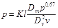 , (4)где К - коэффициент, принимаемый для воздуховодов класса П, равным 0,004, класса Н - 0,012; l - суммарная длина транзитных воздуховодов, а для местных отсосов, включая участки, в обслуживаемом помещении, м; 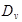 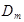 где S - периметр воздуховода, м; 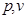 - соответственно избыточное статическое давление, Па, и скорость воздуха в воздуховоде, м/с, в месте его присоединения к вентилятору.2. Для воздуховодов прямоугольного сечения следует вводить коэффициент 1,1 на получение величины потерь или подсосов воздуха. |
||||||||||||||||
4.118.* Транзитные воздуховоды и коллекторы после пересечения перекрытия или противопожарной преграды обслуживаемого или другого помещения на всем протяжении до помещения для вентиляционного оборудования следует предусматривать с пределом огнестойкости не менее указанного в табл. 2.
Таблица 2*
|
Предел огнестойкости транзитных воздуховодов и коллекторов, ч, при прокладке их через помещения |
|||||||||
|
складов и кладовых категорий А, Б, В и горючих материалов** |
категорий |
коридор производственного здания |
общественные и административные |
бытовые санузлы, душевые, умывальные, бани и т.п.) |
коридор (кроме производственного здания) |
жилые |
|||
|
А, Б или в |
Г |
Д |
|||||||
|
Складов и кладовых категорий А, Б, В и горючих материалов* |
0,5 0,5 |
0,5 0,5 |
0,5 0,5 |
0,5 0,5 |
0,5 0,5 |
нд |
нд |
0,5 |
НД |
|
Категорий А, Б или В |
0,5 0,5 |
0,25 0,5 |
0,25 0,5 |
0,25 0,5 |
0,25 0,5 |
0,25*** 0,5 |
0,25 0,5 |
0,25 0,5 |
НД |
|
Категории Г |
0,5 0,5 |
0,25 0,5 |
HH |
HH |
0,25 0,5* |
0,5 0,5 |
0,25 0,5 |
0,25 0,5 |
НД |
|
Категории Д |
0,5 0,5 |
0,25 0,5 |
HH |
HH |
HH 0,5* |
0,25 0,5* |
HH 0,5* |
HH 0,5* |
нд |
|
Коридор производственного здания |
0,5 0,5 |
0,25 0,5 |
HH 0,5* |
HH 0,5* |
HH 0,5* |
HH 0,5* |
HH 0,5* |
HH 0,5* |
нд |
|
Общественные и административные здания |
НД |
0,25*** 0,5 |
0,5 0,5 |
HH 0,5* |
HH 0,5* |
HH 0,5* |
HH 0,5* |
HH 0,5 |
нд |
|
Бытовые (санузлы, душевые, умывальные, бани и т.п.) |
0,5 0,5 |
0,25 0,5 |
0,25 0,5 |
HH 0,5* |
HH 0,5* |
HH 0,5* |
HH 0,5* |
HH 0,5 |
нд |
|
Коридоры (кроме производственных зданий) |
нд |
нд |
НД |
HH 0,5* |
HH 0,5* |
HH 0,5* |
HH 0,5* |
HH 0,5 |
HH 0,5 |
|
Жилые |
НД |
НД |
НД |
HH 0,5* |
HH 0,5* |
HH 0,5* |
HH 0,5* |
HH 0,5 |
HH 0,5 |
|
НД - не допускается прокладка транзитных воздуховодов. НН - не нормируется прокладка транзитных воздуховодов. ___________ * 0,25 ч - в зданиях IIIa, IV, IVa и V степеней огнестойкости. ** Предел огнестойкости воздуховодов для кладовых горючих материалов: бумага, белье, деревянный инвентарь и т.п. и кладовых категории В площадью (и тех и других) 50 м2 и менее нормируется как для общественных помещений. *** Не допускается прокладка воздуховодов из помещений категорий А и Б. Примечания: 1. Значения предела огнестойкости приведены в таблице в виде дроби: в числителе - в пределах обслуживаемого этажа; в знаменателе - за пределами обслуживаемого этажа. 2. Для воздуховодов, прокладываемых через несколько различных помещений одного этажа, следует предусматривать одинаковое большее значение предела огнестойкости. |
|||||||||
4.119. Для помещений общественных и административно-бытовых зданий, а также для помещений категорий В (кроме складов), Г и Д допускается проектировать транзитные воздуховоды из негорючих материалов с ненормируемым пределом огнестойкости, предусматривая установку огнезадерживающих клапанов при пересечении воздуховодами перекрытия с нормируемым пределом огнестойкости 0,25 ч и более или каждой противопожарной преграды с нормируемым пределом огнестойкости 0,75 ч и более.
4.120.* Транзитные воздуховоды и коллекторы систем любого назначения допускается проектировать:
а) из трудногорючих и горючих материалов при условии прокладки каждого воздуховода в отдельной шахте, кожухе или гильзе из негорючих материалов с пределом огнестойкости 0,5 ч;
б) из негорючих материалов с пределом огнестойкости ниже нормируемого, но не ниже 0,25 ч для воздуховодов, а также коллекторов при условии прокладки воздуховодов и коллекторов в общих шахтах и других ограждениях из негорючих материалов с пределом огнестойкости 0,5 ч.
4.121. Предел огнестойкости воздуховодов и коллекторов, прокладываемых в помещениях для вентиляционного оборудования и снаружи зданий, не нормируется, кроме транзитных воздуховодов и коллекторов, прокладываемых через помещения для вентиляционного оборудования.
4.122. Транзитные воздуховоды для систем тамбуров-шлюзов при помещениях категорий А и Б, а также систем местных отсосов взрывоопасных смесей следует проектировать с пределом огнестойкости 0,5 ч.
4.123. Огнезадерживающие клапаны, устанавливаемые в отверстиях и в воздуховодах, пересекающих перекрытия и противопожарные преграды, следует предусматривать с пределом огнестойкости:
1 ч - при нормируемом пределе огнестойкости перекрытия или преграды 1 ч и более;
0,5 ч - при нормируемом пределе огнестойкости перекрытия или преграды 0,75 ч;
0,25 ч - при нормируемом пределе огнестойкости перекрытия или преграды 0,25 ч.
В других случаях огнезадерживающие клапаны следует предусматривать не менее предела огнестойкости воздуховода, для которого они предназначены, но не менее 0,25 ч.
4.124. Воздуховоды допускается прокладывать в противопожарных стенах, выполняя требования СНиП 2.01.02-85*.
4.125. Транзитные воздуховоды не следует прокладывать через лестничные клетки (за исключением воздуховодов приточной противодымной вентиляции) и через помещения убежищ.
4.126. Воздуховоды для помещений категорий А и Б и воздуховоды систем местных отсосов взрывоопасных смесей не следует прокладывать в подвалах и в подпольных каналах.
4.127. Места прохода транзитных воздуховодов через стены, перегородки и перекрытия зданий (в том числе в кожухах и шахтах) следует уплотнять негорючими материалами, обеспечивая нормируемый предел огнестойкости пересекаемого ограждения.
4.128. Воздуховоды, по которым перемещаются взрывоопасные смеси, допускается пересекать трубопроводами с теплоносителем, имеющим температуру не менее чем на 20 % ниже температуры самовоспламенения, °С, газов, паров, пыли или аэрозолей.
4.129. Напорные участки воздуховодов систем местных отсосов взрывоопасных смесей, а также вредных веществ 1-го и 2-го классов опасности не следует прокладывать через другие помещения. Допускается прокладывать указанные воздуховоды сварными класса II без разъемных соединений.
4.130.* Внутри воздуховодов и на расстоянии 50 мм от их стенок не допускается размещать газопроводы и трубопроводы с горючими веществами, кабели, электропроводку и канализационные трубопроводы; не допускается также пересечение воздуховодов этими коммуникациями.
4.131.* Воздуховоды общеобменных вытяжных систем и систем местных отсосов смеси воздуха с горючими газами легче воздуха следует проектировать с подъемом не менее 0,005 в направлении движения газовоздушной смеси.
4.132. Воздуховоды, в которых возможны оседание или конденсация влаги или других жидкостей, следует проектировать с уклоном не менее 0,005 в сторону движения воздуха и предусматривать дренирование.
4.133. Невязка потерь давления по ветвям воздуховодов не должна превышать 10 %.
5.1. Аварийную противодымную вентиляцию для удаления дыма при пожаре (далее - «противодымную вентиляцию») следует проектировать для обеспечения эвакуации людей из помещений здания в начальной стадии пожара, возникшего в одном из помещений.
5.2.* Удаление дыма следует предусматривать:
а) из коридоров или холлов жилых, общественных и административно-бытовых зданий в соответствии с требованиями СНиП 2.08.01-89, СНиП 2.08.02-89* и СНиП 2.09.04-87;
б) из коридоров производственных, общественных и административно-бытовых зданий высотой более 26,5 м;
в) из коридоров длиной более 15 м, не имеющих естественного освещения световыми проемами в наружных ограждениях (далее - «без естественного освещения»), производственных зданий категорий А, Б и В с числом этажей 2 и более;
г) из каждого производственного или складского помещения с постоянными рабочими местами без естественного освещения или с естественным освещением, не имеющим механизированных приводов для открывания фрамуг в верхней части окон на уровне 2,2 м и выше от пола до низа фрамуг и для открывания проемов в фонарях (в обоих случаях площадью, достаточной для удаления дыма при пожаре), если помещения отнесены к категориям: А, Б или В; Г или Д - в зданиях IVa степени огнестойкости;
д) из каждого помещения, не имеющего естественного освещения: общественного или административно-бытового, если оно предназначено для массового пребывания людей; помещения площадью 55 м2 и более, предназначенного для хранения или использования горючих материалов, если в нем имеются постоянные рабочие места; гардеробных площадью 200 м2 и более.
Допускается, проектировать удаление дыма через примыкающий коридор из производственных помещений категории В площадью 200 м2 и менее.
Требования настоящего пункта не распространяются:
а) на помещения, время заполнения которых дымом в соответствии с п. 5.8 больше времени, необходимого для безопасной эвакуации людей из помещения (кроме помещений категорий А и Б);
б) на помещения площадью менее 200 м2, оборудованные установками автоматического водяного или пенного пожаротушения, кроме помещений категории А или Б;
в) на помещения, оборудованные установками автоматического газового пожаротушения;
г) на лабораторные помещения, указанные в обязательном приложении 18;
д) на коридоры и холлы, если для всех помещений, имеющих двери в этот коридор или холл, проектируется непосредственное удаление дыма.
Примечание. Если на площади основного помещения, для которого предусмотрено удаление дыма, размещены другие помещения, площадью каждое 50 м2 и менее, то отдельное удаление дыма из этих помещений допускается не предусматривать при условии расчета расхода дыма с учетом суммарной площади этих помещений.
5.3. Расход дыма, кг/ч, удаляемого из коридора или холла, при отсутствии коридора следует определять по расчету или по рекомендуемому приложению 22, принимая удельный вес дыма 6 Н/м3 его температуру 300 °С и поступление воздуха в коридор через открытые двери на лестничную клетку или наружу.
При двустворчатых дверях следует принимать в расчет (здесь и далее) открывание большей створки.
а) подсос воздуха через неплотности дымовых шахт, каналов и воздуховодов из листовой стали в соответствии с п. 4.117, а при изготовлении из других материалов - по расчету или в соответствии с п. 4.117;
б) подсос воздуха , кг/ч, через неплотности закрытых дымовых клапанов по данным заводов-изготовителей, но не более чем по формуле
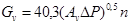
где
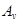
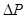
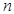
К вытяжной системе коридора или холла допускается присоединять не более двух дымоприемников на одном этаже.
5.6. Расход дыма, удаляемого непосредственно из помещения в соответствии с пп. 5.2, г и 5.2, д следует определять по расчету или в соответствии с рекомендуемым приложением 22:
а) по периметру очага пожара G, кг/ч;
б) по защите дверей эвакуационных выходов от проникания дыма за их пределы G1, кг/ч.
Примечания: 1. При определении расхода дыма в соответствии с п. 5.6, б следует принимать большую скорость ветра для холодного или теплого периодов года по обязательному СНиП 23-01, но не более 5 м/с.
2. Для изолированных помещений для которых в соответствии с п. 5.2, д допускается удаление дыма через коридор, за расчетный принимается больший расход дыма, определяемый в соответствии с требованиями п. 5.3 или п. 5.5.
5.7. Помещения площадью более 1600 м2 необходимо разделять на дымовые зоны, учитывая возможность возникновения пожара в одной из них. Каждую дымовую зону следует, как правило, ограждать плотными вертикальными завесами из негорючих материалов, спускающихся с потолка (перекрытия) к полу, но не ниже 2,5 м от него, образуя под потолком (перекрытием) «резервуары дыма».
Дымовые зоны, огражденные или не огражденные завесами, следует предусматривать с учетом возникновения возможных очагов пожара.
Площадь дымовой зоны не должна превышать 1600 м2.
5.8. Время t, с, заполнения дымом помещения или резервуара дыма, следует определять по формуле
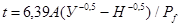
где А - площадь помещения или резервуара дыма, м2;
У - уровень нижней границы дыма, принимаемый для помещений У = 2,5 м, а для резервуаров дыма - как высота, м, от нижней кромки завес до пола помещения;
Н - высота помещения, м;
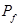
5.9. Скорость движения дыма, м/с, в клапанах, шахтах и воздуховодах следует принимать по расчету.
Средние удельный вес g, Н/м3, и температуру дыма t, °С, при удалении его из помещения объемом 10 тыс. м3 и менее следует принимать: g = 4 Н/м3, t = 600 °С - при горении жидкости и газов; g = 5 Н/м3, t = 450 °С - при горении твердых тел и g = 6 Н/м3, t = 300 °С при горении волокнистых веществ и при удалении дыма из коридоров и холлов.
Средний удельный вес дыма gm при удалении его из помещения объемом более 10 тыс. м3 следует определять по формуле
gm = g + 0,05 (Vр - 10), (7)
где Vр - объем помещения, тыс. м3.
5.10. Удаление дыма непосредственно из помещений одноэтажных зданий, как правило, следует предусматривать вытяжными системами с естественным побуждением через дымовые шахты с дымовыми клапанами или открываемые незадуваемые фонари.
Из примыкающей к окнам зоны шириной l £ 15 м допускается удаление дыма через оконные фрамуги (створки), низ которых находится на уровне не менее чем 2,2 м от пола.
В многоэтажных зданиях, как правило, следует предусматривать вытяжные устройства с искусственным побуждением, допускается предусматривать отдельные для каждого изолированного помещения дымовые шахты с естественным побуждением.
В библиотеках, книгохранилищах, архивах, складах бумаги следует предусматривать вытяжные устройства с искусственным побуждением, принимая средний удельный вес газов 7 Н/м3 и температуру 220 °С.
При искусственном побуждении к вертикальному коллектору следует присоединять ответвления не более чем от четырех помещений или четырех дымовых зон на каждом этаже.
5.11. Для противодымной защиты следует предусматривать:
а) установку радиальных вентиляторов с электродвигателем на одном валу (в том числе радиальных крышных вентиляторов) в исполнении, соответствующем категории обслуживаемого помещения, без мягких вставок - при удалении дыма во время пожара. Допускаются применение мягких вставок из негорючих материалов, а также установка радиальных вентиляторов на клиноременной передаче или на муфте, охлаждаемых воздухом;
б) воздуховоды и шахты из негорючих материалов с пределом огнестойкости не менее 0,75 ч - при удалении дыма непосредственно из помещения, 0,5 ч - из коридоров или холлов, 0,25 ч - при удалении газов после пожара (п. 5.13);
в) дымовые клапаны из негорючих материалов, автоматически открывающиеся при пожаре, с пределом огнестойкости 0,5 ч - при удалении дыма из коридоров, холлов и помещений и 0,25 ч - при удалении газов и дыма после пожара (п. 5.13). Допускается применять дымовые клапаны с ненормируемым пределом огнестойкости для систем, обслуживающих одно помещение.
Дымоприемные устройства следует размещать возможно более равномерно по площади помещения, дымовой зоны или резервуара дыма. Площадь, обслуживаемую одним дымоприемным устройством, следует принимать не более 900 м2;
г) выброс дыма в атмосферу на высоте не менее 2 м от кровли из горючих или трудногорючих материалов. Допускается выброс дыма на меньшей высоте с защитой кровли негорючими материалами на расстоянии не менее 2 м от края выбросного отверстия. Над шахтами при естественном побуждении воздуха следует предусматривать установку дефлекторов. Выброс дыма в системах с искусственным побуждением следует предусматривать через трубы без зонтов;
д) установку обратных клапанов у вентилятора. Допускается не предусматривать установку обратных клапанов, если в обслуживаемом производственном помещении имеются избытки теплоты более 20 Вт/м3 (при переходных условиях).
Выброс дыма из шахт, отводящих дым из нижележащих этажей и подвалов, допускается предусматривать в аэрируемые пролеты плавильных, литейных, прокатных и других горячих цехов. При этом устье шахт следует размещать на уровне не менее 6 м от пола аэрируемого пролета, на расстоянии не менее 3 м по вертикали и 1 м - по горизонтали от строительных конструкций зданий или на уровне не менее 3 м от пола при устройстве дренчерного орошения устья дымовых шахт. Дымовые клапаны на этих шахтах устанавливать не следует.
5.12. Вентиляторы для удаления дыма следует размещать в отдельных от других систем помещениях с противопожарными перегородками 1-го типа.
В помещениях для вытяжного оборудования противодымной защиты следует предусматривать вентиляцию, обеспечивающую при пожаре температуру воздуха, не превышающую 60 °С в теплый период года (параметры Б).
Допускается размещение вентиляторов вытяжных систем на кровле и снаружи здания (кроме районов с расчетной температурой наружного воздуха минус 40 °С и ниже - параметры Б). Устанавливаемые снаружи вентиляторы (кроме «крышных») должны быть ограждены, как правило, сеткой от посторонних лиц.
В местах пересечения воздуховодами (кроме транзитных) ограждения помещения, обсуживаемого газовым пожаротушением, следует предусматривать огнезадерживающие клапаны с пределом огнестойкости не менее 0,25 ч.
5.14. Для удаления дыма при пожаре и газов после пожара допускается использовать системы аварийной и основной вентиляции, удовлетворяющие требованиям пп. 5.3 - 5.13.
5.15. Подачу наружного воздуха при пожаре для противодымной защиты зданий следует предусматривать:
а) в лифтовые шахты при отсутствии у выхода из них тамбуров-шлюзов в зданиях с незадымляемыми лестничными клетками;
б) в незадымляемые лестничные клетки 2-го типа;
в) в тамбуры-шлюзы при незадымляемых лестничных клетках 3-го типа;
г) в тамбуры-шлюзы перед лифтами в подвальном этаже общественных, административно-бытовых и производственных зданий;
д) в тамбуры-шлюзы перед лестницами в подвальных этажах с помещениями категории В.
Примечание. В плавильных, литейных, прокатных и других горячих цехах в тамбуры-шлюзы допускается подавать воздух, забираемый из аэрируемых пролетов здания;
е) в машинные помещения лифтов в зданиях категорий А и Б, кроме лифтовых шахт, в которых при пожаре поддерживается избыточное давление воздуха.
5.16. Расход наружного воздуха для противодымной защиты следует рассчитывать на обеспечение давления воздуха не менее 20 Па:
а) в нижней части лифтовых шахт при закрытых дверях в лифтовых шахтах на всех этажах (кроме нижнего);
б) в нижней части каждого отсека незадымляемых лестничных клеток 2-го типа при открытых дверях на пути эвакуации из коридоров и холлов на этаже пожара в лестничную клетку и из здания наружу при закрытых дверях из коридоров и холлов на всех остальных этажах;
в) в тамбурах-шлюзах на этаже пожара в зданиях с незадымляемыми лестничными клетками 3-го типа при одной открытой двери в коридор или холл, в тамбурах-шлюзах перед лифтами в подвальных этажах в соответствии с п. 5.15.
г) при закрытых дверях, а также в тамбуры-шлюзы в подвальных этажах в соответствии с п. 5.15;
д) при открытой двери в подвальный этаж.
Расход воздуха, подаваемый в тамбуры-шлюзы, работающие при пожаре с одной открытой дверью в коридор, холл или подвальный этаж, следует определять расчетом или по скорости 1,3 м/с в проеме двери.
5.17. При расчете противодымной защиты следует принимать:
а) температуру наружного воздуха и скорость ветра для холодного периода года (параметры Б). Если скорость ветра в теплый период года больше, чем в холодный, расчеты должны быть проверены на теплый период года (параметры Б). Скорость ветра в холодный и теплый периоды года следует принимать не более 5 м/с;
б) направление ветра на фасад, противоположный эвакуационному выходу из здания;
в) избыточное давление в шахтах лифтов в незадымляемых лестничных клетках 2-го типа и в тамбурах-шлюзах - по отношению к давлению наружного воздуха на наветренной стороне здания;
г) давление на закрытые двери на путях эвакуации не более 150 Па;
д) площадь одной большой створки при двустворчатых дверях.
Кабины лифтов должны находиться на нижнем этаже, а двери в лифтовую шахту на этом этаже должны быть открытыми.
5.18.* Для противодымной защиты следует предусматривать:
а) установку радиальных или осевых вентиляторов в отдельных помещениях от вентиляторов другого назначения с противопожарными перегородками 1-го типа. Допускается размещать вентиляторы на кровле и снаружи зданий, кроме районов с температурой наружного воздуха минус 40 °С и ниже (параметры Б) с ограждениями для защиты от доступа посторонних лиц;
б) воздуховоды из негорючих материалов с пределом огнестойкости 0,5 ч;
в) установку обратного клапана у вентилятора. Обратный клапан допускается не устанавливать, если в обслуживаемом производственном здании имеются избытки теплоты 20 Вт/м3 и более (при переходных условиях);
г) приемные отверстия для наружного воздуха, размещаемые на расстоянии не менее 5 м от выбросов дыма.
6.1. Систему холодоснабжения от естественных и искусственных источников холода для охлаждения воздуха следует проектировать, если нормируемые метеорологические условия не могут быть обеспечены установками прямого или косвенного испарительного охлаждения.
Выбор источника холода должен быть экономически обоснован.
6.2. Систему холодоснабжения следует, как правило, проектировать из двух или большего числа машин или установок охлаждения; допускается проектировать одну машину или одну установку охлаждения с регулируемой мощностью.
Число машин для холодоснабжения систем кондиционирования производственных помещений следует обосновывать допустимыми отклонениями параметров при выходе из строя одной машины большей мощности.
6.3. Резервные холодильные машины допускается предусматривать для систем кондиционирования первого класса, работающих круглосуточно.
6.4. Потери холода в оборудовании и трубопроводах систем холодоснабжения следует определять расчетом, но принимать не более 10 % мощности холодильной установки.
6.5. Поверхностные воздухоохладители (испарители хладонов) и контактные воздухоохладители (форсуночные камеры и др.), присоединенные по одноконтурной водяной (рассольной) системе холодоснабжения с закрытыми испарителями хладонов, допускается применять:
а) для помещений, в которых не используется открытый огонь;
б) если испарители включены в автономный контур циркуляции хладона одной холодильной машины;
в) если масса хладона при аварийном выбросе его из контура циркуляции в меньшее из обслуживаемых помещений не превысит допустимой аварийной концентрации, приведенной в табл. 3.
Таблица 3
|
11 |
12 |
22 |
500 |
502 |
|
|
Допустимая аварийная концентрация, г/м3 |
570 |
500 |
360 |
410 |
460 |
Если воздухоохладитель обслуживает группу помещений, то концентрацию хладона q, г/м3, в любом из этих помещений следует определять по формуле
q = 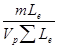
где m - масса хладона в контуре циркуляции, г;
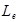
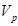
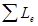
6.6. Водяные (рассольные) системы холодоснабжения следует проектировать, как правило, с баком-аккумулятором.
6.7. Температуру и качество воды, охлаждающей аппараты холодильных установок, следует принимать в соответствии с техническими условиями на машины.
6.8. Температуру кипения хладагента в кожухотрубных испарителях (с межтрубным кипением агента), охлаждающих воду, следует принимать не ниже плюс 2 °С, для других испарителей - не ниже минус 2 °С.
6.9. Холодильные установки компрессионного типа с хладагентом хладоном при содержании масла в любой из холодильных машин 250 кг и более не допускается размещать в помещениях производственных, общественных и административно-бытовых зданий, если над их перекрытием или под полом имеются помещения с массовым постоянным или временным (кроме аварийных ситуаций) пребыванием людей.
В жилых зданиях, лечебно-профилактических учреждениях (стационарах), интернатах для престарелых и инвалидов, детских учреждениях и гостиницах холодильные установки (кроме холодильных установок автономных кондиционеров) размещать не допускается.
6.10. Холодильные установки с хладагентом аммиаком допускается применять для холодоснабжения производственных помещений, размещая установки в отдельных зданиях, пристройках или отдельных помещениях одноэтажных производственных зданий. Конденсаторы и испарители допускается размещать на открытых площадках на расстоянии не менее 2 м от стены здания.
Применение поверхностных воздухоохладителей с хладагентом аммиаком не допускается.
6.11. Пароэжекторные холодильные машины следует размещать на открытых площадках или в производственных зданиях.
6.12. Бромисто-литиевые холодильные машины следует размещать на открытых площадках. Допускается размещение бромисто-литиевых машин в отдельных помещениях зданий различного назначения.
6.13. Компрессорные и абсорбционные холодильные машины следует применять для работы по циклу теплового насоса при технико-экономическом обосновании.
6.14. Помещения, в которых размещаются бромисто-литиевые и пароэжекторные холодильные машины и тепловые насосы с хладагентом хладоном, следует относить к категории Д, а с хладагентом аммиаком - к категории Б. Хранение масла следует предусматривать в отдельном помещении.
6.15. Устье выхлопных труб для хладона из предохранительных клапанов следует предусматривать не менее чем на 2 м выше окон и дверей и воздухоприемных отверстий и не менее чем на 5 м - выше уровня земли. Выхлоп хладагента следует направлять вверх.
Устье выхлопных труб для аммиака следует выводить на высоту не менее чем на 3 м выше кровли наиболее высокого здания, расположенного в радиусе 50 м.
6.16. В помещении холодильных установок следует предусматривать общеобменную вентиляцию, рассчитанную на удаление избытков теплоты.
При этом следует предусматривать системы вытяжной вентиляции с искусственным побуждением, обеспечивающим не менее:
а) 3-кратного, а при аварии - 5-кратного воздухообмена в 1 ч при применении хладонов типов 11, 12, 22, 500, 502;
б) 4-кратного, а при аварии - 11-кратного воздухообмена в 1 ч при применении аммиака.
7.1. Воздух, выбрасываемый в атмосферу из систем местных отсосов и общеобменной вентиляции производственных помещений, содержащий загрязняющие вредные вещества (далее - «пылегазовоздушная смесь»), следует, как правило, очищать. Кроме того, необходимо рассеивать в атмосфере остаточные количества вредных веществ. В соответствии с «Методикой расчета концентрации в атмосферном воздухе вредных веществ, содержащихся в выбросах предприятий» (ОНД-86) Госкомгидромета СССР, концентрации вредных веществ в атмосфере от вентиляционных выбросов данного объекта с учетом фоновых концентраций от других выбросов не должны превышать:
а) предельно допустимых максимальных разовых концентраций вредных веществ в атмосферном воздухе населенных мест (далее - ПДКn), установленных Госкомсанэпиднадзором России, или 0,8 ПДКn - в зонах санитарно-защитной охраны курортов, крупных санаториев, домов отдыха и в зонах отдыха городов, или меньших величин, установленных для данного объекта. Для вредных веществ с не установленными Госкомсанэпиднадзором России максимально разовыми концентрациями в качестве ПДКn следует принимать среднесуточные предельно допустимые концентрации вредных веществ в атмосферном воздухе населенных мест;
б) 0,3 предельно допустимых концентраций вредных веществ для рабочей зоны производственных помещений (далее - ПДКw,z в воздухе, поступающем в помещение производственных и административно-бытовых зданий через приемные устройства, открываемые окна и проемы, используемые для притока воздуха.
7.2. Допускается не предусматривать очистку выбросов пылегазовоздушной смеси из систем с естественным побуждением, а также из систем источников малой мощности с искусственным побуждением при соблюдении требований п. 7.1 или если очистка выбросов не требуется в соответствии с разделом проекта «Охрана атмосферного воздуха от загрязнений».
Рассеивание в атмосфере вредных веществ из систем аварийной вентиляции следует проектировать по данным технологической части проекта.
7.3. Вентиляционным источником малой мощности следует считать один источник или условный источник, заменяющий группу источников, находящихся на кровле здания в пределах площади круга диаметром 20 м, с общим расходом пылегазовоздушной смеси L £ 10 м3/с, концентрацией для одного или условного источника q, мг/м3 по каждому вредному веществу, не превышающей q1, q2 и q3, а для пыли, кроме того, не более 100 мг/м3. Значения q1, q2 и q3 следует определять по формулам:
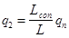
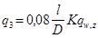
В формулах (9) - (12):
Н - высота расположения устья источника над уровнем земли, м; для группы источников высота определяется как высота условного источника, равная среднему арифметическому из высот всех источников группы;
D - диаметр устья источника, м; для группы источников диаметр условного источника равен:
если устье источника не круглое, то за D следует принимать диаметр, определяемый по формуле D = 1,13А0,5, здесь А - площадь поперечного сечения устья источника, м2;
- условный расход атмосферного воздуха для разбавления выбрасываемых вредных веществ; при расстояниях от источника до границы населенного пункта 50, 100, 300, 500 м и более условный расход воздуха равен соответственно 60, 250, 2000, 6000 м3/c;
L - расход пылегазовоздушной смеси для одного конкретного или условного источника, м3/с;
l - расстояние, м, между устьем одного источника и приемным устройством для наружного воздуха по горизонтали: при l < 10 D следует принимать l = 10 D; при l > 60 D l = 60 D.
Для группы i источников расстояние условного источника от приемного отверстия l равно:
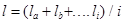
где 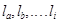
К - коэффициент, характеризующий уменьшение концентрации вредных веществ в струе, определяемый по обязательному приложению 23;
qn1, qn2 - предельно допустимые концентрации, мг/м3 вредных веществ соответственно по отношению к воздуху населенных мест и к воздуху рабочей зоны.
Для одного источника и условного источника с выбросом вредных веществ, обладающих эффектом суммации действия, условная концентрация q, мг/м3, приведенная к одному веществу, определяется:
а) при сравнении с q1 и q2 по формуле
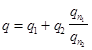 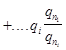
б) при сравнении с q3, по формуле
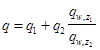 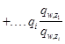
В формулах (14), (15):
q1 ... qi - концентрации вредных веществ, мг/м3, обладающих эффектом суммации действия;
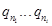
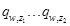
1 ... i - число вредных веществ, обладающих эффектом суммации по отношению к воздуху рабочей зоны.
Для источника вредных веществ, обладающих эффектом
суммации, 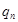 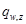
7.4. Выбросы пылегазовоздушной смеси из систем с искусственным побуждением следует предусматривать через трубы и шахты, не имеющие зонтов, вертикально вверх из систем:
а) общеобменной вентиляции из помещений категорий А и Б или из систем, удаляющих вредные вещества 1-го, 2-го классов опасности и неприятно пахнущие вещества;
б) местных отсосов вредных и неприятно пахнущих веществ и взрывоопасных смесей.
7.5. Выбросы в атмосферу из систем вентиляции производственных помещений следует размещать по расчету или на расстоянии от приемных устройств для наружного воздуха не менее 10 м по горизонтали или на 6 м по вертикали при горизонтальном расстоянии менее 10 м. Кроме того, выбросы из систем местных отсосов вредных веществ следует размещать на высоте не менее 2 м над кровлей более высокой части здания, если расстояние до ее выступа менее 10 м.
Выбросы из систем аварийной вентиляции следует размещать на высоте не менее 3 м от земли до нижнего края отверстия.
7.6. Расстояние от источников выброса систем местных отсосов взрывоопасной парогазовоздушной смеси до ближайшей точки возможных источников воспламенения (искры, газы с высокой температурой и др.) , м, следует принимать, не менее:
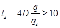
где D - диаметр устья источника, м;
q - концентрация горючих газов, паров, пыли в устье выброса, мг/м3;
qz - концентрация горючих газов, паров и пыли, равная 10 % их нижнего концентрационного предела распространения пламени, мг/м3.
7.7. Выбросы от систем вытяжной вентиляции следует, как правило, проектировать отдельными, если хотя бы в одной из труб или шахт возможно отложение горючих веществ или если при смешении выбросов возможно образование взрывоопасных смесей.
Допускается соединение в одну трубу или шахту таких выбросов, предусматривая вертикальные разделки с пределом огнестойкости 0,5 ч от места присоединения каждого воздуховода до устья.
8.1. Отопление, вентиляцию и кондиционирование следует, как правило, проектировать, используя тепловые вторичные энергетические ресурсы (ВЭР):
а) воздуха, удаляемого системами общеобменной вентиляции, кондиционирования и местных отсосов;
б) технологических установок, передаваемых в виде тепло- и холодоносителей, пригодных для отопления, вентиляции и кондиционирования.
Использование теплоты воздуха из систем вентиляции с естественным побуждением допускается не проектировать.
8.2. Целесообразность использования ВЭР для отопления, вентиляции или кондиционирования, выбор схем утилизации теплоты (холода), теплоутилизационного оборудования и теплонасосных установок должны быть обоснованы технико-экономическим расчетом с учетом неравномерности поступления ВЭР и теплопотребления в системах. При равной экономичности проектных решений (в пределах 15 % по приведенным затратам) следует принимать решение, обеспечивающее большую экономию топлива.
8.3. Концентрация вредных веществ в приточном воздухе при использовании теплоты (холода) ВЭР не должна превышать указанной в п. 2.12.
8.4. В воздухо-воздушных и газовоздушных теплоутилизаторах в местах присоединения воздуховодов следует обеспечивать давление приточного воздуха больше давления удаляемого воздуха или газа. При этом максимальная разность давлений не должна превышать величины, допустимой по техническим условиям на теплоутилизационное оборудование.
В воздухо-воздушных или газовоздушных теплоутилизаторах следует учитывать перенос вредных веществ за счет конструктивных особенностей аппарата.
8.5.* В воздухо-воздушных теплоутилизаторах (а также в теплоутилизаторах на базе тепловых труб) для нагревания (охлаждения) приточного воздуха не следует использовать воздух:
а) из помещений категорий А и Б, допускается использовать воздух из помещений категорий А и Б для нагревания воздуха этих помещений при применении оборудования систем во взрывозащищенном исполнении;
б) из системы местных отсосов взрывоопасных смесей или воздуха, содержащего вредные вещества 1-го класса опасности. Допускается использование воздуха из систем местных отсосов невзрывоопасных пылевоздушных смесей после их очистки от пыли;
в) содержащий осаждающиеся или конденсирующиеся на теплообменных поверхностях вредные вещества 1-го и 2-го классов опасности или имеющий резко выраженные неприятные запахи - в регенеративных теплоутилизаторах, а также в теплоутилизаторах на базе тепловых труб;
г) содержащий болезнетворные бактерии, вирусы, грибки в опасных концентрациях, устанавливаемых Госкомсанэпиднадзором России.
8.6. В теплоутилизаторах для нагревания (охлаждения) приточного воздуха допускается использовать теплоту вредных и горючих жидкостей и газов, применяемых в качестве промежуточного теплоносителя, заключенного в герметизированные трубопроводы и теплообменники при согласовании с органами надзора; при отсутствии согласования следует использовать дополнительный контур с теплоносителем, не содержащим вредных веществ 1-го, 2-го и 3-го классов опасности, или при содержании их концентрацией, могущей превысить ПДК при аварийном выделении в помещение.
8.7. В контактных теплоутилизаторах (камерах орошения и т.п.) для нагревания (охлаждения) приточного воздуха следует использовать воду питьевого качества или водные растворы, не содержащие вредных веществ.
8.8. При использовании теплоты (холода) вентиляционного воздуха, содержащего осаждающиеся пыли и аэрозоли, следует предусматривать очистку воздуха до концентраций, допустимых по техническим условиям на теплоутилизационное оборудование, а также очистку теплообменных поверхностей от загрязнений.
8.9. В системах утилизации теплоты ВЭР следует предусматривать мероприятия по защите промежуточного теплоносителя от замерзания и образования наледи на теплообменной поверхности теплоутилизаторов.
8.10. Резервное теплохолодоснабжение систем, использующих теплоту (холод) ВЭР от вентиляционных систем и технологического оборудования, следует предусматривать при технико-экономическом обосновании.
9.1. Электроприемники систем отопления, вентиляции и кондиционирования следует предусматривать той же категории, которая устанавливается для электроприемников технологического или инженерного оборудования здания.
Электроснабжение систем аварийной вентиляции и противодымной защиты, кроме систем для удаления газов и дыма после пожара (см. п. 5.13.), следует предусматривать I категории. При невозможности по местным условиям осуществлять питание электроприемников I категории от двух независимых источников допускается осуществлять питание их от одного источника от разных трансформаторов двухтрансформаторной подстанции или от двух близлежащих однотрансформаторных подстанций. При этом подстанции должны быть подключены к разным питающим линиям, проложенным по разным трассам, и иметь устройства автоматического ввода резерва, как правило, на стороне низкого напряжения.
9.2. В зданиях и помещениях, оборудованных системами противодымной защиты, следует предусматривать автоматическую пожарную сигнализацию.
9.3. Для зданий и помещений, оборудованных автоматическими установками пожаротушения или автоматической пожарной сигнализацией, следует предусматривать автоматическое блокирование электроприемников (кроме электроприемников оборудования, присоединяемого к однофазной сети освещения) систем вентиляции, кондиционирования и воздушного отопления (далее - «системы вентиляции»), а также системы противодымной защиты с этими установками для:
а) отключения при пожаре систем вентиляции, кроме систем подачи воздуха в тамбуры-шлюзы помещений категорий А и Б;
б) включения при пожаре систем (кроме систем, указанных в п. 5.13) аварийной противодымной защиты;
в) открывания дымовых клапанов в помещении или дымовой зоне, в которой произошел пожар, или в коридоре на этаже пожара и закрывания огнезадерживающих клапанов.
Дымовые и огнезадерживающие клапаны, фрамуги (створки) и другие открывающиеся устройства шахт, фонарей и окон, предназначенные или используемые для противодымной защиты, должны иметь автоматическое, дистанционное и ручное (в месте их установки) управление.
Примечания: 1. Необходимость частичного или полного отключения систем вентиляции должна определяться по технологическим требованиям.
2. Для помещений, имеющих только систему ручной сигнализации о пожаре, следует предусматривать дистанционное отключение систем вентиляции, обслуживающих эти помещения, и включение систем противодымной защиты.
9.4. Помещения, имеющие автоматическую установку пожаротушения или автоматическую пожарную сигнализацию, должны быть оборудованы дистанционными устройствами, размещенными вне обслуживаемых ими помещений.
При наличии требований одновременного отключения всех систем вентиляции в помещениях категорий А и Б дистанционные устройства следует предусматривать снаружи здания.
Для помещений категории В допускается предусматривать дистанционное отключение систем вентиляции для отдельных зон площадью не менее 2500 м2.
9.5. Для оборудования, металлических трубопроводов и воздуховодов систем отопления и вентиляции помещений категорий А и Б, а также систем местных отсосов, удаляющих взрывоопасные смеси, следует предусматривать заземление в соответствии с требованиями ПУЭ.
9.6. Уровень автоматизации и контроля систем следует выбирать в зависимости от технологических требований и экономической целесообразности.
9.7. Параметры теплоносителя (холодоносителя) и воздуха необходимо контролировать в следующих системах:
а) внутреннего теплоснабжения - температуру и давление теплоносителя в общих подающем и обратном трубопроводах в помещении для приточного вентиляционного оборудования; температуру и давление - на выходе из теплообменных устройств;
б) отопления с местными отопительными приборами - температуру воздуха в контрольных помещениях (по требованию технологической части проекта);
в) воздушного отопления и приточной вентиляции - температуру приточного воздуха и температуру воздуха в контрольном помещении (по требованию технологической части проекта);
г) воздушного душирования - температуру подаваемого воздуха;
д) кондиционирования - температуру воздуха наружного, рециркуляционного, приточного после камеры орошения или поверхностного воздухоохладителя и в помещениях; относительную влажность воздуха в помещениях (при ее регулировании);
е) холодоснабжения - температуру холодоносителя до и после каждого теплообменного или смесительного устройства, давление холодоносителя в общем трубопроводе;
ж) вентиляции и кондиционирования с фильтрами, камерами статического давления, теплоутилизаторами - давление и разность давления воздуха (по требованию технических условий на оборудование или по условиям эксплуатации).
9.8. Приборы дистанционного контроля следует предусматривать для измерения основных параметров; для измерения остальных параметров надлежит предусматривать местные приборы (переносные или стационарные).
Для нескольких систем, оборудование которых расположено в одном помещении, следует предусматривать, как правило, один общий прибор для измерения температуры и давления в подающем трубопроводе и индивидуальные приборы на обратных трубопроводах оборудования.
9.9. Сигнализацию о работе оборудования («Включено», «Авария») следует предусматривать для систем:
а) вентиляции помещений без естественного проветривания производственных, административно-бытовых и общественных зданий;
б) местных отсосов, удаляющих вредные вещества 1-го и 2-го классов опасности или взрывоопасные смеси;
в) общеобменной вытяжной вентиляции помещений категорий А и Б;
г) вытяжной вентиляции помещений складов категорий А и Б, в которых отклонение контролируемых параметров от нормы может привести к аварии.
Примечание. Требования, относящиеся к помещениям без естественного проветривания, не распространяются на уборные, курительные, гардеробные и другие подобные помещения.
9.10. Дистанционный контроль и регистрацию основных параметров в системах отопления, вентиляции и кондиционирования следует проектировать по технологическим требованиям.
9.11. Автоматическое регулирование параметров следует проектировать для систем:
а) отопления, выполняемых в соответствии с п. 3.12*;
б) воздушного отопления и душирования;
в) приточной и вытяжной вентиляции, работающих с переменным расходом воздуха, а также с переменной смесью наружного и рециркуляционного воздуха;
г) приточной вентиляции при обосновании;
д) кондиционирования;
е) холодоснабжения;
ж) местного доувлажнения воздуха в помещениях;
з) обогрева полов зданий в соответствии с п. 3.6. за исключением систем, присоединяемых к сетям централизованного теплоснабжения.
Примечание. Для общественных, административно-бытовых и производственных зданий следует, как правило, предусматривать программное регулирование параметров, обеспечивающее снижение расхода теплоты.
9.12.* Датчики контроля и регулирования параметров воздуха следует размещать в характерных точках в обслуживаемой или рабочей зоне помещения в местах, где они не подвергаются влиянию нагретых или охлажденных поверхностей и струй приточного воздуха. Допускается размещать датчики в рециркуляционных (или вытяжных) воздуховодах, если параметры воздуха в них не отличаются от параметров воздуха в помещении или отличаются на постоянную величину.
9.13.* Автоматическое блокирование следует предусматривать для:
а) открывания и закрывания клапанов наружного воздуха при включении и отключении вентиляторов;
б) открывания и закрывания клапанов систем вентиляции, соединенных воздуховодами для полной или частичной взаимозаменяемости при выходе из строя одной из систем;
в) закрывания клапанов (см. п. 5.13) на воздуховодах для помещений, защищаемых установками газового пожаротушения при отключении вентиляторов систем вентиляции этих помещений;
г) включения резервного оборудования при выходе из строя основного;
д) включения и отключения подачи теплоносителя при включении и отключении воздухонагревателей и отопительных агрегатов;
е) включения систем аварийной вентиляции при образовании в воздухе рабочей зоны помещения концентраций вредных веществ, превышающих ПДК, а также концентрации горючих веществ в воздухе помещения, превышающих 10 % НКПРП газо-, паро-, пылевоздушной смеси.
9.14.* Автоматическое блокирование вентиляторов систем местных отсосов и общеобменной вентиляции, указанных в пп. 4.20 и 4.21, не имеющих резервных вентиляторов, с технологическим оборудованием должна обеспечивать остановку оборудования при выходе из строя вентилятора, а при невозможности остановки технологического оборудования - включение аварийной сигнализации.
9.15. Для систем с переменным расходом наружного или приточного воздуха следует предусматривать блокировочные устройства для обеспечения минимального расхода наружного воздуха.
9.16. Для вытяжной вентиляции с очисткой воздуха в мокрых пылеуловителях следует предусматривать автоматическое блокирование вентилятора с устройством для подачи воды в пылеуловители, обеспечивая:
а) включение подачи воды при включении вентилятора;
б) остановку вентилятора при прекращении подачи воды или падении уровня воды в пылеуловителе;
в) невозможность включения вентилятора при отсутствии воды или понижении уровня воды в пылеуловителе ниже заданного.
9.17. Включение воздушной завесы следует блокировать с открыванием ворот, дверей и технологических проемов. Автоматическое отключение завесы следует предусматривать после закрытия ворот, дверей или технологических проемов и восстановления нормируемой температуры воздуха помещения, предусматривая сокращение расхода теплоносителя до минимального, обеспечивающего незамерзание воды.
9.18. Автоматическую защиту от замерзания воды в воздухонагревателях следует предусматривать в районах с расчетной температурой наружного воздуха для холодного периода года минус 5 °С и ниже (параметры Б).
9.19. Диспетчеризацию систем следует проектировать для производственных, жилых, общественных и административно-бытовых зданий, в которых предусмотрена диспетчеризация технологических процессов или работы инженерного оборудования.
9.20. Точность поддержания метеорологических условий при кондиционировании (если отсутствуют специальные требования) следует принимать в точках установки датчиков для систем:
а) первого и второго классов ±1 °С по температуре и ±7 % по относительной влажности;
б) с местными кондиционерами-доводчиками и смесителями с индивидуальными регуляторами температуры прямого действия ±2 °С.
10.1. Открываемые проемы или окна производственных помещений, предназначенные для естественного притока воздуха в теплый период года, следует размешать, как правило, на высоте не более 1,3 м от пола или рабочей площадки до низа проема, а для притока воздуха в холодный период года - на высоте не менее 3,2 м.
В жилых, общественных и административно-бытовых зданиях следует предусматривать открываемые форточки, фрамуги или другие устройства, предназначенные для подачи приточного воздуха.
10.2. Для створок, фрамуг или жалюзи в световых проемах производственных и общественных зданий, размещаемых на высоте 2,2 м и более от уровня пола или рабочей площадки, следует предусматривать дистанционные и ручные устройства для открывания, размещаемые в пределах рабочей или обслуживаемой зоны помещения, а используемые для удаления дыма при пожаре - вне этих помещений.
10.3. Стационарные лестницы и площадки следует проектировать для обслуживания оборудования, арматуры и приборов, размещаемых выше 1,9 м и более от пола или уровня земли, в соответствии с правилами техники безопасности.
Арматуру, приборы, вентиляционные и отопительные агрегаты, а также автономные кондиционеры допускается ремонтировать и обслуживать с передвижных устройств при соблюдении установленных правил техники безопасности.
10.4. Постоянные рабочие места, расположенные на расстоянии менее 3 м от наружных дверей и 6 м от ворот, следует защищать перегородками или экранами от обувания холодным воздухом.
10.5. Для ремонта и обслуживания вентиляционного и холодильного оборудования следует разрабатывать строительные конструкции для грузоподъемных машин, предусмотренных п. 4.108.
10.6. Ограждающие конструкции помещения для вентиляционного оборудования, размещаемого за противопожарной стеной (см. п. 4.102), следует предусматривать с пределом огнестойкости 0,75 ч, двери - с пределом огнестойкости 0,6 ч.
10.7. Для монтажа и демонтажа вентиляционного или холодильного оборудования (или замены его частей) следует предусматривать монтажные проемы.
11.1. Водоснабжение камер орошения, увлажнителей и доувлажнителей и других устройств, используемых для обработки приточного и рециркуляционного воздуха, следует предусматривать водой питьевого качества по ГОСТ 2874-82*.
11.2. Воду, циркулирующую в камерах орошения и других аппаратах систем вентиляции и кондиционирования, следует фильтровать. При повышенных санитарных требованиях необходимо предусматривать бактерицидную очистку воды.
11.3. Воду технического качества следует предусматривать для мокрых пылеуловителей вытяжных систем (кроме рециркуляционных), а также для промывки приточного и теплоутилизационного оборудования.
11.4. Отвод воды в канализацию следует предусматривать для опорожнения систем отопления, тепло- и холодоснабжения и для отвода конденсата.
11.5. Качество воды, охлаждающей аппаратуру холодильных установок, следует принимать по техническим условиям на холодильные машины.
|
Период года |
Температура воздуха, °С |
Относительная влажность воздуха, %, не более |
Скорость движения воздуха, м/с, не более |
|
Теплый |
Не более чем на 3 °С выше расчетной температуры наружного воздуха (параметры А)* |
65*** |
0,5 |
|
Холодный и переходные условия |
18** - 22 |
65 |
0,2 |
|
* Но не более 28 °С для общественных и административно-бытовых помещений с постоянным пребыванием людей и не более 33 °С для указанных зданий, расположенных в районах с расчетной температурой наружного воздуха (параметры А) 25 °С и выше. ** Не ниже 14 °С - для общественных и административно-бытовых помещений с пребыванием людей в уличной одежде. *** Допускается принимать до 75 % в районах с расчетной относительной влажностью воздуха более 75 % (параметры А). Примечание. Нормы установлены для людей, находящихся в помещении более 2 ч непрерывно. |
|||
|
Период года |
Категория работ |
Оптимальные нормы на постоянных и непостоянных рабочих местах |
Допустимые нормы |
|
||||||
|
температуры, °С |
скорости движения воздуха, м/с, не более |
относительной влажности воздуха, %, не более |
|
|||||||
|
температура, °С |
скорость движения, м/с, не более |
относительная влажность, % |
на всех рабочих местах |
на постоянных рабочих местах |
на непостоянных рабочих местах |
|||||
|
на постоянных и непостоянных рабочих местах |
|
|||||||||
|
Теплый |
Легкая: |
40-60 |
На 4 °С выше расчетной температуры наружного воздуха (параметры А) и не более указанных в гр. 7 и 8 |
75 |
|
|||||
|
Iа |
23-25 |
0,1 |
28/31 |
30/32 |
0,2 |
|
||||
|
Iб |
22-24 |
0,2 |
28/31 |
30/32 |
0,3 |
|
||||
|
Средней тяжести: |
|
|||||||||
|
IIа |
21-23 |
0,3 |
27/30 |
29/31 |
0,4 |
|
||||
|
IIб |
20-22 |
0,3 |
27/30 |
29/31 |
0,5 |
|
||||
|
Тяжелая: |
|
|||||||||
|
III |
18-20 |
0,4 |
26/29 |
28/30 |
0,6 |
|
||||
|
Холодный и переходные условия |
Легкая: |
40-60 |
- |
75 |
|
|||||
|
Iа |
22-24 |
0,1 |
21-25 |
18-26 |
0,1 |
|
||||
|
I6 |
21-23 |
0,1 |
20-24 |
17-25 |
0,2 |
|
||||
|
Средней тяжести: |
|
|||||||||
|
IIа |
18-20 |
0,2 |
17-23 |
15-24 |
0,3 |
|
||||
|
II6 |
17-19 |
0,2 |
15-21 |
13-23 |
0,4 |
|
||||
|
Тяжелая: |
|
|||||||||
|
III |
16-18 |
0,3 |
13-19 |
12-20 |
0,5 |
|
||||
|
Примечания: 1. В таблице допустимые нормы внутреннего воздуха приведены в виде дроби: в числителе для районов с расчетной температурой наружного воздуха (параметры А) ниже 25 °С, в знаменателе - выше 25 °С. 2. Для районов с температурой наружного воздуха (параметры А) 25 °С и выше соответственно для категорий работ легкой, средней тяжести и тяжелой температуру на рабочих местах следует принимать на 4 °С выше температуры наружного воздуха, но не выше указанной в знаменателе гр. 7 и 8. 3. В населенных пунктах с расчетной температурой наружного воздуха 18 °C и ниже (параметры А) вместо 4 °С, указанных в гр. 6, допускается принимать 6 °С. 4 Нормативная разность температур между температурой на рабочих местах и температурой наружного воздуха (параметры А) 4 или 6 °С может быть увеличена при обосновании расчетом в соответствии с п. 2.10. 5. В населенных пунктах с расчетной температурой наружного воздуха t, °С, на постоянных и непостоянных рабочих местах в теплый период года (параметры А), превышающей: а) 28 °С - на каждый градус разности температур t - 28 °С следует увеличивать скорость движения воздуха на 0,1 м/с, но не более чем на 0,3 м/с выше скорости, указанной в гр. 9; б) 24 °С - на каждый градус разности температур t - 24 °С допускается принимать относительную влажность воздуха на 5 % ниже относительной влажности, указанной в гр. 10. 6. В климатических зонах с высокой относительной влажностью воздуха (вблизи морей, озер и др.), а также при применении адиабатной обработки приточного воздуха водой для обеспечения на рабочих местах температур, указанных в гр. 7 и 8, допускается принимать относительную влажность воздуха на 10 % выше относительной влажности, определенной в соответствии с примеч. 5, 6. 7. если допустимые нормы невозможно обеспечить по производственным или экономическим условиям, то следует предусмотреть воздушное душирование или кондиционирование воздуха на постоянных рабочих местах. |
|
|||||||||
|
Категория работ |
Температура воздуха вне струи, °С |
Средняя на 1 м2 скорость воздуха в душирующей струе на рабочем месте, м/с |
Температура смеси воздуха в душирующей струе, °С, на рабочем месте при поверхностной плотности лучистого теплового потока, Вт/м2 |
||||
|
140-350 |
700 |
1400 |
2100 |
2800 |
|||
|
Легкая - I |
Принимать по гр. 6-8 обязательного приложения 2 |
1 |
28 |
24 |
21 |
16 |
- |
|
2 |
- |
28 |
26 |
24 |
20 |
||
|
3 |
- |
- |
28 |
26 |
24 |
||
|
3,5 |
- |
- |
- |
27 |
25 |
||
|
Средней тяжести - II |
1 |
27 |
22 |
- |
- |
- |
|
|
2 |
28 |
24 |
21 |
16 |
- |
||
|
3 |
- |
27 |
24 |
21 |
18 |
||
|
3,5 |
- |
28 |
25 |
22 |
19 |
||
|
Тяжелая - III |
2 |
25 |
19 |
16 |
- |
- |
|
|
3 |
26 |
22 |
20 |
18 |
17 |
||
|
3,5 |
- |
23 |
22 |
20 |
19 |
||
|
Примечания: 1. При температуре воздуха вне струи, отличающейся от указанной в таблице, температуру смеси воздуха в душирующей струе на рабочем месте следует повышать или понижать на 0,4 °С на каждый градус разности от значения, приведенного в таблице, но принимать не ниже 16 °C. 2. Поверхностную плотность лучистого теплового потока следует принимать равной средней за время облучения. 3. При длительности воздействия лучистого теплового потока менее 15 или более 30 мин непрерывной работы температуру смеси воздуха в душирующей струе допускается принимать соответственно на 2 °С выше или ниже значений, приведенных в таблице. 4. Для промежуточных значений поверхностной плотности лучистого теплового потока температуру смеси воздуха в душирующей струе следует определять интерполяцией. |
|||||||
Номограмма построена для расположения лучистых поверхностей на расстоянии 1,5 м от работающего по горизонтали и 1 м - по вертикали при площади поверхности нагревателя или охладителя 0,5 м2 и более и скорости движения воздуха на рабочем месте не более 0,5 м/с.
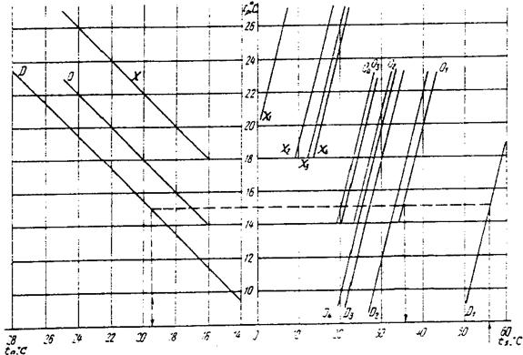
tn - нормируемая температура воздуха, °С, на постоянном рабочем месте в производственном помещении;
D, O, X - линии перелома для определения tp - температуры воздуха в помещении при нормируемых допустимых D или оптимальных О температурах воздуха и нагревании тела рабочего лучистым нагревателем с температурой поверхности t1 и при нормируемых оптимальных Х температурах воздуха и охлаждении тела рабочего лучистым охладителем с температурой поверхности t1;
D1 - D4, O1 - O4 - линии перелома для определения температуры поверхности лучистого нагревателя, соответствующие допустимым и оптимальным температурам воздуха на рабочем месте при расположении нагревателя сверху D1, O1, сбоку с одной стороны, D2, O2, сбоку с двух сторон D3, O3, и сбоку с трех сторон D4, O4;
Х1 - Х4 - линии перелома для определения температуры поверхности лучистого охладителя при указанном выше расположении поверхностей.
|
Период года |
Температура воздуха, °С |
Относительная влажность воздуха, % |
Скорость движения воздуха, м/с, не более |
|
Теплый |
20 - 22 23 - 25 |
60 - 30 60 - 30 |
0,2 0,3 |
|
Холодный и переходные условия |
20 - 22 |
45 - 30 |
0,2 |
|
Примечание. Нормы установлены для людей, находящихся в помещении более 2 ч непрерывно. |
|||
|
Метеорологические условия |
Размещение людей |
Коэффициенты К для категорий работ |
|
|
легкой - I |
средней тяжести - II, тяжелой -III |
||
|
Допустимые |
В зоне прямого воздействия приточной струи воздуха в пределах участка: |
||
|
а) начального и при воздушном душировании |
1 |
1 |
|
|
б) основного |
1,4 |
1,8 |
|
|
Вне зоны прямого воздействия приточной струи воздуха |
1,6 |
2 |
|
|
В зоне обратного потока воздуха |
1,4 |
1,8 |
|
|
Оптимальные |
В зоне прямого воздействия приточной струи воздуха в пределах участка: |
||
|
а) начального |
1 |
1 |
|
|
б) основного |
1,2 |
1,2 |
|
|
Вне зоны прямого воздействия приточной струи или в зоне обратного потока воздуха |
1,2 |
1,2 |
|
|
Примечание. Зона прямого воздействия струи определяется площадью поперечного сечения струи, в пределах которой скорость движения воздуха изменяется от vz до 0,5 vz. |
|||
|
Метеорологические условия |
Помещения |
Допустимые отклонения температуры, °С |
|||
|
при восполнении недостатков теплоты в помещении |
при ассимиляции избытков теплоты в помещении |
||||
|
Размещение людей |
|||||
|
в зоне прямого воздействия приточной струи |
вне зоны прямого воздействия приточной струи |
в зоне прямого воздействия приточной струи |
вне зоны прямого воздействия приточной струи |
||
|
Допустимые |
Жилые, общественные и административно-бытовые: |
||||
|
Dt1 |
3 |
3,5 |
- |
- |
|
|
Dt2 |
- |
- |
1,5 |
2 |
|
|
Производственные: |
|||||
|
Dt1 |
5 |
6 |
- |
- |
|
|
Dt2 |
- |
- |
2 |
2,5 |
|
|
Оптимальные |
Любые, за исключением помещений, к которым предъявляются специальные технологические требования: |
||||
|
Dt1 |
1 |
1,5 |
- |
- |
|
|
Dt2 |
- |
- |
1 |
1,5 |
|
Приложение 8 исключено. Поправка от 25.03.2003 г.
1. Основные и добавочные потери теплоты следует определять суммируя потери теплоты через отдельные ограждающие конструкции Q, Вт, с округлением до 10 Вт для помещений по формуле
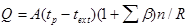
где А - расчетная площадь ограждающей конструкции, м2;
R - сопротивление теплопередаче ограждающей конструкции, м2 × °С/Вт. Сопротивление теплопередаче конструкции следует определять по СНиП II-3-7** (кроме полов на грунте); для полов на грунте - в соответствии с п. 3 настоящего приложения, принимая R = RC, для неутепленных полос и R = Rh для утепленных;
tp - расчетная температура воздуха, °С, в помещении с учетом повышения ее в зависимости от высоты для помещений высотой более 4 м;
texp - расчетная температура наружного воздуха для холодного периода года при расчете потерь теплоты через наружные ограждения или температура воздуха более холодного помещения-при расчете потерь теплоты через внутренние ограждения;
b - добавочные потери теплоты в долях от основных потерь, определяемые в соответствии с п. 2 настоящего приложения;
п - коэффициент, принимаемый в зависимости от положения наружной поверхности ограждающих конструкций по отношению к наружному воздуху по СНиП II-3-79**.
2.* Добавочные потери теплоты b через ограждающие конструкции следует принимать в долях от основных потерь:
а) в помещениях любого назначения через наружные вертикальные и наклонные (вертикальная проекция) стены, двери и окна, обращенные на север, восток, северо-восток и северо-запад в размере 0,1, на юго-восток и запад - в размере 0,05; в угловых помещениях дополнительно - по 0,05 на каждую стену, дверь и окно, если одно из ограждений обращено на север, восток, северо-восток и северо-запад и 0,1 - в других случаях;
б) в помещениях, разрабатываемых для типового проектирования, через стены, двери и окна, обращенные на любую из сторон света, в размере 0,08 при одной наружной стене и 0,13 для угловых помещений (кроме жилых), а во всех жилых помещениях - 0,13;
а) через необогреваемые полы первого этажа над холодными подпольями зданий в местностях с расчетной температурой наружного воздуха минус 40 °С и ниже (параметры Б) - в размере 0,05;
г) через наружные двери, не оборудованные воздушными или воздушно-тепловыми завесами, при высоте зданий H, м, от средней планировочной отметки земли до верха карниза, центра вытяжных отверстий фонаря или устья шахты в размере:
0,2 H - для тройных дверей с двумя тамбурами между ними;
0,27 H - для двойных дверей с тамбурами между ними;
0,34 H - для двойных дверей без тамбура;
0,22 H - для одинарных дверей;
д) через наружные ворота, не оборудованные воздушными и воздушно-тепловыми завесами, - в размере 3 при отсутствии тамбура и в размере 1 - при наличии тамбура у ворот.
Примечание: Для летних и запасных наружных дверей и ворот добавочные потери теплоты по подпунктам «г» и «д» не следует учитывать.
3. Сопротивление теплопередаче следует определять:
а) для неутепленных полов на грунте и стен, расположенных ниже уровня земли, с коэффициентом теплопроводности l ³ 1,2 Вт/(м2×°С) по зонам шириной 2 м, параллельным наружным стенам, принимая Rс, м2×°С /Вт, равным:
2,1 - для I зоны;
4,3 - » II »;
8,6 - » III »;
14,2 - » IV » (для оставшейся площади пола);
б) для утепленных полов на грунте и стен, расположенных ниже уровня земли, с коэффициентом теплопроводности lh < 1,2 Вт/(м2×°С) утепляющего слоя толщиной d, м, принимая Rh, м2×°С/Вт по формуле
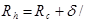
в) для полов на лагах, принимая Rh, м2×°С/Вт, по формуле
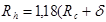
4. Потери теплоты через ограждающие конструкции производственных помещений со значительными избытками теплоты следует рассчитывать с учетом лучистого теплообмена между источниками теплоты и ограждениями.
1. Расход теплоты Qi, Вт, на нагревание инфильтрующегося воздуха следует определять по формуле
Qi = 0,28 S Gi c(tp - ti)k, (1)
где Gi - расход инфильтрующегося воздуха, кг/ч, через ограждающие конструкции помещения, определяемый в соответствии с п. 3 настоящего приложения;
с - удельная теплоемкость воздуха, равная 1 кДж/(кг×°С);
tp, ti - расчетные температуры воздуха, °С, соответственно в помещении (средняя с учетом повышения для помещений высотой более 4 м) и наружного воздуха в холодный период года (параметры Б);
k - коэффициент учета влияния встречного теплового потока в конструкциях, равный 0,7 для стыков панелей стен и окон с тройными переплетами, 0,8 - для окон и балконных дверей с раздельными переплетами и 1,0 - для одинарных окон, окон и балконных дверей со спаренными переплетами и открытых проемов.
2. Расход теплоты Qi, Вт, на нагревание инфильтрующегося воздуха в помещениях жилых и общественных зданий при естественной вытяжной вентиляции, не компенсируемого подогретым приточным воздухом, следует принимать равным большей из величин, полученных по расчету по формулам (1) и (2):
Qi = 0,28 Ln pc(tp - ti)k, (2)
где Ln - расход удаляемого воздуха, м3/ч, не компенсируемый подогретым приточным воздухом; для жилых зданий - удельный нормативный расход 3 м3/ч на 1 м2 жилых помещений;
p - плотность воздуха в помещении, кг/м3.
3. Расход инфильтрующегося воздуха в помещении Gi, кг/ч, через неплотности наружных ограждений следует определять по формуле
Gi = 0,216 S A1 Dpi0,67 /Ru + S A2 GH (Dpi/Dp1)0,67 + 3456 S A3 Dpi0,5 + 0,5 S l Dpi/Dp1,
где A1, A2 - площади наружных ограждающих конструкций, м2, соответственно световых проемов (окон, балконных дверей, фонарей) и других ограждений;
A3 - площадь щелей, неплотностей и проемов в наружных ограждающих конструкциях;
Dpi, Dp1 - расчетная разность между давлениями на наружной и внутренней поверхностях ограждающих конструкций соответственно на расчетном этаже при Dp1 = 10 Па;
Ru - сопротивление воздухопроницанию, м2×ч×Па/кг, принимаемое по СНиП II-3-79**;
GH - нормативная воздухопроницаемость наружных ограждающих конструкций, кг/(м2×ч), принимаемая по СНиП II-3-79**;
l - длина стыков стеновых панелей, м.
Расчетная разность между давлениями на наружной и внутренней поверхностях каждой ограждающей конструкции Dpi, Па, принимается после определения условно-постоянного давления воздуха в здании pint, Па (отождествляется с давлениями на внутренних поверхностях наружных ограждающих конструкций), на основе равенства расхода воздуха, поступающего в здание SGi, кг/ч, и удаляемого из него SGext, кг/ч, за счет теплового и ветрового давлений и дисбаланса расходов между подаваемым и удаляемым воздухом системами вентиляции с искусственным побуждением и расходуемого на технологические нужды.
Расчетная разность давлений Dpi, определяется по формуле
Dpi = (H - hi) (gi - gp) + 0,5 pi v2 (ce,n - ce,p) kl - pint, (4)
где H - высота здания, м, от уровня средней планировочной отметки земли до верха карниза, центра вытяжных отверстий фонаря или устья шахты;
hi - расчетная высота, м, от уровня земли до верха окон, балконных дверей, дверей, ворот, проемов или до оси горизонтальных и середины вертикальных стыков стеновых панелей;
gi, gp - удельный вес, Н/м, соответственно наружного воздуха и воздуха в помещении, определяемый по формуле
g = 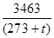
pi - плотность наружного воздуха, кг/м3;
v - скорость ветра, м/с, принимаемая по СНиП 23-01 и в соответствии с п.3.2;
ce,n, ce,p - аэродинамические коэффициенты соответственно для наветренной и подветренной поверхностей ограждений здания, принимаемые по СНиП 2.01.07-85;
kl - коэффициент учета изменения скоростного давления ветра в зависимости от высоты здания, принимаемый по СНиП 2.01.07-85;
pint - условно-постоянное давление воздуха в здании, Па.
Примечания: 1. Максимальный расход теплоты на нагревание наружного воздуха следует учитывать для каждого помещения при наиболее неблагоприятном для него направлением ветра. При расчете тепловой нагрузки здания с автоматическим регулированием расход теплоты на инфильтрацию следует принимать при наиболее неблагоприятном направлении ветра для всего здания.
2. Инфильтрацию воздуха в помещении через стыки стеновых панелей следует учитывать только для жилых зданий.
Поправка от 25.03.2003 г.
|
Помещения |
Система отопления (отопительные приборы, теплоноситель, предельная температура теплоносителя или теплоотдающей поверхности) |
|
1. Жилые, общественные и административно-бытовые (кроме указанных в пп. 2-10) |
Водяное с радиаторами, панелями и конвекторами при температуре теплоносителя для систем: 95 °С - двухтрубных и 105 °С - однотрубных. Водяное с нагревательными элементами, встроенными в наружные стены, перекрытия и полы ( в соответствии с п. 3.16). Воздушное. Местное (квартирное) водяное с радиаторами или конвекторами при температуре теплоносителя 95 °С. Электрическое или газовое с температурой на теплоотдающей поверхности 95 °С |
|
2. Детские дошкольные, лестничные клетки и вестибюли в детских дошкольных учреждениях |
Водяное с радиаторами, панелями и конвекторами при температуре теплоносителя 95 °С. Водяное с нагревательными элементами, встроенными в наружные стены, перекрытия и полы (в соответствии с п. 3.16). Электрическое с температурой на теплоотдающей поверхности не более 95 °С |
|
3. Палаты, операционные и другие помещения лечебного назначения в больницах (кроме психиатрических и наркологических, общественных и административно-бытовых) |
Водяное с радиаторами и панелями при температуре теплоносителя 85 °С. Водяное с нагревательными элементами, встроенными в наружные стены, перекрытия и полы (в соответствии с п. 3.16) |
|
4. Палаты, операционные и другие помещения лечебного назначения в психиатрических и наркологических больницах (кроме общественных и административно-бытовых) |
Водяное с радиаторами и панелями при температуре теплоносителя 95 °С. Водяное с нагревательными элементами и стояками, встроенными в наружные стены, перекрытия и полы (в соответствии с п. 3.16). Электрическое с температурой на теплоотдающей поверхности 95 °С |
|
5. Спортивные залы |
Воздушное. Водяное с радиаторами, панелями и конвекторами и гладкими трубами при температуре теплоносителя 150 °С. Водяное с нагревательными элементами, встроенными в наружные стены, перекрытия и полы (в соответствии с п. 3.16). Электрическое или газовое с температурой на теплоотдающей поверхности 150 °С |
|
6. Бань, прачечных и душевых |
Водяное с радиаторами, конвекторами и гладкими трубами при температуре теплоносителя: 95 °С для помещений бань и душевых, 150 °С - для прачечных. Воздушное. Водяное с нагревательными элементами, встроенными в наружные стены, перекрытия и полы ( в соответствии с п. 3.16) |
|
7. Общественного питания (кроме ресторанов) и торговые залы (кроме указанных в п. 8) |
Водяное с радиаторами, панелями, конвекторами и гладкими трубами при температуре теплоносителя 150 °С. Водяное с нагревательными элементами и стояками, встроенными в наружные стены, перекрытия и полы (в соответствии с п. 3.16). Воздушное. Электрическое и газовое с температурой на теплоотдающей поверхности 150 °С. Электрическое и газовое с высокотемпературными темными излучателями в неутепленных и полуоткрытых помещениях и зданиях |
|
8. Торговые залы и помещения для обработки и хранения материалов, содержащих легковоспламеняющиеся жидкости |
|
|
9. Пассажирские залы вокзалов |
Воздушное. Водяное с радиаторами и конвекторами при температуре теплоносителя 150 °С. Водяное с нагревательными элементами, встроенными в наружные стены, перекрытия и полы (в соответствии с п. 3.16). Электрическое с температурой на теплоотдающей поверхности 150 °С |
|
Водяное с радиаторами и конвекторами при температуре теплоносителя 115 °С. Воздушное. Электрическое с температурой на теплоотдающей поверхности 115 °С |
|
|
а) категорий А, Б и В без выделений пыли и аэрозолей или с выделением негорючей пыли |
Воздушное (в соответствии с пп. 4.10 и 4.11). Водяное и паровое (в соответствии с пп. 3.9, 3.19) при температуре теплоносителя: воды 150 °С, пара 130 °С. Электрическое и газовое для помещений категории В (кроме складов категории В) при температуре на теплоотдающей поверхности 130 °С. Электрическое для помещений категорий А и Б (кроме складов категорий А и Б) во взрывозащищенном исполнении в соответствии с ПУЭ при температуре на теплоотдающей поверхности 130 °С |
|
б) категорий А, Б и В с выделением горючей пыли и аэрозолей |
Воздушное (в соответствии с пп. 4.10 и 4.11). Водяное и паровое ( в соответствии с пп. 3.9, 3.19) при температуре теплоносителя: воды 110 °С в помещениях категорий А и Б и 130 °С - в помещениях категории В. Электрическое и газовое для помещений категории В (кроме складов категории В) при температуре на теплоотдающей поверхности 110 °С. Электрическое для помещений категорий А и Б (кроме складов категорий А и Б) во взрывозащищенном исполнении в соответствии с ПУЭ при температуре на теплоотдающей поверхности 110 °С |
|
в) категорий Г и Д без выделений пыли и аэрозолей |
Воздушное. Водяное и паровое с ребристыми трубами, радиаторами и конвекторами при температуре теплоносителя: воды 150°С, пара 130 °С. Водяное с нагревательными элементами и стояками, встроенными в наружные стены, перекрытия и полы (в соответствии с п. 3.16). Газовое и электрическое, в том числе с высокотемпературными темными излучателями ( в соответствии с пп. 2.7 и 3.18) |
|
г) категорий Г и Д с повышенными требованиями к чистоте воздуха |
Воздушное. Водяное с радиаторами (без оребрения), панелями и гладкими трубами при температуре теплоносителя 150 °С. Водяное с нагревательными элементами, встроенными в наружные стены, перекрытия и полы (в соответствии с п. 3.16) |
|
д) категорий Г и Д с выделением негорючих пыли и аэрозолей |
Воздушное. Водяное и паровое с радиаторами при температуре теплоносителя: воды 150 °С, пара 130 °С. Водяное с нагревательными элементами, встроенными в наружные стены, перекрытия и полы (в соответствии с п. 3.16). Электрическое и газовое с температурой на теплоотдающей поверхности 150 °С |
|
е) категорий Г и Д с выделением горючих пыли и аэрозолей |
Воздушное. Водяное и паровое с радиаторами и гладкими трубами при температуре теплоносителя: воды 130 °С, пара 110 °С. Водяное с нагревательными элементами, встроенными в наружные стены, перекрытия и полы (в соответствии с п. 3.16) |
|
ж) категорий Г и Д со значительным влаговыделением |
Воздушное. Водяное и паровое с радиаторами, конвекторами и ребристыми трубами при температуре теплоносителя: воды 150 °С, пара 130 °С. Газовое с температурой на теплоотдающей поверхности 150 °С |
|
з) с выделением возгоняемых ядовитых веществ |
По специальным нормативным документам |
|
12. Лестничные клетки, пешеходные переходы и вестибюли |
Водяное и паровое с радиаторами, конвекторами и калориферами при температуре теплоносителя: воды 150 °С, пара 130 °С. Воздушное |
|
13. Тепловые пункты |
Водяное и паровое с радиаторами и гладкими трубами при температуре теплоносителя: воды 150 °С, пара 130 °С |
|
14. Отдельные помещения и рабочие места в неотапливаемых и отапливаемых помещениях с температурой воздуха ниже нормируемой (кроме помещений категорий А, Б и В) |
Газовое и электрическое, в том числе с высокотемпературными излучателями (в соответствии с пп. 2.7 и 3.18) |
|
Примечания: 1. Для помещений, указанных в поз 1 (кроме жилых) и поз. 10, допускается применять однотрубные системы водяного отопления с температурой теплоносителя до 130 °С при использовании в качестве отопительных приборов конвекторов с кожухом при скрытой прокладке или изоляции участков, стояков и подводок с теплоносителем, имеющим температуры выше 105 °С для помещений, указанных в поз. 1, и выше 115 °С - для помещений, указанных в поз. 10, а также при соединении трубопроводов в пределах обслуживаемых помещений на сварке. 2. Температуру воздуха при расчете систем воздушного отопления, совмещенного с приточной вентиляцией следует определять в соответствии с требованиями п. 4.10. 3 Отопление газовыми приборами в зданиях III, IIIа, IIIб, IVa и V степеней огнестойкости не допускается. |
|
1. Расчетный тепловой поток Q, кВт, системы водяного отопления следует определять по формуле
Q = S Q1 b1 b2 + Q2 + Q3, (1)
где Q1 - часть расчетных потерь теплоты, кВт, зданием, возмещаемых отопительными приборами:
b1 - коэффициент учета дополнительного теплового потока устанавливаемых отопительных приборов за счет округления сверх расчетной величины, принимаемый по табл. 1;
Таблица 1
|
Коэффициент b1 |
|
|
0,12 |
1,02 |
|
0,15 |
1,03 |
|
0,18 |
1,04 |
|
0,21 |
1,06 |
|
0,24 |
1,08 |
|
0,30 |
1,13 |
|
Примечание. Для отопительных приборов помещения с номинальным тепловым потоком более 2.3 кВт следует принимать вместо коэффициента b1, коэффициент b1¢, определяемый по формуле b1¢ = 0,5 (1 + b1) (2) |
|
b2 - коэффициент учета дополнительных потерь теплоты отопительными приборами, расположенными у наружных ограждений, принимаемый по табл. 2;
Q2 - дополнительные потери теплоты при остывании теплоносителя в подающих и обратных магистралях, проходящих в неотапливаемых помещениях, кВт, определяемые расчетом:
Q3 - часть расчетных потерь теплоты, возмещаемых поступлением теплоты от трубопроводов, проходящих в отапливаемых помещениях по п. 3.46, кВт.
Таблица 2
|
Коэффициент b2 при установке прибора |
||
|
у наружной стены, в том числе под световым проемом |
у остекления светового проема |
|
|
Радиатор: |
||
|
чугунный секционный |
1,02 |
1,07 |
|
стальной панельный |
1,04 |
1,10 |
|
Конвектор: |
||
|
с кожухом |
1,02 |
1,05 |
|
без кожуха |
1,03 |
1,07 |
2. Дополнительные потери теплоты n, %, через участки наружных ограждений, расположенных за отопительным прибором, а также за счет остывания теплоносителя в трубопроводах, проложенных в неотапливаемых помещениях, в сумме следует принимать не более 7 % теплового потока системы отопления и определять по формуле
n = 100 S [Q1(b2,mt - 1) + Q2] / Q £ 7, (3)
где b2,mt - средневзвешенный коэффициент из принятых при расчете по формуле (1) настоящего приложения.
3. Расход теплоносителя G, кг/ч, в системе, ветви или в стояке системы отопления следует определять по формуле
G = 3,6 S Q / (cDt), (4)
где Q - расчетный тепловой поток [см. формулу (1)], Вт, обеспечиваемый теплоносителем системы, ветви или стояка;
с - удельная теплоемкость воды, равная 4,2 кДж / (кг °С);
Dt - разность температур, °С, теплоносителя на входе и выходе из системы, ветви или стояка.
|
Теплоноситель |
Трубы с наружным диаметром, мм |
|
|
до 60 |
св. 60 |
|
|
Горячая вода |
Электросварные по ГОСТ 10704-91 Легкие по ГОСТ 3262-75* |
Электросварные по ГОСТ 10704-91 и ГОСТ 8732-78 |
|
Насыщенный пар |
Электросварные по ГОСТ 10704-91 Обыкновенные по ГОСТ 3262-75* |
|
Примечания: 1. Толщину стенки трубы следует принимать минимальную по ГОСТу для расчетного диаметра трубы с учетом соединения на резьбе или сваркой.
2. Для трубопроводов пои скрытой прокладке, а также для элементов системы отопления, встроенных в строительные конструкции зданий, следует применять трубы обыкновенные по ГОСТ 3262-75* или трубы со стенками такай же толщины по ГОСТ 10704-91.
3. Стальные электросварные трубы следует соединять сваркой.
4. Для дренажных и воздуховыпускных трубопроводов следует применять оцинкованные трубы по ГОСТ 3262-75*.
|
Допустимый эквивалентный уровень шума, дБ |
Допустимая скорость движения воды, м/с, в трубах при коэффициентах местных сопротивлении узла отопительного прибора или стояка с арматурой, приведенных к скорости теплоносителя в трубах |
|||||
|
до 5 |
10 |
15 |
20 |
30 |
|
|
|
25 |
1,5/1,5 |
1,1/0,7 |
0,9/0,55 |
0,75/0,5 |
0,6/0,4 |
|
|
30 |
1,5/1,5 |
1,5/1,2 |
1,2/1,0 |
1,0/0,8 |
0,85/0,65 |
|
|
35 |
1,5/1,5 |
1,5/1,5 |
1,5/1,1 |
1,2/0,95 |
1,0/0,8 |
|
|
40 |
1,5/1,5 |
1,5/1,5 |
1,5/1,5 |
1,5/1,5 |
1,3/1,2 |
|
|
Примечания: 1. В числителе приведена допустимая скорость теплоносителя при применении кранов пробочных, трехходовых и двойной регулировки, в знаменателе - при применении вентилей. 2. Скорость движения воды в трубах, прокладываемых через несколько помещений, следует определять, принимая в расчет: а) помещение с наименьшим допустимым эквивалентным уровнем шума; б) арматуру с наибольшим коэффициентом местного сопротивления, устанавливаемую на любом участке трубопровода, прокладываемого через это помещение, при длине участка 30 м в обе стороны от помещения. |
|
|||||
|
Здания |
Число |
|
|
Этажей, не более |
мест, не более |
|
|
Жилые, административные |
2 |
- |
|
Общежития, бани |
1 |
25 |
|
Поликлиники, спортивные, предприятия бытового обслуживания населения (кроме домов быта, комбинатов обслуживания), предприятия связи, а также помещения категорий Г и Д площадью не более 500 м2 |
1 |
- |
|
Клубы |
1 |
100 |
|
Общеобразовательные школы без спальных корпусов |
1 |
80 |
|
Детские дошкольные учреждения с дневным пребыванием детей, предприятия общественного питания и транспорта |
1 |
50 |
|
Примечание. Этажность зданий следует принимать без учета цокольного этажа. |
||
1. Размеры разделок печей и дымовых каналов с учетом толщины стенки печи следует принимать равными 500 мм до конструкций зданий из горючих материалов и 380 мм - до конструкций, защищенных в соответствии с п. 3.84, б.
2. Требования к отступкам приведены в следующей таблице:
|
Толщина стенки печи, мм |
Отступка |
Расстояние от наружной поверхности печи или дымового канала (трубы) до стены или перегородки, мм |
|
|
не защищенной от возгорания |
защищенной от возгорания (в соответствии с п. 3.84, б) |
||
|
120 |
Открытая |
260 |
200 |
|
120 |
Закрытая |
320 |
260 |
|
65 |
Открытая |
320 |
260 |
|
65 |
Закрытая |
500 |
380 |
|
Примечания: Для стен с пределом огнестойкости 1 ч и более и пределом распространения пламени 0 см расстояние от наружной поверхности печи или дымового канала (трубы) до стены перегородки не нормируется. 2. В зданиях детских учреждений, общежитий и предприятий общественного питания предел огнестойкости стены (перегородки) в пределах отступки следует обеспечить не менее 1 ч. 3. Защиту потолка в соответствии с п. 3.81, пола, стен и перегородок - в соответствии с п. 3.84 следует выполнять на расстоянии, не менее чем на 150 мм превышающем габариты печи. |
|||
1. Расход приточного воздуха L, м3/ч, для системы вентиляции и кондиционирования следует определять расчетом и принимать больший из расходов, требуемых для обеспечения:
а) санитарно-гигиенических норм в соответствии с п. 2;
б) норм взрывопожарной безопасности в соответствии с п. 3.
2. Расход воздуха следует определять отдельно для теплого и холодного периодов года и переходных условий, принимая большую из величин, полученных по формулам (1) - (7) (при плотности приточного и удаляемого воздуха, равной 1,2 кг/м3):
а) по избыткам явной теплоты:
Тепловой поток, поступающий в помещение от прямой и рассеянной солнечной радиации, следует учитывать при проектировании:
вентиляции, в том числе с испарительным охлаждением воздуха, для теплого периода года;
кондиционирования - для теплого и холодного периодов года и для переходных условий;
б) по массе выделяющихся вредных или взрывоопасных веществ;
При одновременном выделении в помещении нескольких вредных веществ, обладающих эффектом суммации действия, воздухообмен следует определять суммируя расходы воздуха, рассчитанные по каждому из этих веществ:
а) по избыткам влаги (водяного пара):
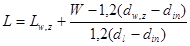
Для помещений с избытком влаги следует проверять достаточность воздухообмена для предупреждения образования конденсата на внутренней поверхности наружных ограждающих конструкций при расчетных параметрах Б наружного воздуха в холодный период года;
г) по избыткам полной теплоты:
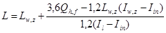
д) по нормируемой кратности воздухообмена:
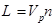
е) по нормируемому удельному расходу приточного воздуха:
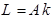
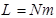
В формулах (1)-(7):
Lw,z - расход воздуха, удаляемого из обслуживаемой или рабочей зоны помещения системами местных отсосов, и на технологические нужды, м3/ч;
Q, Qh,f - избыточный явный и полный тепловой потоки в помещение, Вт;
с - теплоемкость воздуха, равная 1,2 кДж/(м3×°С);
tw,z - температура воздуха в обслуживаемой или рабочей зоне помещения, удаляемого системами местных отсосов, и на технологические нужды, °С;
tl - температура воздуха, удаляемого из помещения за пределами обслуживаемой или рабочей зоны, °С;
tin - температура воздуха, подаваемого в помещение, °С, определяемая в соответствии с п. 6;
W - избытки влаги в помещении, г/ч;
dw,z - влагосодержание воздуха, удаляемого из обслуживаемой или рабочей зоны помещения системами местных отсосов, и на технологические нужды, г/кг;
dl - влагосодержание воздуха, удаляемого из помещения за пределами обслуживаемой или рабочей зоны, г/кг;
din - влагосодержание воздуха, подаваемого в помещение, г/кг;
Iw,z - удельная энтальпия воздуха, удаляемого из обслуживаемой или рабочей зоны помещения системами местных отсосов, и на технологические нужды, кДж/кг;
Il - удельная энтальпия воздуха, удаляемого из помещения за пределами обслуживаемой или рабочей зоны, кДж/кг;
Iin - удельная энтальпия воздуха, подаваемого в помещение. кДж/кг, определяемая с учетом повышения температуры в соответствии с п. 6;
mpo - расход каждого из вредных или взрывоопасных веществ, поступающих в воздух помещения, мг/ч;
qw,z, ql - концентрация вредного или взрывоопасного вещества в воздухе, удаляемом соответственно из обслуживаемой или рабочей зоны помещения и за ее пределами, мг/м3;
qin - концентрация вредного или взрывоопасного вещества в воздухе, подаваемом в помещение, мг/м3;
Vp - объем помещения, м3; для помещений высотой 6 м и более следует принимать Vp = 6A;
A - площадь помещения, м2;
N - число людей (посетителей), рабочих мест, единиц оборудования;
n - нормируемая кратность воздухообмена, ч-1;
k - нормируемый расход приточного воздуха на 1 м2 пола помещения, м3/(ч×м2);
m - нормируемый удельный расход приточного воздуха на 1 чел., м3/ч, на 1 рабочее место, на 1 посетителя или единицу оборудования.
Параметры воздуха tw,z, dw,z, Iw,z следует принимать равными расчетным параметрам в обслуживаемой или рабочей зоне помещения по разд. 2 настоящих норм, а qw,z - равной ПДК в рабочей зоне помещения.
3. Расход воздуха для обеспечения норм взрывопожарной безопасности следует определять по формуле (2).
При этом в формуле (2) qw,z и ql следует заменить на 0,1 qg, мг/м3 (где qg - нижний концентрационный предел распространения пламени по газо-, паро- и пылевоздушной смесям).
4. Расход воздуха Lhe, м3/ч, для воздушного отопления, не совмещенного с вентиляцией, следует определять по формуле
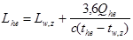
где Qhe - тепловой поток для отопления помещения, Вт;
the - температура подогретого воздуха, °С, подаваемого в помещение, определяется расчетом.
5. Расход воздуха Lmt от периодически работающих вентиляционных систем с номинальной производительностью Ld, м3/ч, приводится исходя из n, мин, прерываемой работа системы в течение 1 ч по формуле
. (9)
6. Температуру приточного воздуха, подаваемого системами вентиляции с искусственным побуждением и кондиционирования воздуха, tin, °С, следует определять по формулам:
а) при необработанном наружном воздухе:
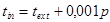
б) при наружном воздухе, охлажденном циркулирующей водой по адиабатному циклу, снижающем его температуру на Dt1, °С:
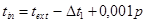
в) при необработанном наружном воздухе (см. подпункт «а») и местном доувлажнении воздуха в помещении, снижающем его температуру на Dt2, °С:
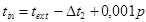
г) при наружном воздухе, охлажденном циркулирующей водой (см. подпункт «б»), и местном доувлажнении (см. подпункт «в»):
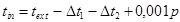
д) при наружном воздухе, нагретом в воздухонагревателе, повышающем его температуру на Dt3, °С:
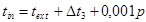
где p - полное давление вентилятора, Па;
text - температура наружного воздуха, °С.
Системы вентиляции для лабораторных помещений научно-исследовательского и производственного назначения следует проектировать в соответствии с требованиями, установленными для производственных помещений с учетом категории взрывопожарной и пожарной опасности.
2. Общие приточные системы допускается проектировать для групп помещений, расположенных не более чем на 11 этажах (включая технические и подвальные), категорий В, Г и Д и административно-бытовых с присоединением к ним не более двух (на разных этажах) кладовых категории А, каждая площадью не более 36 м2, для хранения оперативного запаса исследуемых веществ. На воздуховодах этих кладовых следует устанавливать огнезадерживающие клапаны с пределом огнестойкости 0,5 ч. Для помещений категории В воздуховоды следует проектировать в соответствии с п. 4.109, в или 4.109, г.
3. Общую вытяжную систему общеобменной вентиляции и местных отсосов допускается проектировать:
а) для кладовой категории А оперативного хранения исследуемых веществ;
б) для одного лабораторного помещения категорий В, Г и Д, если в оборудовании, снабженном местными отсосами, не образуются взрывоопасные смеси.
4. В лабораторных помещениях научно-исследовательского назначения, в которых могут производиться работы с вредными или горючими газами, парами и аэрозолями, рециркуляция воздуха не допускается.
5. В лабораторных помещениях категории В площадью 36 м2 и менее допускается не проектировать системы противодымной защиты.
|
Помещения (участки, зоны) |
Помещения |
Приточные системы |
|||
|
с естественным проветриванием |
без естественного проветривания |
||||
|
Расход воздуха |
|||||
|
на 1 чел, м3/ч |
на 1 чел, м3/ч |
обмен/ч |
% общего воздухообмена, не менее |
||
|
Производственные |
30*; 20** |
60 |
1 |
- |
Без рециркуляции или с рециркуляцией при кратности 10 обменов/ч и более |
|
- |
60 90 120 |
- |
20 15 10 |
С рециркуляцией при кратности менее 10 обменов/ч |
|
|
Общественные и административно-бытовые |
По требованиям соответствующих СНиП |
60; 20*** |
- |
- |
- |
|
Жилые |
3 м3/ч на 1м2 жилых помещений |
- |
- |
- |
- |
|
* При объеме помещения (участка, зоны) на 1 чел. менее 20 м3. ** При объеме помещения (участка, зоны) на 1 чел. 20 м3 и более. *** Для зрительных залов, залов совещаний и других помещений, в которых люди находятся до 3 ч непрерывно. |
|||||
|
Характеристика транспортируемой среды |
Изделия и материалы |
|
Воздух с температурой не более 80 °С при относительной влажности не более 60 % |
Бетонные, железобетонные и гипсовые вентиляционные блоки, асбестоцементные трубы и короба; гипсокартонные, гипсобетонные и арболитовые короба; сталь - тонколистовая оцинкованная, кровельная, листовая, рулонная холоднокатаная; стеклоткань, бумага и картон, другие материалы, отвечающие требованиям указанной среды |
|
То же, при относительной влажности более 60 % |
Бетонные и железобетонные вентиляционные блоки; асбестоцементные трубы и короба; сталь - тонколистовая оцинкованная, листовая; алюминий листовой; пластмассовые трубы и плиты; стеклоткань; бумага и картон с соответствующей пропиткой; другие материалы, отвечающие требованиям указанной среды |
|
Воздушная смесь с химически активными газами, парами и пылью |
Керамические и асбестоцементные трубы и короба; пластмассовые трубы и короба; блоки из кислотоупорного бетона и пластобетона; стеклоткань; металлопласт; сталь листовая; бумага и картон с соответствующими транспортируемой среде защитными покрытиями и пропиткой; другие материалы, отвечающие требованиям указанной среды |
|
Примечания: 1. Воздуховоды из асбестоцементных конструкций не допускается применять в системах приточной вентиляции. 2. Воздуховоды должны иметь покрытие, стойкое к транспортируемой и окружающей среде. |
|
Поперечное сечение (диаметр, высота или ширина по наружному измерению) металлических воздуховодов необходимо принимать следующих размеров, мм:
50 56 63 71 80 90 100 112 125 140 160 180
200 224 250 280 315 355 400 450 500 560 630 710
800 900 1000 1120 1250 1400 1600 1300 2000 2240 2500 2800
3150 3350 3550 4000 4500 5000 5600 6300 7100 8000 9000 10000
Примечания: 1. Соотношение сторон прямоугольных сечений не должно превышать 6,3. Размеры воздуховодов следует уточнять по данным заводов-изготовителей.
2. Толщину листовой стали для воздуховодов, по которым перемещается воздух температурой не выше 80 °С, следует принимать, мм, не более:
а) для воздуховодов круглого сечения диаметром, мм:
до 200 включ. 0,5
от 250 » 450 0,6
» 500 » 800 0,7
» 900 » 1250 1,0
» 1400 » 1600 1,2
» 1800 » 2000 1,4
б) для воздуховодов прямоугольного сечения размером большей стороны, мм:
до 250 включ. 0,5
от 300 » 1000 0,7
» 1250 » 2000 0,9
в) для воздуховодов прямоугольного сечения, имеющих одну из сторон свыше 2000 мм и воздуховодов сечением 2000´2000 мм толщину стали следует обосновывать расчетом.
3. Для сварных воздуховодов толщина стали определяется по условиям производства сварных работ.
4 Для воздуховодов. по которым предусматривается перемещение воздуха температурой более 80 °С или воздуха с механическими примесями или абразивной пылью, толщину стали следует обосновывать расчетом.
1. Расход дыма G1, кг/ч, подлежащий удалению из коридора или холла (см. п. 5.6, б) следует определять по формулам:
а) для жилых зданий
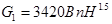
б) для общественных, административно-бытовых и производственных зданий
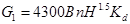
В формулах (1), (2):
В - ширина большей из открываемых створок дверей при выходе из коридора или холла к лестничным клеткам или наружу, м;
n - коэффициент, зависящий от общей ширины больших створок, открываемых при пожаре из коридора на лестничные клетки или наружу и принимаемый по таблице:
|
Здания |
Коэффициент n при значениях ширины В |
||||
|
0,6 |
0,9 |
1,2 |
1,3 |
2,4 |
|
|
Жилые |
1,00 |
0,82 |
0,70 |
0,51 |
0,41 |
|
Общественные, административно-бытовые и производственные |
1,05 |
0,91 |
0,80 |
0,62 |
0,50 |
H - высота двери, м; при Н > 2,5 м принимать Н = 2,5 м;
Kd - коэффициент относительной продолжительности открывания дверей из коридора на лестничную клетку или наружу во время эвакуации людей, следует принимать равным 1 при эвакуации 25 чел. и более через одну дверь и 0,8 - при эвакуации менее 25 чел. через одну дверь.
2. Расход дыма G, кг/ч, удаляемого из помещения, следует определять по периметру очага пожара (см. п. 5.6, а).
Расход дыма для помещений площадью до 1600 м2 или резервуара дыма для помещений большей площади (см. п. 5.7) следует определять по формуле
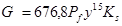
где Pf - периметр, м. очага пожара в начальной стадии, принимаемый равным большему из периметров открытых или негерметично закрытых емкостей горючих веществ или мест складирования горючих или негорючих материалов (деталей) в горючей упаковке.
Для помещений, оборудованных спринклерными системами, принимается Pf = 12 м. Если периметр очага пожара невозможно определить, то его допускается определять по формуле
, (4)
A - площадь, м2, помещения или резервуара дыма;
у - расстояние, м, от нижней границы задымленной зоны до пола, принимаемое для помещений 2,5 м. или от нижнего края завесы, образующей резервуар дыма, до пола;
Кs - коэффициент, равный 1,0, а для систем с естественным побуждением при одновременном тушении пожара спринклерными системами Кs = 1,2.
Примечание. При температуре очага пожара А > 12 м или расстоянии y > 4 м расход дыма следует определять в соответствии с п. 3 настоящего приложения.
3. Расход дыма G1, кг/ч, удаляемый из помещений (из условия защиты дверей эвакуационных выходов), следует определять по формуле (5) для холодного (параметры Б) и проверять для теплого периода года, если скорость ветра в теплый период больше, чем в холодный:
где SAd - эквивалентная (расходу) площадь дверей эвакуационных выходов, м2;
h0 - расчетная высота от нижней границы задымленной зоны до середины двери; принимается
h0 = 0,5Hd + 0,2;
Hd - высота наиболее высоких дверей эвакуационных выходов, м;
yin - удельный вес наружного воздуха, Н/м3;
y - удельный вес дыма, принимаемый в соответствии с пп. 5.9 и 5.10;
pin - плотность наружного воздуха, кг/м3;
V - скорость ветра, м/с: при V = 1,0 м/с следует принимать V = 0; при V > 1,0 м/с в соответствии со СНиП 23-01, но не более 5 м/с.
Примечание. В застроенной территории допускается принимать, скорость ветра по данным местной метеорологической станции, но не более 5 м/с.
Поправка от 25.03.2003 г.
Эквивалентная площадь дверей Ad рассчитывается по формуле:
, (6)
где SA1 - суммарная площадь одинарных дверей, открывающихся наружу;
SA1 - суммарная площадь первых дверей для выхода из помещения, при которых требуется открывать наружу вторые двери, суммарной площадью SA2, м2 (например, двери тамбура);
SA3 - суммарная площадь первых дверей для выхода из помещения, при которых требуется открывать наружу вторые и третьи двери, суммарной площадью SA3 и SA"3;
K1, K2 - коэффициенты для определения эквивалентной площади последовательно расположенных дверей по формулам:
; (7)
, (8)
здесь ; ;
; (9)
K3 - коэффициент относительной продолжительности открывания дверей во время эвакуации людей из помещения, определяемый по формулам:
для одинарных дверей:
; (10)
для двойных дверей или при выходе через тамбуры-шлюзы:
, (11)
где N - среднее число людей, выходящих из помещения через каждую дверь.
К3 следует принимать: не менее 0,8 - при одной двери; 0,7 - при двух дверях; 0,6 - при трех; 0,5 - при четырех и 0,4 - при пяти и большем числе дверей в помещении.
Эквивалентная площадь дверей эвакуационных выходов SАd из помещения определяется для местностей с расчетной скоростью ветра:
а) 1 м/с и менее - суммарно для всех выходов;
б) более 1 м/с - отдельно для выходов из дверей со стороны фасада (наибольшей эквивалентной площадью, которая рассматривается как площадь выходов на наветренный фасад) и суммарно для всех остальных выходов.
а - расположение источника над зоной всасывания наружного воздуха приемным устройством (высота трубы источника H = 2h1 + h);
б - то же, над кровлей здания (высота трубы источника H = h);
h - расстояние по вертикали, м, горизонтальной оси струи;
h1 - высота отверстия для приема наружного воздуха, м;
l - расстояние между устьем источника и приемным устройством для наружного воздуха, м;
I - кривая для определения K, если источник и приемное устройство находятся вне зоны аэродинамической тени;
II - кривая для определения К, если источник находится в зоне аэродинамической тени, а приемное устройство - вне тени;
III - кривая для определения К, если источник и приемное устройство находятся в зоне аэродинамической тени.
ВЕНТИЛЯЦИЯ - обмен воздуха в помещениях для удаления избытков теплоты, влаги, вредных и других веществ с целью обеспечения допустимых метеорологических условий и чистоты воздуха в обслуживаемой или рабочей зоне при средней необеспеченности 400 ч/г - при круглосуточной работе и 300 ч/г - при односменной работе в дневное время.
ВЕРХНЯЯ ЗОНА ПОМЕЩЕНИЯ - зона помещения, расположенная выше обслуживаемой или рабочей зоны.
ВЗРЫВООПАСНАЯ СМЕСЬ - смесь горючих газов, паров, пыли, аэрозолей или волокон с воздухом при нормальных атмосферных условиях (давлении 760 мм рт. ст. и температуре 20 °С), у которой при воспламенении горение распространяется на весь объем несгоревшей смеси и развивается давление взрыва, превышающее 5 кПа. Взрывоопасность веществ, выделяющихся при технологических процессах, следует принимать по заданию на проектирование.
ВОЗДУШНЫЙ ЗАТВОР - вертикальный участок воздуховода, изменяющий направление движения дыма (продуктов горения) на 180° и препятствующий при пожаре прониканию дыма из нижерасположенных этажей в вышерасположенные.
ВРЕДНЫЕ ВЕЩЕСТВА - вещества, для которых органами санэпидемнадзора установлена предельно допустимая концентрация (ПДК) вредного вещества.
ДИСБАЛАНС - разность расходов воздуха, подаваемого в помещение (здание) и удаляемого из него системами вентиляции с искусственным побуждением, кондиционирования воздуха и воздушного отопления.
ДЫМОВОЙ КЛАПАН - клапан с нормируемым пределом огнестойкости, открывающийся при пожаре.
ДЫМОПРИЕМНОЕ УСТРОЙСТВО - отверстие в воздуховоде (канале, шахте) с установленными на нем или на воздуховоде дымовым клапаном, открывающимся при пожаре.
ДЫМОВАЯ ЗОНА - часть помещения общей площадью не более 1600 м2 из которой в начальной стадии пожара удаляется дымовая смесь расходом, обеспечивающим эвакуацию людей из горящего помещения.
ЗОНА ДЫХАНИЯ - пространство радиусом 0,5 м от лица работающего.
защищаемое ПОМЕЩЕНИЕ - помещение, при входе в которое для предотвращения перетекания воздуха имеется тамбур-шлюз или создается повышенное или пониженное давление воздуха по отношению к смежным помещениям.
ИЗБЫТКИ ЯВНОЙ ТЕПЛОТЫ - разность тепловых потоков, поступающих в помещение и уходящих из него при расчетных параметрах наружного воздуха (после осуществления технологических и строительных мероприятий по уменьшению теплопоступлений от оборудования, трубопроводов и солнечной радиации).
КОЛЛЕКТОР - участок воздуховода, к которому присоединяются воздуховоды из двух или большего числа этажей.
КОНДИЦИОНИРОВАНИЕ ВОЗДУХА - автоматическое поддержание в закрытых помещениях всех или отдельных параметров воздуха (температуры, относительной влажности, чистоты, скорости движения) с целью обеспечения главным образом оптимальных метеорологических условий, наиболее благоприятных для самочувствия людей, ведения технологического процесса, обеспечения сохранности ценностей культуры со средней необеспеченностью для следующих классов кондиционирования воздуха:
первого - в среднем 100 ч/г при круглосуточной работе или 70 ч/г при односменной работе в дневное время;
второго - в среднем 250 ч/г при круглосуточной работе или 175 ч/г при односменной работе в дневное время;
третьего - в среднем 450 ч/г при круглосуточной работе или 315 ч/г при односменной работе в дневное время.
КОРИДОР, НЕ ИМЕЮЩИЙ ЕСТЕСТВЕННОГО ОСВЕЩЕНИЯ - коридор, не имеющий световых проемов в наружных ограждениях.
КОСВЕННОЕ ИСПАРИТЕЛЬНОЕ ОХЛАЖДЕНИЕ - охлаждение воздуха в поверхностных теплообменниках водой, охлажденной прямым испарительным охлаждением.
КЛАДОВАЯ - склад, в котором отсутствуют постоянные рабочие места.
МЕСТНЫЙ ОТСОС - устройство для улавливания вредных и взрывоопасных газов, пыли, аэрозолей и паров (зонт, бортовой отсос, вытяжной шкаф, кожух-воздухоприемник и т.п.) у мест их образования (станок, аппарат, ванна, рабочий стол, камера, шкаф и т.п.), присоединяемое к воздуховодам систем местных отсосов и являющееся, как правило, составной частью технологического оборудования.
МЕСТО ПОСТОЯННОГО ПРЕБЫВАНИЯ ЛЮДЕЙ В ПОМЕЩЕНИИ - место, где люди находятся более 2 ч непрерывно.
МНОГОЭТАЖНОЕ ЗДАНИЕ - здание с числом этажей 2 и более.
НЕПОСТОЯННОЕ РАБОЧЕЕ МЕСТО - место, где люди работают менее 2 ч. в смену непрерывно или менее 50 % рабочего времени.
ОБСЛУЖИВАЕМАЯ ЗОНА - пространство в помещении высотой 2 м с постоянным пребыванием людей, стоящих или двигающихся, и высотой 1,5 м - людей сидящих.
ОГНЕСТОЙКИЙ ВОЗДУХОВОД - плотный воздуховод со стенками, имеющими нормируемый предел огнестойкости.
ОТОПЛЕНИЕ - поддержание в закрытых помещениях нормируемой температуры со средней необеспеченностью 50 ч/г.
ОТСТУПКА - расстояние от наружной поверхности печи или дымового канала (трубы) до защищенной или не защищенной от возгорания стены или перегородки из горючих или трудногорючих материалов.
ПОЖАРООПАСНАЯ СМЕСЬ - смесь горючих газов, паров, пыли, волокон с воздухом, если при ее горении развивается давление, не превышающее 5 кПа. Пожароопасность смеси должна быть указана в задании на проектирование.
ПОСТОЯННОЕ РАБОЧЕЕ МЕСТО - место, где люди работают более 2 ч. непрерывно или более 50 % рабочего времени.
ПОМЕЩЕНИЕ С МАССОВЫМ ПРЕБЫВАНИЕМ ЛЮДЕЙ - помещение (залы и фойе театров, кинотеатров, залы заседаний, совещаний, лекционные аудитории, рестораны, вестибюли, кассовые залы, производственные и другие) с постоянным или временным пребыванием людей (кроме аварийных ситуаций) числом более 1 чел. на 1 м2 помещения площадью 50 м2 и более.
ПОМЕЩЕНИЕ БЕЗ ЕСТЕСТВЕННОГО ПРОВЕТРИВАНИЯ - помещение без открываемых окон или проемов в наружных стенах или помещение с открываемыми окнами (проемами), расположенными на расстоянии, превышающем пятикратную высоту помещения.
ПОМЕЩЕНИЕ, НЕ ИМЕЮЩЕЕ ВЫДЕЛЕНИЙ ВРЕДНЫХ ВЕЩЕСТВ - помещение, в котором из технологического и другого оборудования частично выделяются в воздух Вредные вещества в количествах, не создающих (в течение смены) концентраций, превышающих ПДК в воздухе рабочей зоны.
ПОМЕЩЕНИЕ, НЕ ИМЕЮЩЕЕ ЕСТЕСТВЕННОГО ОСВЕЩЕНИЯ - помещение, не имеющее окон или световых проемов в наружных ограждениях.
ПРЯМОЕ ИСПАРИТЕЛЬНОЕ ОХЛАЖДЕНИЕ - охлаждение воздуха рециркулирующей водой.
РАБОЧАЯ ЗОНА - пространство над уровнем пола или рабочей площадки высотой 2м при выполнении работы стоя или 1,5 м - при выполнении работы сидя.
РАЗДЕЛКА - утолщение стенки печи или дымового канала (трубы) в месте соприкосновения ее с конструкцией здания, выполненной из горючего или трудногорючего материала.
РЕЗЕРВУАР ДЫМА - дымовая зона, огражденная по периметру негорючими завесами, спускающимися с потолка (перекрытия) до уровня 2,5 м от пола и более.
РЕЗЕРВНАЯ СИСТЕМА ВЕНТИЛЯЦИИ (резервный вентилятор) - система (вентилятор), предусматриваемая в дополнение к основным системам для автоматического ее включения при выходе из строя одной из основных систем.
РЕЦИРКУЛЯЦИЯ ВОЗДУХА - подмешивание воздуха помещения к наружному воздуху и подача этой смеси в данное или другие помещения; рециркуляцией не является перемешивание воздуха в пределах одного помещения, в том числе сопровождаемое нагреванием (охлаждением) отопительными агрегатами (приборами) или вентиляторами-веерами.
СБОРНЫЙ ВОЗДУХОВОД - участок воздуховода, к которому присоединяются воздуховоды, проложенные на одном этаже.
СИСТЕМА МЕСТНЫХ ОТСОСОВ - система местной вытяжной вентиляции, к воздуховодам которой присоединяются местные отсосы.
ТЕПЛОЕМКАЯ ПЕЧЬ - печь, обеспечивающая нормируемую температуру воздуха в помещении при топке не более двух раз в сутки.
ТРАНЗИТНЫЙ ВОЗДУХОВОД - участок воздуховода, прокладываемый за пределами обслуживаемого им помещения или группы помещений.
1. Настоящие характеристики распространяются на трубы и фасонные детали из полимерных материалов, применяемые в системах отопления с температурой теплоносителя не более 90 °С и рабочим давлением до 1,0 МПа.
2. Для систем отопления применяют трубы и детали, изготовленные из полиэтилена с усовершенствованной молекулярной структурой (ПЭс), полипропилена (ПП-3), хлорированного поливинилхлорида (ХПВХ), металлополимерных (МП), которые отвечают санитарным нормам.
3. Физические характеристики труб приведены в таблице 1.
Таблица 1
|
Наименование |
Единица измерения |
Величина |
|||
|
ПЭс |
ПП-3 |
ХПВХ |
МП |
||
|
Модуль упругости |
МПа |
600 |
800 |
3700 |
|
|
Коэффициент теплопроводности |
Вт/м×°С |
0,41 |
0,24 |
0,14 |
0,45 |
4. Трубы должны выдерживать испытания на стойкость при постоянном внутреннем давлении при условиях, указанных в таблице 2.
Таблица 2
|
Время испытаний, час, не менее |
Напряжение в стенке трубы, МПа |
||||
|
ПЭс |
ПП-3 |
ХПВХ |
МП |
||
|
20 |
1 |
12,0 |
16,0 |
43,0 |
См. таблицу 3 |
|
95 |
1 |
4,8 |
10,0 |
||
|
95 |
1000 |
4,4 |
3,6 |
5,5 |
|
|
95 |
8000 |
4,2 |
2,9 |
4,3 |
|
Металлополимерные трубы должны выдерживать без признаков разрушения испытания внутренним давлением при условиях, приведенных в таблице 3.
Таблица 3
|
Время испытаний, час, не менее |
Диаметр трубы, мм |
||||
|
10 |
12 |
14 |
>14 |
||
|
Давление, не менее, МПа |
|||||
|
20 |
1 |
5,0 |
5,0 |
4,5 |
4,5 |
|
95 |
1 |
2,0 |
2,0 |
1,8 |
1,8 |
|
95 |
1000 |
1,6 |
1,6 |
1,6 |
1,6 |
|
95 |
8000 |
0,9 |
0,9 |
0,9 |
0,9 |
5. Предел текучести при растяжении и относительное удлинение при разрыве должны быть не менее величин, указанных в таблице 4.
Таблица 4
|
Предел текучести при растяжении, МПа |
Относительное удлинение при разрыве, % |
|
|
ПЭс |
10 |
300 |
|
ПП-3 |
27 |
250 |
|
ХПВХ |
50 |
30 |
|
МП |
10 |
300 |
6. Изменение размеров труб после их прогрева не должно быть более величин, указанных в таблице 5.
Таблица 5
|
Температура прогрева, °С |
Изменение размеров, % |
|
|
ПЭс |
100 |
3,0 |
|
ПП-3 |
150 |
3,0 |
|
ХПВХ |
140 |
3,0 |
|
МП |
120 |
1,0 |
7. Трубы, изготовленные из ХПВХ, должны обладать ударной прочностью не менее, указанной в таблице 6.
Таблица 6
|
Ударная прочность, Дж (кг.м) |
|
|
До 40 вкл. |
27,5 (2,75) |
|
50 |
30,0 (3,00) |
|
До 90 вкл. |
45,0 (4,50) |
8. Температура размягчения труб и фасонных деталей, изготовленных из хпвх, определяемая по Вика, должна быть не ниже 110 °С.
9. Водопоглощение труб и фасонных деталей, изготовленных из ХПВХ не должно быть более 4 мг на 1 см2.
10. Показатель текучести расплава материала труб и фасонных деталей, изготовленных из ПЭс и ПП-3 после прогрева в воздушной среде при температуре 100 °С ± 2 °С в течение соответственно 250, 500 и 1000 ч не должен изменяться более чем на 25 %.
11. Трубы и фасонные детали, изготовленные из ПЭс и ПП-3 не должны растрескиваться после их прогрева в течение 24 ч в 20 %-ном растворе вещества ОП-10 по ГОСТ 8433 при температуре 80 °С.
12. Овальность и разностенность труб не должны превышать предельные отклонения от размеров и толщин стенок. Овальность гнутых труб не должна превышать 25 %.
13. Содержание гель-фракции (степень сшивки) полиэтиленовых труб должно быть не менее 60 %.
1. Настоящие указания распространяются на монтаж труб из полимерных материалов и соединительных деталей, применяемых в системах отопления.
2. Поверхность труб и соединительных деталей должна быть ровной и гладкой. На изделиях не допускаются трещины, раковины, следы разложения материала, видимые без применения увеличительных приборов. Высота выступов после удаления литников не должна превышать 0,5 мм.
3. Концы труб должны быть обрезаны перпендикулярно оси трубы и защищены от заусенцев.
4. Резьба на соединительных деталях должна быть полного профиля без сорванных и недооформленных ниток и обеспечивать свинчиваемость не менее чем на одну-две нитки вручную.
5. Места соединений, арматура и концевые участки труб из полимерных материалов должны иметь опоры или подвески.
Опоры и подвески для труб из полимерных материалов должны предусматриваться с прокладками из того же или более мягкого материала.
Рекомендуемые расстояния между горизонтальными опорами трубопроводов приведены в таблице 1.
Таблица 1
|
Номинальный наружный диаметр, мм |
Расстояние между опорами, не более, мм |
|
16 20 |
500 |
|
25 32 |
600 |
|
40 |
750 |
|
50 |
900 |
|
63 |
1000 |
|
75 |
1100 |
|
90 |
1200 |
6. Для вертикального трубопровода опоры устанавливаются не реже, чем через 1000 мм для труб диаметром до 32 мм и не реже, чем через 1500 мм для труб большего диаметра.
7. Размеры опор должны соответствовать диаметрам трубопроводов.
8. Конструкция скользящей опоры должна обеспечивать перемещение трубы только в осевом направлении.
Неподвижное крепление трубопровода на опоре путем сжатия трубы не допускается.
9. При проходе трубопровода через стены и перегородки должно быть обеспечено его свободное перемещение (установка гильз). При скрытой прокладке трубопроводов в конструкции стены или пола должна быть обеспечена возможность температурного удлинения труб.
10. При прокладке трубопроводов следует предусматривать компенсацию теплового удлинения труб. В углах поворотов труб из полимерных материалов необходимо предусматривать места (компенсационные ниши) для свободного перемещения труб. Допускается не предусматривать компенсаторы на прямых участках пластмассовых трубопроводов при устройстве опор через 0,5 м.
Расчет компенсирующей способности Г-образных элементов и П-образных компенсаторов производят в зависимости от термического удлинения трубы, определяемой по формуле:
Dl = L×a×Dt ,
где: L - длина трубы, м;
a - коэффициент температурного расширения материала трубы, 1/°С, допускается принимать:
для полиэтилена - 18,0×10-5;
для полипропилена - 15,0×10-5;
для поливинилхлорида - 6,2×10-5;
для металлополимера - 2,5×10-5;
Dt - разность расчетных температур: теплоносителя и воздуха в помещении при производстве монтажных работ.
11. При использовании полиэтиленовых труб для устройства «теплых» полов температуру теплоносителя целесообразно принимать ниже 55 °С.
12. Радиус изгиба труб должен быть не менее 5 диаметров (для труб из полипропилена - не менее 8 диаметров). При этом на поверхности труб не должно быть трещин.
13. Все трубопроводы должны быть подвергнуты испытанию давлением по п. 3.43, а при постоянной температуре испытательной среды. В трубопроводе не должно быть течи.
14. Трубы и соединительные детали следует хранить в закрытом помещении или под навесом и должны быть защищены от воздействия солнечной радиации. При этом трубы не должны подвергаться изгибам и механическим повреждениям.
15. Монтаж трубопроводов следует выполнять при температуре воздуха в помещении, где монтируются трубы, не ниже 10 °С.
СОДЕРЖАНИЕ